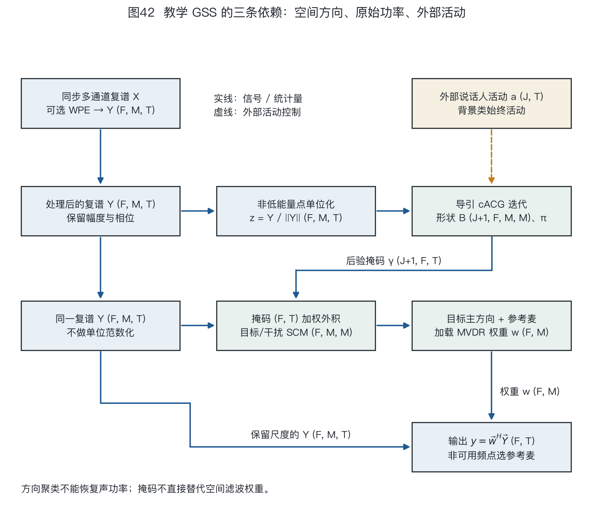
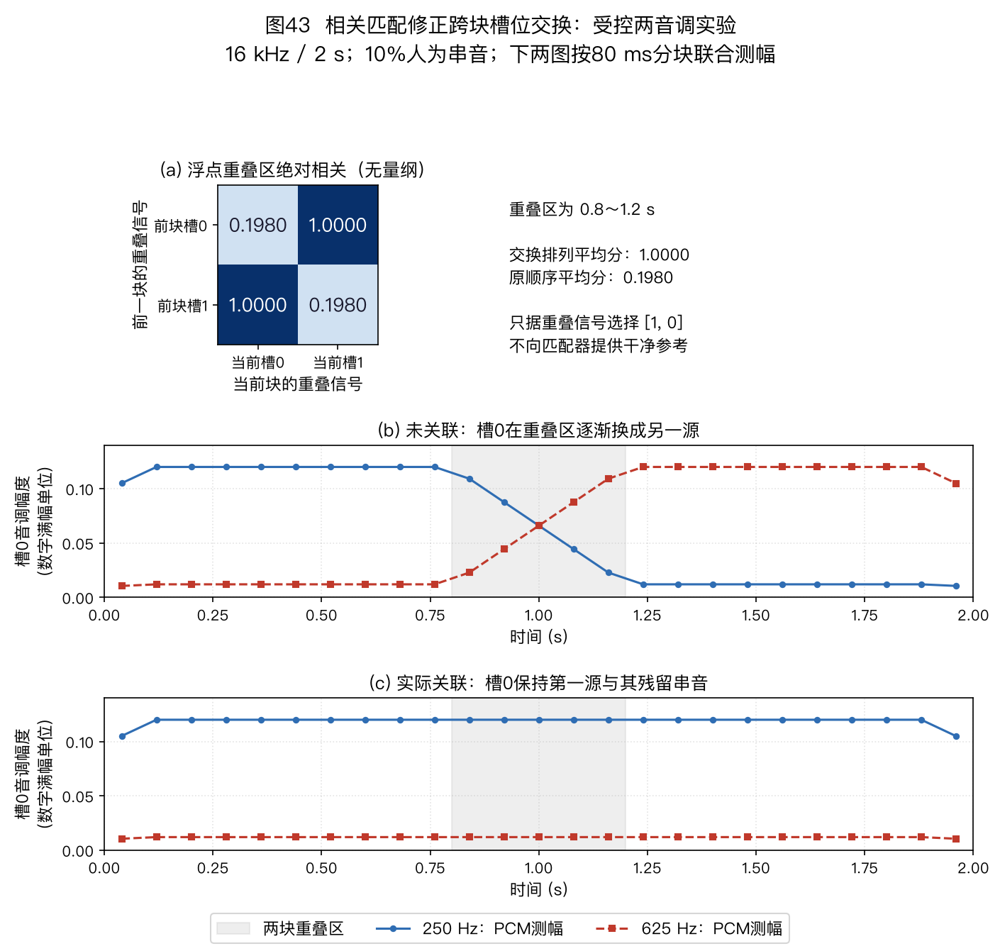
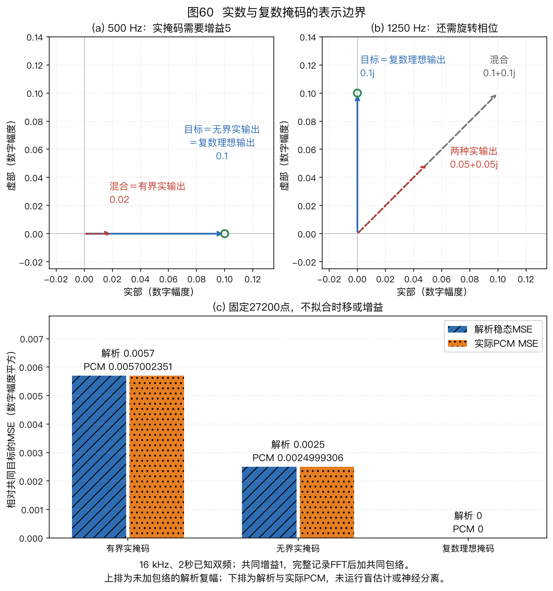
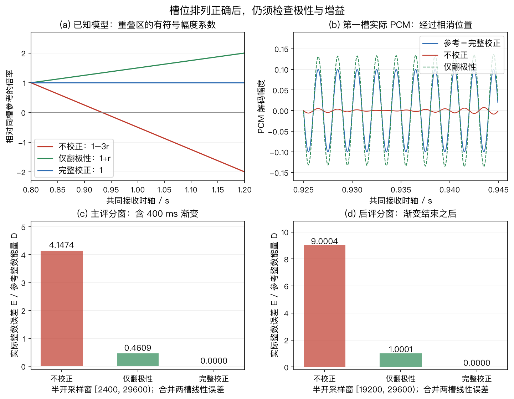

本页目录
本篇是本书正文第 8 章；正文与扩展专题共 16 章（第 0～15 章，其中第 0 章为数学基础，第 12～15 章为四篇扩展专题），另有附录 A、B。本篇可独立阅读，前后篇见下方导航。
导读首页：🏠 导读与导航 ｜ 上一篇：第 7 章 · 去混响（WPE） ｜ 下一篇：第 9 章 · 声源追踪
8. 语音分离
第 7 章讨论了单一或多个声源在房间传播中形成的晚期混响拖尾；本章聚焦经典的“鸡尾酒会问题”——当多名说话人在同一空间同时开口时，如何从混合录音中分离出各自清晰的语音流。我们将沿着免训练经典盲源分离（Blind Source Separation，BSS）、活动导引源分离（Guided Source Separation，GSS）以及深度神经网络分离三条主线展开推导，并在 §8.2 阐明它们在完整多麦前端链路中的级联法则。
8.1 多说话人语音分离：鸡尾酒会问题
去混响处理的是同一声源在时间轴上的反射拖尾，语音分离处理的则是不同声源在同一时刻、同一频带内的混叠干扰；在真实远场会议中，这两类污染往往同时存在，需要协同抑制。本节先建立多通道卷积混合与窄带模型，厘清时频掩码与空间协方差估计（衔接第 5 章 §5.9）的联系，再推导监督分离的置换不变训练准则。
最小术语与阅读顺序
| 缩写 | 含义 | 本章中的作用 |
|---|---|---|
| STFT | 短时傅里叶变换（Short-Time Fourier Transform） | 将时域混合波形变换为复数时频观测 |
| BSS | 盲源分离（Blind Source Separation） | 不依赖预先训练的监督标签，直接从混合观测估计解混器与声源 |
| SCM | 空间协方差矩阵（Spatial Covariance Matrix） | 刻画多麦克风间的二阶幅度与相位相关性 |
| RTF | 相对传递函数（Relative Transfer Function） | 描述目标声源在各麦克风相对于参考麦克风的复数传递比值 |
| NMF | 非负矩阵分解（Nonnegative Matrix Factorization） | 用少量非负谱基与时间激活的乘积刻画源功率谱的低秩结构 |
| PIT | 置换不变训练（Permutation Invariant Training） | 在监督损失中动态匹配输出槽位与参考说话人的最优排列 |
| CSS | 连续语音分离（Continuous Speech Separation） | 解决长会议录音滑窗分块后的跨块槽位对齐与无缝拼接 |
进入具体公式前，务必先区分三个极易混淆的物理对象：
- 干声源波形（source signal）：$s_n[t]$ 是第 $n$ 位说话人嘴边尚未经历房间传播的发声信号；
- 源图像（source image）：声学阵列领域的专有术语——这里的“图像”指声学映射分量而绝非视觉图片，专指第 $n$ 个声源单独发声、经过房间冲激响应传播到达某支指定参考麦克风 $r$ 时在该通道上形成的波形分量（因此同一句话在不同阵元上的源图像带有不同的传播时延、幅度衰减与混响染色）；
- 原始解混输出（unmixed output）：盲分离器直接吐出的分离通道虽然剥离了其他说话人，却往往带有任意的逐频复数缩放与通道排列错位。
因此，原始解混输出必须经过后文的回投影（projection back）才能还原到参考麦源图像的物理尺度。
卷积混合与源数
在离散采样时间 $t$ 下，第 $m$ 支麦克风（$m=1,\dots,M$）接收到的混合波形，等于 $N$ 位说话人的干声各自与房间冲激响应卷积后的叠加，再加上麦克风底噪与环境噪声 $v_m[t]$：
$$\begin{aligned} x_m[t]&=\sum_{n=1}^{N}\sum_{\tau=0}^{L_h-1} h_{mn}[\tau]s_n[t-\tau]+v_m[t]. \end{aligned}\tag{8-1}$$
其中 $\tau$ 为离散延迟采样索引，$L_h$ 为有限冲激响应（Finite Impulse Response，FIR）模型的抽头长度，$h_{mn}[\tau]$ 表示从第 $n$ 个声源到第 $m$ 支麦克风的声学传递冲激响应。根据同时发声的源数 $N$ 与可用麦克风通道数 $M$ 的大小关系，分离问题呈现截然不同的代数结构：
- 正定（确定）混合（$N=M$）：声源数与麦克风数相等（注意 $N=M$ 仅表示混合矩阵为方阵，若两说话人站在同一方向仍会秩亏不可逆），这是标准方阵辅助函数型独立向量分析（Auxiliary-function-based Independent Vector Analysis，AuxIVA）与独立低秩矩阵分析（Independent Low-Rank Matrix Analysis，ILRMA）的典型工作区间；
- 超定混合（$N\lt M$）：麦克风多于目标声源，多余的空间自由度可用于压制背景弥散噪声（如后文的 OverIVA 或掩码 MVDR 波束形成），但切忌盲目用主成分分析（PCA）按总能量截断通道，以免在强背景噪声下把弱目标说话人一并丢弃；
- 欠定混合（$N>M$）：说话人比麦克风还多（最极端的特例是单麦克风 $M=1$，完全没有跨通道空间相位线索），此时不存在线性方阵逆可以把所有声源完美解混，必须借助多通道非负矩阵分解（Multichannel NMF，MNMF）的满秩空间协方差加低秩谱结构、时频稀疏掩码或深度神经网络学到的语音先验来分离。
窄带模型与空间统计
将式(8-1)的时域卷积转换到 STFT 域后，若分析窗长相对房间冲激响应的主能量跨度足够长，卷积混合在每个频点 $f$ 上可近似解耦为瞬时线性混合：
$$\begin{aligned} X_m(f,k)&\approx\sum_{n=1}^{N}A_{mn}(f)S_n(f,k)+V_m(f,k). \end{aligned}\tag{8-2}$$
写成紧凑的矩阵—列向量形式即为 $\vec X(f,k)=\mathbf A(f)\vec S(f,k)+\vec V(f,k)$，其中观测列向量 $\vec X\in\mathbb{C}^{M\times 1}$，混合矩阵 $\mathbf A\in\mathbb{C}^{M\times N}$ 的第 $(m,n)$ 元 $A_{mn}(f)$ 为 $h_{mn}[\tau]$ 在频点 $f$ 处的复数频响，源列向量 $\vec S\in\mathbb{C}^{N\times 1}$，加性噪声列向量 $\vec V\in\mathbb{C}^{M\times 1}$。
阅读跨章公式时请留意帧号记号的局部习惯：本章盲分离推导沿用文献惯例以 $k$（部分时间序列更新处亦写作 $t$）表示离散帧索引，对应附录 A 符号表中的 $\ell$；而从第 5 章搬用波束形成公式时，第 5 章 $\vec x(k,n)$ 的第一个参数是频点、第二个参数才是帧号。此外，窄带乘积近似式(8-2)的精度受窗长、帧移与早晚期反射能量比共同制约；当长混响超出单帧窗长时，正好先用第 7 章的 MIMO-WPE 削去跨帧晚期拖尾，帮式(8-2)恢复窄带近似精度。
在自由场无反射、各阵元增益一致的理想远场平面波假设下，间距为 $d$ 的均匀线阵若以第 $1$ 支麦克风为相位参考点，混合矩阵中对应入射角 $\theta$ 的那一列便退化为第 3～5 章熟悉的纯相位导向矢量：
$$\begin{aligned} a_m(f,\theta)&=e^{\mathrm{j}(m-1)\phi},\\ \phi&=2\pi f d\sin\theta/c,\\ \vec a&=[a_1,\ldots,a_M]^\top. \end{aligned}\tag{8-3}$$
用一组具体数字温习空间相位与空间混叠边界：取阵元间距 $d=4\ \mathrm{cm}$、声速 $c=343\ \mathrm{m/s}$、入射角 $\theta=30^\circ$。按第 5 章坐标约定（麦 $1$ 在左端，正角声源靠近 $+x$ 侧），相邻阵元时延差为 $\tau_{21}=t_2-t_1=-d\sin\theta/c$（约 $-58.3\ \mu\mathrm{s}$）。在 $f=2\ \mathrm{kHz}$（波长 $\lambda\approx 17.15\ \mathrm{cm}$，满足 $d\lt \lambda/2$）处，相邻阵元相位差幅值与 $4$ 麦导向矢量分别为：
$$\begin{aligned} 2\pi f|\tau_{21}|&\approx 0.733\ \mathrm{rad} \approx 42^\circ,\\ \vec a(2\ \mathrm{kHz},30^\circ)&\approx \bigl[1,\ e^{+\mathrm{j}42^\circ},\ e^{+\mathrm{j}84^\circ},\ e^{+\mathrm{j}126^\circ}\bigr]^\top, \end{aligned}$$
升至 $4\ \mathrm{kHz}$ 时相邻相位差翻倍至约 $84^\circ$。
当频率继续升至 $8\ \mathrm{kHz}$（波长约 $4.29\ \mathrm{cm}$，$d>\lambda/2$）时，将 $\sin 30^\circ=0.5$ 减去无量纲波长间距比 $\lambda/d=343/(8000\times 0.04)=1.071875$ 得到 $-0.571875$，对应另一物理方向 $\theta'\approx -34.88^\circ$——代回式(8-3)可知相邻麦相位恰好相差整整 $2\pi$，两个截然不同方向的声源在 $8\ \mathrm{kHz}$ 拥有完全相同的导向矢量（反之若目标在正前方 $\theta=0^\circ$，$0\pm 1.071875$ 均超出 $[-1,1]$ 实角度范围，该频点尚无实栅瓣）。而在真实房间中，$\mathbf A(f)$ 的每一列还包含早期反射叠加与阵元频响差异，不能硬套式(8-3)的纯自由场公式，这正是盲分离与掩码协方差估计大显身手的原因。
最小方差无失真响应（MVDR）、广义特征值（GEV）波束形成以及后文的 MNMF，都围绕多通道观测的空间协方差矩阵（SCM）展开。在统计窗口内混合矩阵 $\mathbf A$ 恒定、且声源与加性噪声互不相关（$\mathbb{E}[\vec S\vec V^H]=\mathbf 0$）的前提下，省略频点与帧号下标可得：
$$\begin{aligned} \mathbf R&=\mathbb{E}[\vec X\vec X^H],\\ \mathbf R&\approx\mathbf A\mathbf R_s\mathbf A^H+\mathbf R_v. \end{aligned}\tag{8-4}$$
注意式(8-4)中的 $\mathbf R$ 为未中心化的二阶矩（仅在零均值条件下等于严格统计协方差）；若缺少源与噪声正交假设，展开外积还会多出交叉项 $\mathbf A\mathbb{E}[\vec S\vec V^H]$ 与 $\mathbb{E}[\vec V\vec S^H]\mathbf A^H$ 之和，而源间相关性则体现在 $\mathbf R_s=\mathbb{E}[\vec S\vec S^H]$ 的非对角元上。
后文 §8.4 的复角中心高斯混合模型（Complex Angular Central Gaussian Mixture Model，cACGMM）走了一条精巧的几何路线：它先把每个非零观测向量除以自身范数投影到复单位球面 $\vec z=\vec X/\|\vec X\|_2$，在剥离语音功率起伏后纯粹按空间方向聚类估出软时频掩码；随后 GSS 再拿这组实数软掩码回到未归一化的原始多通道外积 $\vec X\vec X^H$ 上加权累加目标与干扰 SCM（掩码加权 SCM 公式见第 5 章 §5.9 的式(5-22)）。
初学者读到“时频掩码（mask）”时，一定要先看清它究竟乘在什么对象上：
- 单通道谱直接掩蔽：用掩码逐点乘以参考麦克风复谱 $M(f,k)X_r(f,k)$ 后直接做逆 STFT；此时实数掩码只能缩放幅度，复数掩码才能同时修正相位；
- 多通道协方差统计加权：用非负实数掩码 $\gamma(f,k)\ge 0$ 作为快照可信度权重去累加多通道外积 $\sum_k\gamma(f,k)\vec X(f,k)\vec X^H(f,k)$，它本身不直接改动波形相位，而是通过塑造目标/干扰 SCM 来求解线性波束形成权重 $\vec w(f)$；
- 波束后单通道后置掩蔽（post-masking）：在多通道线性波束输出的单路复谱上再乘一层谱增益压低残余漏音。
由此可见，波束形成与语音分离绝非水火不容的对立路线——只要为每位说话人各自估计一组掩码并求解对应的波束权重 $\vec w_n(f)$，线性波束形成器就能并行分离出多路说话人语音（GSS 正是如此工作的）。下表先鸟瞰本章三大技术流派的核心建模差异：
| 分离路线 | 典型代表方法 | 核心建模机制 | 主要适用前提与边界 |
|---|---|---|---|
| 经典盲源分离（BSS） | ICA、AuxIVA、ILRMA、MNMF | 利用各声源间的统计独立性与跨频包络/低秩谱结构，迭代求解解混矩阵或空间模型 | 方阵 AuxIVA/ILRMA 面向 $N=M$ 确定混合；免预训练，但依赖足够统计帧数与窄带近似 |
| 活动导引空间聚类 | cACGMM → GSS → MVDR | 利用说话人活动时间标注锁住跨频排列，在复单位球面上做方向 EM 聚类并驱动波束形成 | 免训练模型权重，适应真实强混响会议，但依赖外部说话人日志标注与多帧上下文 |
| 深度学习监督分离 | 时频掩码网络、深度聚类、Conv-TasNet、TF-GridNet | 在大规模人工合成或带参考混合语料上端到端训练神经网络，直接预测各源掩码、复谱或波形 | 支持单麦及欠定（$N>M$）分离，推理无需长统计迭代，但受限于训练域覆盖度、算力与流式状态管理 |
表中提到的深度聚类（deep clustering）将每个时频单元映射为高维嵌入向量并通过聚类划分说话人归属，而 Conv-TasNet 则用可学习的一维短卷积编码替代固定 STFT 直接在时域潜空间做掩码分离；从早期的时域卷积到近年双路径网络与时频网格模型的演进脉络将在 §8.6 深入剖析。
PIT 与输出槽位
用监督深度学习训练多说话人分离网络时，横亘在眼前的第一道难关就是标签置换歧义（label permutation problem）：输入混合语音 $x=s_1+s_2$ 中并没有刻着谁是“1 号”、谁是“2 号”，网络第 1 个输出头吐出说话人乙、第 2 个输出头吐出说话人甲完全是合理的分离结果，倘若死板地按固定下标计算 $|\hat s_1-s_1|+|\hat s_2-s_2|$，正确的分离反而会被判高额误差，迫使网络梯度把两个人的声音平均糊成一团！
置换不变训练（Permutation Invariant Training，PIT）用极其直观的组合匹配解开了这个死结：在前向计算损失时，遍历 $N$ 个输出槽位与 $N$ 条干净参考语音之间的全部 $N!$ 种一一对应排列 $\pi\in\mathcal S_N$，挑出总配对误差最小的那一组排列来更新网络参数：
$$\begin{aligned} \mathcal L_{\mathrm{PIT}}&=\min_{\pi\in\mathcal S_N} \sum_{n=1}^{N}\mathcal L\bigl(\hat s_n,s_{\pi(n)}\bigr), \end{aligned}\tag{8-5}$$
其中 $\mathcal S_N$ 表示 $\{1,\dots,N\}$ 的全排列集合。
PIT 的 $2\times 2$ 手算算例：设双人分离网络输出两路估计 $\hat s_1,\hat s_2$，两条干净参考为 $s_1,s_2$。将四个成对失真代价算出来排成 $2\times 2$ 矩阵：
$$ \mathbf L= \begin{bmatrix} \mathcal L(\hat s_1,s_1)&\mathcal L(\hat s_1,s_2)\\ \mathcal L(\hat s_2,s_1)&\mathcal L(\hat s_2,s_2) \end{bmatrix} = \begin{bmatrix}0.4&3.1\\2.8&0.6\end{bmatrix}. $$
枚举 $2!=2$ 种排列：顺排 $\pi=(1,2)$（主对角线之和）总损失为 $0.4+0.6=1.0$；反排 $\pi=(2,1)$（副对角线之和）总损失为 $3.1+2.8=5.9$。因为 $1.0\lt 5.9$，顺排胜出，本步训练损失即取 $\mathcal L_{\mathrm{PIT}}=1.0$。
很多初学者看到式(8-5)外层的 $\min$ 操作会问：最小值函数不是在打平时不可导吗，反向传播梯度是怎么算的？ 答案正是凸分析与深度学习里最常用的次梯度路由（subgradient routing）：除了两套排列损失分毫不差地精确相等（在连续浮点空间中测度为零的折点，任选其一即构成合法次梯度）之外，在绝大多数点上胜出排列 $\pi^\star$ 严格唯一；此时 $\min$ 算子就像一个单刀双掷开关，反向传播时只把梯度沿着胜出配对 $(\hat s_n,s_{\pi^\star(n)})$ 原路传回各输出分支，未入选排列对应的矩阵元素梯度全部置零！
理解了次梯度开关，就能立刻明白为什么早期“逐帧独立做 PIT”会在听感上惨败，而必须升级为整句级置换不变训练（utterance-level PIT，uPIT）：
- 如果每一帧独立挑最小排列，虽然单帧局部误差最小，但在两人交叠的清辅音、呼吸停顿或能量接近的过渡帧上，两套排列损失非常接近，开关 $\pi^\star$ 极易在相邻帧之间来回跳变，导致同一个输出声道上一秒还是男声、下一秒突然跳成女声；
- uPIT 强制整句话（数秒长）的所有帧共享同一个排列 $\pi^\star$，逼迫网络内部利用长程音色、基频与空间连续性自己把同一个人的声音自始至终锁在同一个输出槽位里！不过即便用了 uPIT，当滑窗切分长会议录音遇到“某块只有一人说话（另一槽位应输出静音）”或跨滑窗拼接时，静音段与相邻块之间依然会发生槽位翻转（slot flipping），这正是 §8.6 连续语音分离（CSS）必须专门设计跨块对齐与单人旁路保护的原因。
从算法复杂度看，只有当式(8-5)严格写成 $N\times N$ 成对代价可加和的形式时，才可在源数较多时用复杂度 $O(N^3)$ 的匈牙利线性指派算法替代 $O(N!)$ 暴力全排列枚举（参见 PIT 原始论文与 uPIT 期刊论文；本书教学函数 pit_permutation() 为方便读者透明核对每种排列，直接枚举全排列并将源数上限明确限制在 $N\le 8$）。
8.2 处理模块的顺序
将回声消除（第 6 章）、去混响（第 7 章）、声源定位/追踪（第 4、9 章）与多说话人分离串成工业音频前端时，各模块的先后次序并非凭个人喜好拼搭，而是由参考信号线性度、跨通道空间相位完整性与协方差统计依赖三条硬物理约束共同决定的（完整系统总框图见第 10 章 §10.1 图 23）。在经典的 采集 → 线性 AEC → MIMO-WPE → 解析波束形成/分离 → 单通道后处理 主干链中，五条核心排序准则如下：
- 全双工场景下线性 AEC 永远打头阵：扬声器参考信号与麦克风接收回声之间的线性卷积关系一旦被后续时变自适应波束、动态增益或非线性网络扭曲，AEC 就无法建立稳定的回声路径模型（见 §7.6 与第 10 章 §10.1）；
- 多通道 MIMO-WPE 置于空间分离与波束形成之前：长混响拖尾会把原本秩一的点声源空间协方差弥散成高秩矩阵，既破坏窄带混合近似式(8-2)，又削弱 MVDR 的零陷深度。先用线性 MIMO-WPE 剥离晚期拖尾可显著纯化空间统计量（但各通道 WPE 滤波器独立求解时可能引入轻微跨麦幅相偏移，后级宜采用从去混响后目标 SCM 提取 RTF 的自适应波束，而非死守自由场几何导向矢量）；
- 定位/追踪或时频掩码作为控制支路输入给解析波束：固定波束（DSB）与导向矢量型 MVDR 从 DOA/追踪支路获取角度；掩码型 MVDR（从目标 SCM 主特征向量提取 RTF）与 GEV 则从时频掩码支路获取目标和干扰协方差矩阵，无需显式解算几何角度（见第 5 章与第 9 章）；
- 说话人日志（Speaker Diarization，亦称说话人分割聚类）在 GSS 空间聚类之前，GSS 掩码在 MVDR 求权之前：说话人日志先给出“哪位说话人在哪段帧区间活跃”的时间门控，用来锁住 cACGMM 在不同频点上的簇标签排列；聚类收敛吐出软掩码后，再加权计算目标/干扰 SCM 并解算波束权重（见 §8.4）；
- 深度神经网络的位置取决于其输出对象：逐通道独立修改复谱或波形的单通道增强网络会破坏跨麦相位差，只能放在多通道线性处理之后；仅预测跨通道共享掩码、协方差或 WPE 功率 $\lambda$ 的网络可嵌入解析多麦算法内部；而端到端多通道神经分离器（或 CSS 网络）则直接从 WPE 后的多通道谱生成分离音频流，构成替代解析波束的另一条主干分支（同时须核查其未来帧前瞻量）。
在研究诸如“AEC 与降噪孰先孰后”的实验对比时，还要警惕真值泄漏陷阱：例如开源对比库 Integrated_AEC_NR 虽在同一框架下提供了 AEC→NR、NR→AEC 与联合结构，但其 process.m 脚本直接读取了真实设备根本拿不到的干净近端语音真值与干净回声真值来生成理想语音活动判决，工程选型时必须换回盲估双讲/活动检测重新实测。
为了方便与第 10 章 §10.1 的图 23 对照阅读，下表标出本章各模块在整机信号流图中的准确坐标与信号接口：
| 本章核心模块 | 图 23 中的信号流位置 | 输入输出与防错要点 |
|---|---|---|
| 说话人日志 + GSS 聚类 | “说话人日志 → GSS/cACGMM 掩码”控制支路 | 日志仅提供二值时间门控约束跨频排列，本身不直接输出协方差或音频 |
| 掩码 SCM + 解析波束 | “GSS 掩码 + WPE 后原始多麦 STFT → SCM → MVDR/GEV”主路 | 掩码只当非负标量权重，累加 SCM 必须用未归一化的 $\vec Y\vec Y^H$，绝不能误用球面单位向量 $\vec z\vec z^H$ |
| 端到端神经分离 / CSS | WPE 之后的替代多流音频主路（可接单通道后处理） | 须明确输出槽位数上限、滑窗前瞻延迟、跨块排列对齐与单人段旁路逻辑 |
| 单通道 DNN 后滤波 | 波束形成或分离输出之后的单路增强模块 | 放在空间滤波之后，避免逐通道非线性幅相畸变破坏空间零陷 |
| 降噪（NS）/ 自动增益控制（AGC）/ 唤醒（KWS） | 链尾单通道后处理与独立低功耗唤醒旁路；VAD 属控制面 | 按产品终端需求裁剪启用，不在本章重复推导 |
理清了系统级联关系后，我们正式进入 §8.3，一步步推演免训练盲源分离是如何不靠任何预先录制的标签、单凭统计独立性把混在一起的多人语音拆开的。
8.3 经典盲源分离：AuxIVA、ILRMA、MNMF 与 TRINICON
“盲源分离”中的“盲”是指不向估计器提供干净源真值或已知混合矩阵，但这绝不意味着随便给一段混合录音就能唯一还原真实声源——算法必须在明确的统计可辨识前提下才能锁定解混方向。下面先厘清独立成分分析的可辨识边界，再依次推演源包络耦合、低秩谱建模与空间协方差对角化四代经典算法。
ICA 的可辨识条件与解混约定
在忽略加性底噪、源数等于麦克风数（$N=M$）且逐频混合方阵 $\mathbf A_f\in\mathbb{C}^{M\times M}$ 可逆的模型下，我们的目标是寻找逐频解混方阵 $\mathbf W_f\in\mathbb{C}^{M\times M}$。按本章统一记号，将第 $n$ 路解混滤波器的复共轭转置 $\vec w_{nf}^H$ 存作 $\mathbf W_f$ 的第 $n$ 行：
$$\begin{aligned} \vec y_f(k)&=\mathbf W_f\vec x_f(k),\\ y_{nf}(k)&=\vec w_{nf}^H\vec x_f(k). \end{aligned}\tag{8-6}$$
独立成分分析（ICA）的核心准则是调整 $\mathbf W_f$ 使各路输出 $y_{1f},\dots,y_{Mf}$ 在统计上相互独立。为什么不能只靠“输出互不相关（二阶协方差对角化）”来完成盲分离？因为零相关仅仅约束了二阶矩，远弱于统计独立：
- 静态同分布高斯源的旋转不可辨识性：设两个真实源 $s_1,s_2$ 是相互独立的标准正态随机变量，其联合概率密度正比于 $\exp[-(s_1^2+s_2^2)/2]$，等密度线在二维平面上是完美的正圆。对 $\vec s$ 乘以任意角度（如 $45^\circ$）的正交旋转矩阵，平方和 $s_1^2+s_2^2$、单位协方差矩阵与联合高斯密度全都纹丝不动——新坐标依然统计独立，仅凭静态分布根本找不回原来的坐标轴！
- 预白化只能消去一半自由度：对零均值、协方差正定的观测向量先做白化（whitening）变换，可将其协方差变成单位阵 $\mathbf I_M$；但对白化后的向量再左乘任意酉矩阵，协方差依然是 $\mathbf I_M$！练习 E08-24 用四个离散非高斯样本点直观证明：白化加 $45^\circ$ 旋转后的两个分量虽然严格零相关，联合分布却明显不独立（若观测协方差本身秩亏，强行加对角加载只能稳定求逆，并不能凭空生出缺失的独立声源通道；白化与酉旋转自由度的完整证明见 Hyvärinen 等 ICA 教材 §7.4～7.5，第 158–163 页）。
反过来说，“静态平稳高斯源不可分”并不否定语音和高斯包络调制信号的可分性——只要各声源具有非高斯重尾分布（如语音的超高斯稀疏性）、不同的时变方差包络（如后文 ILRMA 与高斯载波包络实验）或不同的跨时间自相关结构，盲分离就能重新获得锁定剩余酉旋转的统计抓手。
AuxIVA 的目标与迭代投影
AuxIVA（辅助函数型独立向量分析，Auxiliary-function IVA，Ono 2011）将独立成分从单个频点扩展为跨频源向量：它假设不同说话人之间统计独立，同时联合建模同一位说话人在各个频点上的时频分量。传统频域 ICA 在各频点各自为战，极易陷入跨频输出排列不一致的困境，而 AuxIVA 利用同一说话人全频带包络同起同落的相关性压制频点置换，并通过辅助函数导出零学习率调参的闭式更新，使目标函数在理想模型假设下单调下降。
这里的包络相关并不要求不同频点的复谱本身线性相关。例如取两个频点 $Y_1=Ae^{\mathrm{j}\Phi_1}$ 与 $Y_2=Ae^{\mathrm{j}\Phi_2}$，设相位各自均匀且彼此独立、并与公共幅度 $A$ 独立，则二阶复谱互相关 $\mathbb{E}[Y_1Y_2^*]=0$，但两频点的瞬时功率同为 $A^2$（若 $A$ 等概率取 $1$ 或 $2$，功率便同步在 $1$ 与 $4$ 之间跳变，功率协方差达 $9/4$），只看线性互协方差会彻底漏掉这种共同强弱起伏。
在实际工程中，标准批处理版面向整段迭代（流式场景需改写为递推协方差更新），强混响导致的窄带失配、多人包络高度同步或统计帧数过短都会削弱分离表现——这些属于观测模型或样本量限制，不能笼统归咎为原声源失去物理独立性。它常作为免训练盲源分离基线。
在固定本轮加权协方差矩阵 $\mathbf V$ 之后，如何闭式更新单个解混行向量详见练习 E08-08（该题直接给定 $\mathbf V$ 手算线性方程求解与加权二次型归一化的 IP 子步骤），下文的式(8-8)则完整说明 AuxIVA 怎样由跨频点输出范数递推构造 $\mathbf V$。
设统计帧数为 $T$。在第 $t$ 帧（$t=1,\dots,T$）把第 $n$ 个源在所有频点上的解混输出拼成一根 $F$ 维宽带源谱向量 $\bar{\vec y}_n(t)=[y_{n1}(t),\dots,y_{nF}(t)]^\top\in\mathbb{C}^{F\times 1}$（以顶横线与单频点 $M$ 维窄带向量 $\vec y_f(t)=\mathbf W_f\vec x_f(t)\in\mathbb{C}^{M\times 1}$ 相区分），采用球对称复拉普拉斯（Laplace）超高斯工作模型 $p(\bar{\vec y}_n)\propto\exp(-2\|\bar{\vec y}_n\|_2)$——注意指数里不是各频点模平方的独立相加，而是先跨频点求和再开根号的全带二范数 $r_n(t)=\|\bar{\vec y}_n(t)\|_2$，正是这个根号把同一个人的所有频点紧紧绑在了一起！
再由逐频点变量代换公式 $\vec y_f(t)=\mathbf W_f\vec x_f(t)$ 把源密度变回观测密度：一个复标量乘法 $w=a+\mathrm{j}b$ 作用在二维实虚部平面上等价于二阶实矩阵 $\begin{bmatrix}a&-b\\b&a\end{bmatrix}$，其行列式为 $a^2+b^2=|w|^2$；推广到 $M$ 维复空间 $\mathbb{C}^M\cong\mathbb{R}^{2M}$ 时，复线性变换 $\mathbf W_f$ 对应的 $2M\times 2M$ 实雅可比（Jacobian）行列式恰好等于模的平方 $|\det\mathbf W_f|^2$！取负自然对数并除以帧数 $T$ 归一化（利用 $\ln(|\det\mathbf W_f|^2)=2\ln|\det\mathbf W_f|$），便得到 AuxIVA 的目标函数：
$$\begin{aligned} r_n(t)&=\sqrt{\sum_f|y_{nf}(t)|^2},\\ J_{\mathrm{IVA}}&=\frac{2}{T}\sum_{n,t}r_n(t) -2\sum_f\ln|\det \mathbf W_f|. \end{aligned}\tag{8-7}$$
观察式(8-7)的两项博弈：第一项惩罚输出包络范数之和，促使各频点协同分离出稀疏的独立说话人；倘若没有第二项 $-2\sum_f\ln|\det\mathbf W_f|$ 顶住，优化器只要耍赖把 $\mathbf W_f$ 缩成全零矩阵就能让第一项降到 $0$！正是负对数行列式筑起了一道体积屏障，一旦 $\mathbf W_f$ 趋向奇异或缩零，$-\ln|\det\mathbf W_f|$ 就会奔向 $+\infty$。
接下来是整个 AuxIVA 最精彩、也最容易被文献一笔带过的灵魂推导——如何不调任何梯度步长，从带根号与行列式的非凸目标式(8-7)一步导出简洁的线性方程迭代投影（Iterative Projection，IP）式(8-8)？ 我们借助辅助函数上界最小化（Majorization-Minimization，MM）与 Wirtinger 复微分（预备推导见第 0 章 §0.5）分三小步把它彻底拆透：
-
切线上界消去根号，化为加权二次型：由于平方根函数 $\sqrt{u}$ 在 $u>0$ 上是严格凹函数，其图形永远位于任意正切点 $u_0>0$ 处切线的下方，即对任意 $u\ge 0,u_0>0$ 恒有不等式 $2\sqrt{u}\le\frac{u}{\sqrt{u_0}}+\sqrt{u_0}$（当且仅当 $u=u_0$ 时取等号）。在当前轮旧输出处令 $\sqrt{u_0}=r_n(t)>0$（即旧输出的全带范数），把 $u=\sum_f|\vec w_{nf}^H\vec x_f(t)|^2$ 代入上界并对帧求平均，目标函数关于待更新行 $\vec w_{nf}^H$ 的可变部分就变成了干净的二次型加负对数行列式（不同频点 $f$ 至此在当轮辅助函数里彻底解耦！）：
$$\begin{aligned} Q_{nf}(\vec w_{nf})&=\vec w_{nf}^H\mathbf V_{nf}\vec w_{nf} -2\ln|\det\mathbf W_f|,\\ \mathbf V_{nf}&=\frac{1}{T}\sum_{t=1}^T \frac{1}{r_n(t)}\vec x_f(t)\vec x_f^H(t), \end{aligned}$$
其中 $\mathbf V_{nf}$ 是以全频包络倒数 $1/r_n(t)$ 加权的 $M\times M$ 厄米正定观测协方差。
-
按第 $n$ 行作拉普拉斯代数余子式展开，拆开行列式：为什么对 $\ln|\det\mathbf W_f|$ 求导不会把整张矩阵搅成一团乱麻？因为我们采用逐行顺序更新——在更新第 $n$ 行 $\vec w_{nf}^H$ 时，$\mathbf W_f$ 的其余 $M-1$ 行全都固定不动！按线性代数的拉普拉斯行展开定理，将行列式沿第 $n$ 行展开：
$$\begin{aligned} \det\mathbf W_f&=\sum_{m=1}^M(\mathbf W_f)_{nm}C_{nm} =\vec w_{nf}^H\vec c_n, \end{aligned}$$
其中 $\vec c_n=[C_{n1}^*,\dots,C_{nM}^*]^\top$ 由第 $n$ 行各元素的代数余子式共轭组成，它只依赖其余 $M-1$ 行而与 $\vec w_{nf}$ 完全无关！不仅如此，由伴随矩阵基本恒等式 $\mathbf W_f\operatorname{adj}(\mathbf W_f)$ 等于 $(\det\mathbf W_f)\mathbf I_M$ 可知，其余任意第 $m'\ne n$ 行与第 $n$ 行代数余子式的内积恒为零（“异行乘余子式必为零”，即 $\vec w_{m'f}^H\vec c_n=0,\ \forall m'\ne n$）。
-
求驻点并借 $\mathbf W_f$ 左乘化为标准线性方程：利用 $|\det\mathbf W_f|=|\vec w_{nf}^H\vec c_n|$ 将对数项拆成 $-\ln(\vec w_{nf}^H\vec c_n)-\ln(\vec c_n^H\vec w_{nf})$，再将 $Q_{nf}(\vec w_{nf})$ 关于 $\vec w_{nf}^*$ 求 Wirtinger 偏导并令其为零向量（注意 $-\ln(\vec c_n^H\vec w_{nf})$ 仅含 $\vec w_{nf}$、对 $\vec w_{nf}^*$ 导数为零，前一项求导给出 $-\vec c_n/(\vec w_{nf}^H\vec c_n)$）：
$$\begin{aligned} \mathbf V_{nf}\vec w_{nf} -\frac{\vec c_n}{\vec w_{nf}^H\vec c_n}&=\vec 0,\\ \mathbf V_{nf}\vec w_{nf} &=\frac{\vec c_n}{\vec w_{nf}^H\vec c_n}. \end{aligned}$$
将上式两边左乘 $\vec w_{nf}^H$，右侧分子分母同为 $\vec w_{nf}^H\vec c_n=\det\mathbf W_f$ 而约化为 $1$，立即得出二次型尺度归一化条件 $\vec w_{nf}^H\mathbf V_{nf}\vec w_{nf}=1$！再定方向：记当前轮更新该行之前的矩阵为 $\mathbf W_f^{\mathrm{old}}$，由于其余第 $m'\ne n$ 行乘 $\vec c_n$ 全为 $0$、唯独第 $n$ 行乘 $\vec c_n$ 等于标量 $\det\mathbf W_f^{\mathrm{old}}$，取未归一化方向向量 $\vec u$ 正比于 $\mathbf V_{nf}^{-1}\vec c_n$（除以 $\det\mathbf W_f^{\mathrm{old}}$），左乘 $\mathbf W_f^{\mathrm{old}}\mathbf V_{nf}$ 后恰好只剩第 $n$ 个坐标为 $1$、其余全为 $0$ 的标准基向量 $\vec e_n$！
这就把繁琐的代数余子式彻底消掉，浓缩成了优美的式(8-8)迭代投影（IP）四步公式（以 $t=1,\dots,T$ 记帧号）：
$$\begin{aligned} r_n(t)&=\sqrt{\sum_f|y_{nf}(t)|^2},\\ \mathbf V_{nf}&=\frac{1}{T}\sum_{t=1}^{T} \frac{1}{r_n(t)}\vec x_f(t)\vec x_f^H(t),\\ \vec u&=(\mathbf W_f\mathbf V_{nf})^{-1}\vec e_n,\\ \vec w_{nf}&=\frac{\vec u}{\sqrt{\vec u^H \mathbf V_{nf}\vec u}}. \end{aligned}\tag{8-8}$$
实现式(8-8)时有两条铁律不能错：第一，第三步用线性方程组求解器解 $(\mathbf W_f\mathbf V_{nf})\vec u=\vec e_n$，不显式求矩阵逆；第二，每算完一个源 $n$ 的列向量 $\vec w_{nf}$，必须立刻取共轭转置 $\vec w_{nf}^H$ 赋给 $\mathbf W_f$ 的第 $n$ 行，再拿着更新后的 $\mathbf W_f$ 去解下一个源 $n+1$（若所有行同时读取旧矩阵并行更新，就会破坏代数余子式的跨行正交性，练习 E08-12 将手算对比这一差异）。
阅读外部开源代码时还需留意常数因子约定：例如 pyroomacoustics v0.10.0 的 auxiva.py 在分母中写 $2r_n(t)$，使 $\mathbf V_{nf}$ 整体减半、归一化后的 $\vec w_{nf}$ 放大 $\sqrt{2}$ 倍，但方向完全一致，经回投影后输出波形毫无差别；而 ssspy 固定实现 iva.py 则与 Ono（2011）原始论文 及本书式(8-8)逐系数一致。
ILRMA 的功率模型与交替更新
ILRMA（独立低秩矩阵分析，Independent Low-Rank Matrix Analysis）。AuxIVA 只要求同一说话人各频点的能量“同起同落”，对于男高音谐波、乐器持续音这类具有精细共振结构的信号，我们可以引入更强的谱先验：把每个独立声源 $n$ 的时频功率谱矩阵建模为 $K$ 个非负谱基（basis）与时间激活（activation）乘积之和的低秩非负矩阵分解（NMF），并与解混矩阵 $\mathbf W_f$ 联合优化（练习 E08-09 用 $2\times 2$ 矩阵手算谱基与激活的物理含义）。
记谱基编号为 $\ell=1,\dots,K$，帧索引记为 $t=1,\dots,T$。对第 $n$ 个源，用非负谱基矩阵 $\mathbf B_n\in\mathbb{R}_+^{F\times K}$ 与非负时间激活矩阵 $\mathbf H_n\in\mathbb{R}_+^{K\times T}$ 相乘表示其预测功率谱 $\lambda_{nft}>0$：
$$\lambda_{nft}=\sum_{\ell=1}^K B_{nf\ell}H_{n\ell t}.\tag{8-9}$$
假设各源在每个时频点相互独立且服从零均值圆对称（proper）复高斯分布 $y_{nft}\sim\mathcal{CN}(0,\lambda_{nft})$（密度为 $(\pi\lambda_{nft})^{-1}\exp(-|y_{nft}|^2/\lambda_{nft})$，满足 $\mathbb{E}[|y_{nft}|^2]=\lambda_{nft}$），连同前文推导过的复线性变换雅可比项 $|\det\mathbf W_f|^2$，略去无关常数后得到 ILRMA 的全局负对数似然目标：
$$\begin{aligned} J_{\mathrm{ILRMA}}&=\sum_{n,f,t}\Bigl( \frac{|y_{nft}|^2}{\lambda_{nft}}+\ln\lambda_{nft}\Bigr)\\ &\quad-2T\sum_f\ln|\det \mathbf W_f|. \end{aligned}\tag{8-10}$$
与 §7.2 讨论 WPE 时一样，实波形 STFT 的直流分量与偶数长度奈奎斯特分量恒为纯实数（实高斯密度带系数 $1/2$ 且实矩阵雅可比为 $|\det\mathbf W_f|$），工程软件对全频带统一优化式(8-10)属于工作准则近似（后面的 MNMF 与 FastMNMF 同理，参见第 7 章 §7.2）。
ILRMA 在每一轮迭代中交替更新空间解混器与谱分解因子：
- 固定低秩谱功率 $\lambda_{nft}$ 更新解混矩阵 $\mathbf W_f$：观察式(8-10)关于 $\mathbf W_f$ 的结构，它与刚才 AuxIVA 切线上界化后的二次型目标完全同构！只需将式(8-8)加权协方差 $\mathbf V_{nf}$ 中的权重因子 $1/r_n(t)$ 替换为 $1/\lambda_{nft}$，即可原封不动复用式(8-8)的 IP 求解与归一化！
- 固定解混矩阵 $\mathbf W_f$ 更新谱基 $\mathbf B_n$ 与激活 $\mathbf H_n$：记当前解混输出功率为 $P_{nft}=|y_{nft}|^2$，此时优化目标变成对每个源最小化板仓—斋藤（Itakura–Saito，IS）散度 $\sum_{f,t}(P_{nft}/\lambda_{nft}+\ln\lambda_{nft})$。其乘性更新法则用逐元素数组运算紧凑写为：
$$\begin{aligned} \mathbf U_n&=\mathbf P_n\oslash\lambda_n^2,\qquad \mathbf D_n=1\oslash\lambda_n,\\ \mathbf B_n&\leftarrow\mathbf B_n\odot \sqrt{(\mathbf U_n\mathbf H_n^\top) \oslash(\mathbf D_n\mathbf H_n^\top)},\\ \mathbf H_n&\leftarrow\mathbf H_n\odot \sqrt{(\mathbf B_n^\top\mathbf U_n) \oslash(\mathbf B_n^\top\mathbf D_n)}. \end{aligned}\tag{8-11}$$
式中 $\odot$、$\oslash$、平方与根号均按同形状矩阵逐元素计算，并置（如 $\mathbf U_n\mathbf H_n^\top$）表示标准矩阵乘法。执行顺序上必须先更新 $\mathbf B_n$，立即重算 $\lambda_n=\mathbf B_n\mathbf H_n$ 并刷新中间矩阵 $\mathbf U_n,\mathbf D_n$，再去更新 $\mathbf H_n$（切勿拿旧 $\lambda_n$ 同时更新两者，练习 E08-19 手算了完整一步）。
熟悉欧氏距离或 KL 散度 NMF 的读者看到式(8-11)一定会好奇：为什么这里的乘性更新因子外面套了一个平方根号 $\sqrt{\cdot}$？ 这个根号正是由 IS 散度“倒数项 + 对数项”一凸一凹的几何结构直接决定的：在构造辅助函数时，第一项 $P_{ft}/\sum_\ell B_{f\ell}H_{\ell t}$ 关于求和是凸函数，用琴生（Jensen）不等式拆开后未知参数落入分母一次方（形如 $c_1/B_{f\ell}$，其中 $c_1$ 正比于旧参数的平方乘以 $[\mathbf U_n\mathbf H_n^\top]_{f\ell}$）；第二项 $\ln(\sum_\ell B_{f\ell}H_{\ell t})$ 是凹函数，在旧预测值 $\lambda_{ft}^{\mathrm{old}}$ 处取一阶切线上界后未知参数落在分子一次方（形如 $c_2 B_{f\ell}$，其中 $c_2=[\mathbf D_n\mathbf H_n^\top]_{f\ell}$）。对单变量辅助函数求驻点：
$$\begin{aligned} g(B)&=\frac{c_1}{B}+c_2 B,\\ g'(B)&=-\frac{c_1}{B^2}+c_2=0 \implies B=\sqrt{\frac{c_1}{c_2}}, \end{aligned}$$
两边取正算术平方根后，旧参数 $B_{f\ell}^{\mathrm{old}}$ 从 $\sqrt{c_1}$ 中提出来，剩下的比值就精准带上了式(8-11)里的根号 $\sqrt{\cdot}$！
由于乘性更新一旦某元素初始化为 $0$ 就会永久锁死在 $0$，实践中一律采用严格正随机数初始化并配以正功率地板保护。
MNMF 的满秩模型与维纳重构
MNMF（多通道非负矩阵分解，Multichannel NMF）。前面推导的 AuxIVA 与 ILRMA 都建立在“存在可逆方阵 $\mathbf W_f$ 将混合点声源一刀切开”的假设上，一旦遇到欠定混合（例如 $2$ 支麦克风录 $3$ 个人同时说话，$N>M$）或是强混响使单源空间协方差不再是秩一矩阵，方阵解混框架便力不从心。MNMF 彻底抛弃了确定性解混矩阵 $\mathbf W_f$，直接在观测域为每个声源 $n$ 的多麦源图像 $\vec c_{nft}\in\mathbb{C}^{M\times 1}$ 建立满秩空间协方差生成模型。
具体而言，假设不同声源图像相互独立，第 $n$ 个源在频点 $f$、帧 $t$ 的多麦源图像服从零均值复高斯分布 $\vec c_{nft}\sim\mathcal{CN}(\vec 0,\mathbf R_{nft})$，其协方差拆成标量低秩 NMF 功率 $\lambda_{nft}$ 与时不变的 $M\times M$ 满秩正定空间形状矩阵 $\mathbf G_{nf}$ 的乘积（通常约束 $\operatorname{tr}(\mathbf G_{nf})=1$ 或 $M$ 以消除与 $\lambda_{nft}$ 的标量乘除歧义）。于是混合观测 $\vec x_{ft}=\sum_{n=1}^N\vec c_{nft}$ 的总协方差等于各源协方差之和，全局负对数似然目标写为：
$$\begin{gathered} \mathbf R_{nft}=\lambda_{nft}\mathbf G_{nf},\qquad \mathbf R_{ft}=\sum_n\mathbf R_{nft},\\ \vec x_{ft}\sim\mathcal{CN}(\vec 0,\mathbf R_{ft}),\\ J_{\mathrm{MNMF}}=\sum_{f,t}\bigl(\ln\det \mathbf R_{ft} +\vec x_{ft}^H \mathbf R_{ft}^{-1}\vec x_{ft}\bigr). \end{gathered}\tag{8-12}$$
由于不再要求 $N=M$，式(8-12)天然可以容纳 $N>M$ 的欠定声源（但参数量庞大且高度非凸，极度依赖用 AuxIVA/ILRMA 预热或良好的方向初始化；练习 E08-20 还将证明单时频点上相同总协方差 $\mathbf R_{ft}$ 存在无穷多种源拆分方式，必须靠跨频跨帧低秩结构才能锁定各源）。
参数收敛后，因为没有解混矩阵 $\mathbf W_f$，MNMF 通过计算高斯后验条件均值 $\mathbb{E}[\vec c_{nft}\mid\vec x_{ft}]$——即多通道维纳滤波（Multichannel Wiener Filter，MWF）来重构第 $n$ 个源在全部 $M$ 支麦克风上的源图像估计：
$$\begin{aligned} \hat{\vec c}_{nft}&=\mathbf R_{nft} \mathbf R_{ft}^{-1}\vec x_{ft}. \end{aligned}\tag{8-13}$$
数值计算时先解线性方程组 $\mathbf R_{ft}\vec u=\vec x_{ft}$，再左乘 $\mathbf R_{nft}$（两矩阵一般不可交换，切勿颠倒顺序！），最后取出第 $r$ 个分量即为参考麦 $r$ 上的分离复谱。注意将式(8-13)对所有源 $n$ 求和，因 $\sum_n\mathbf R_{nft}=\mathbf R_{ft}$，恒有 $\sum_n\widehat{\vec c}_{nft}=\vec x_{ft}$——“加起来严格等于混合观测”只是维纳滤波的代数恒等式，绝不能作为分离准确的证明（原始公式详见 FastMNMF 论文 §II-A 式(1)～(4)）。
FastMNMF 的共同合同对角化
为什么原版 MNMF 在工程上慢得令人望而却步？看式(8-12)便知：因为 $\lambda_{nft}$ 随每一帧 $t$ 变化，总协方差 $\mathbf R_{ft}=\sum_n\lambda_{nft}\mathbf G_{nf}$ 在每一个频点、每一帧都是不同的 $M\times M$ 稠密矩阵，每轮迭代都要做 $F\times T$ 次 $O(M^3)$ 矩阵求逆与特征分解！
FastMNMF 用一个极其漂亮的线性代数洞察砍掉了这一算力瓶颈：假设在固定频点 $f$ 上，所有 $N$ 个声源的空间矩阵 $\mathbf G_{1f},\dots,\mathbf G_{Nf}$ 能够被同一个可逆变换矩阵 $\mathbf Q_f\in\mathbb{C}^{M\times M}$ 同时作合同对角化（joint congruence diagonalization）：
$$\begin{aligned} \mathbf Q_f\mathbf G_{nf}\mathbf Q_f^H &=\operatorname{diag}(\vec g_{nf}),\\ \vec z_{ft}&=\mathbf Q_f\vec x_{ft},\\ d_{ftm}&=\sum_n\lambda_{nft}g_{nfm}. \end{aligned}\tag{8-14}$$
式(8-14)中 $\mathbf Q_f$ 究竟有什么物理意义？不妨把 $\mathbf Q_f$ 的 $M$ 行想象成在频点 $f$ 架设的一组公共空间解相关波束组（beam-space transform）：它并不要求是正交酉矩阵（$\mathbf Q_f\mathbf Q_f^H\ne\mathbf I_M$），也不奢望像方阵 IVA 那样让每个变换通道只剩单个说话人；它的作用是把存在跨麦相关的麦克风观测 $\vec x_{ft}$ 线性变换到 $M$ 个彼此统计不相关的虚拟空间通道 $\vec z_{ft}=\mathbf Q_f\vec x_{ft}$ 中！
在这个解相关波束空间里，第 $n$ 个声源的协方差退化为非负对角阵 $\operatorname{diag}(\vec g_{nf})$：非负向量 $\vec g_{nf}\in\mathbb{R}_+^M$（分量 $g_{nf1},\dots,g_{nfM}$）直观刻画了“第 $n$ 个说话人在这 $M$ 条公共空间波束上的能量分布指纹”，而变换域第 $m$ 通道的总方差就变成了简单的标量加权和 $d_{ftm}=\sum_n\lambda_{nft}g_{nfm}>0$！
如此一来，原麦克风域的总协方差化为逆合同形式，行列式与二次型瞬间脱去逐帧矩阵求逆：
$$\begin{aligned} \mathbf R_{ft}&=\mathbf Q_f^{-1} \operatorname{diag}(\vec d_{ft})\mathbf Q_f^{-H},\\ \ln\det\mathbf R_{ft}&=\sum_{m=1}^M\ln d_{ftm} -2\ln|\det\mathbf Q_f|,\\ \vec x_{ft}^H\mathbf R_{ft}^{-1}\vec x_{ft} &=\vec z_{ft}^H\operatorname{diag}(\vec d_{ft})^{-1}\vec z_{ft} =\sum_{m=1}^M\frac{|z_{ftm}|^2}{d_{ftm}}. \end{aligned}$$
将上式代入式(8-12)便把全部稠密求逆拍平为标量除法：
$$\begin{aligned} J_{\mathrm{FastMNMF}}&=\sum_{f,t,m}\Bigl( \frac{|z_{ftm}|^2}{d_{ftm}}+\ln d_{ftm}\Bigr)\\ &\quad-2T\sum_f\ln|\det \mathbf Q_f|. \end{aligned}\tag{8-15}$$
特别注意式(8-15)末尾的坐标变换雅可比项 $-2T\sum_f\ln|\det\mathbf Q_f|$ 绝对不能漏写（练习 E08-26 证明：把 $\mathbf Q_f$ 乘 $2$、$\vec g_{nf}$ 乘 $4$ 时物理协方差分毫不差，全靠该项精确抵消对数方差增量）。更为神奇的是，观察式(8-15)对 $\mathbf Q_f$ 的依赖形式，竟然又与式(8-8)的 AuxIVA 完全同构，因此连 $\mathbf Q_f$ 自身也能直接调用高效的 IP 规则逐行更新！收敛重构时，只需在变换域对第 $m$ 通道乘以标量维纳比例 $\frac{\lambda_{nft}g_{nfm}}{d_{ftm}}$，再左乘一次频点级逆矩阵 $\mathbf Q_f^{-1}$ 即可回到原麦克风域（见练习 E08-21）。
当然，天下没有免费的午餐——FastMNMF 的提速是以收紧空间模型假设换来的：线性代数定理保证任意两张厄米正定矩阵总能同时合同对角化（先白化第一张，再酉对角化第二张），但当声源加背景超过两项（三张及以上正定矩阵）时，一般不再存在精确的公共合同对角化矩阵 $\mathbf Q_f$（练习 E08-25 给出三张二阶正定矩阵的严格反证；后续改进版 FastMNMF2 则进一步令方向指纹 $\vec g_n$ 跨频点共享以同时压制频点置换，详见 Sekiguchi 等 EUSIPCO 2019 与 2020 期刊扩展版）。
TRINICON 的时域卷积模型
TRINICON（三重 N 卷积混合盲分离，TRIple-N ICA for CONvolutive mixtures）走出了 STFT 逐频瞬时近似，直接在时域优化长抽头解混 FIR 滤波器组，统一联合语音信号的三大统计特性——非白性（Nonwhiteness，跨时滞相关性）、非平稳性（Nonstationarity，分块方差起伏）与非高斯性（Nongaussianity，高阶统计量）。它绕开了频域方法的窄带失配与跨频排列难题，代价则是多通道长 FIR 滤波器参数量巨大、收敛所需统计窗口长，在声源走动时跟踪负担较重（注意时域因果 FIR 滤波器的抽头长度决定其能抵消多长的房间反射记忆，并不直接等于流式块处理的算法等待延迟）。
横向归纳这四类经典盲分离：确定混合（$N=M$）快速免训练首选 AuxIVA；声源具有鲜明谐波/乐音低秩结构时升级为 ILRMA；面临欠定混合（$N>M$）或弥散空间协方差时选用 FastMNMF / MNMF；需要研究严格时域多滞后卷积解混机理时则参考 TRINICON。
麦克风多于目标时：PCA与OverIVA的不同取舍
在实际智能硬件（如 $6$ 麦或 $8$ 麦圆阵）中，最常见的情况反而是麦克风数 $M$ 远多于希望提取的目标说话人数 $N_{\mathrm{tar}}$（$N_{\mathrm{tar}}\lt M$），同时周围还弥漫着空调、风扇与远处嘈杂人声组成的复合背景场。
很多初学者遇到 $M>N_{\mathrm{tar}}$ 时的第一反应是：“先做主成分分析（PCA）保留能量最大的前 $N_{\mathrm{tar}}$ 个主成分把维度降成方阵，再送进 AuxIVA！”——这在强背景噪声场景下是一枚致命暗雷！因为 PCA 只认总功率大小，根本分不清谁是人声、谁是强噪声：倘若风扇或电视背景占了最大特征值，PCA 保留前两维就会把功率较弱的第二位目标说话人连根切进零空间丢掉，后续无论怎样加正则化或迭代都再也救不回来（练习 E08-31 用功率分别为 $9,4,1$ 的三维算例给出了精确演示）。
OverIVA（超定独立向量分析，overdetermined IVA；Scheibler 与 Ono，2019，§2～3）给出了优雅得多的解法：它不预先丢弃任何物理通道，而是把 $M\times M$ 可逆解混方阵拆成上下两块——上半块 $\mathbf W_{\mathrm{tar}}$（维度 $N_{\mathrm{tar}}\times M$）提取遵循跨频拉普拉斯超高斯模型的 $N_{\mathrm{tar}}$ 个目标说话人；下半块 $\mathbf U\in\mathbb{C}^{(M-N_{\mathrm{tar}})\times M}$ 容纳服从时不变复高斯分布的 $(M-N_{\mathrm{tar}})$ 维复合背景子空间（无需费力把背景里的每一台风扇各自拆开！）。
记未中心化的观测二阶矩为 $\mathbf C=\frac{1}{T}\sum_k\vec x_k\vec x_k^H$，OverIVA 要求目标输出与背景子空间满足二阶统计正交约束 $\mathbf W_{\mathrm{tar}}\mathbf C\mathbf U^H=\mathbf 0$，并将背景块参数化为 $\mathbf U=[\mathbf J,\ -\mathbf I_{M-N_{\mathrm{tar}}}]$，从而每更新完一次目标行，就能直接通过线性方程闭式刷新背景块 $\mathbf J$（具体矩阵消元与坐标块可逆条件见练习 E08-31）。
回投影与尺度恢复
所有基于独立性的频域盲分离都带有两项固有的数学不确定性——排列歧义与复尺度歧义：把解混矩阵 $\mathbf W(f)$ 的两行对调只会交换输出编号，给某一行乘上任意非零复常数 $d_n(f)\ne 0$ 也丝毫不改变各路输出之间的统计独立性！跨频包络耦合虽然压住了排列错乱，但如果每个频点带着杂乱无章的幅度缩放和相位翻转直接做逆 STFT，合成出的语音就会像隔着铁皮桶说话一样严重失真。
在方阵可逆情形下，标准修复步骤称为回投影（projection back）：令估计混合矩阵为 $\hat{\mathbf A}(f)=\mathbf W^{-1}(f)$，选定第 $r$ 支麦克风作为参考通道，用 $\hat{\mathbf A}(f)$ 第 $r$ 行的元素逐路修正解混输出 $Y_n(f,k)$：
$$\tilde Y_n(f,k)=\hat A_{rn}(f)Y_n(f,k).\tag{8-16}$$
为什么这一乘就能神奇地消掉任意复尺度？不妨代回理想解混关系验证：设算法收敛到了带任意可逆对角尺度阵 $\mathbf D$ 和排列阵 $\mathbf P$ 的解 $\mathbf W=\mathbf D\mathbf P\mathbf A^{-1}$，求逆即得 $\hat{\mathbf A}=\mathbf A\mathbf P^{-1}\mathbf D^{-1}$！当第 $n$ 路输出带着放大因子 $D_{nn}$ 出来时，$\hat{\mathbf A}$ 对应列的因子恰好带着 $D_{nn}^{-1}$，两者相乘瞬间把未知的 $D_{nn}$ 约得干干净净，精准还原出对应声源在参考麦克风 $r$ 上的真实源图像 $A_{r,\pi(n)}(f)S_{\pi(n)}(f,k)$！
工程实现回投影时务必注意三点边界：第一，只要 $\mathbf W(f)$ 可逆，哪怕它根本没分开任何声源，由 $[\mathbf W^{-1}\mathbf W\vec X]_r=X_r$ 可知回投影之和恒满足 $\sum_{n=1}^M\tilde Y_n(f,k)=X_r(f,k)$，因此“回投影相加等于参考麦输入”绝不代表分离成功；第二，“矩阵求逆/多路联合最小二乘回投影”与“每路单独对参考麦做一维最小二乘回归”在输出尚存残余相关时结果不同（见练习 E08-13）；第三，若某声源在所选参考麦位置恰好处于声学零点（$A_{rn}=0$），其真实源图像为零，不能用该参考麦计算分贝失真比（见练习 E08-14）。
跨频排列的两频点手算
为了直观感受式(8-7)中的全带二范数 $r_n(t)=\sqrt{\sum_f|y_{nf}(t)|^2}$ 是如何自动对齐不同频点说话人槽位的，我们动手算一个两频点、两帧的极简数字例。
输入与口径：设两个频点 $f_1,f_2$ 上各自已经分离出两个槽位，两帧的非负幅度包络在 $f_1$ 的槽位 $1,2$ 上分别为 $[2,\ 0.5]$（第 $1$ 帧强、第 $2$ 帧弱）与 $[0.5,\ 2]$（第 $1$ 帧弱、第 $2$ 帧强）；频点 $f_2$ 上也出现了完全相同的两条包络序列，但未知哪条该配给谁。考察式(8-7)第一项的全带范数之和 $C=\sum_{t=1}^2\sum_{n=1}^2\|\bar{\vec y}_n(t)\|_2$（注意对解混矩阵交换两行只改变行列式正负号，不改变 $|\det\mathbf W_f|$，因此式(8-7)第二项对排列保持中立，全靠第一项拍板！）：
-
包络同起同落对齐（$f_2$ 保持槽位 $1$ 配 $1$、$2$ 配 $2$）：第 $1$ 帧两路宽带向量幅度分别为 $[2,2]$ 与 $[0.5,0.5]$，二范数分别为 $\sqrt{2^2+2^2}=2\sqrt{2}$ 与 $\sqrt{0.5^2+0.5^2}=\frac{1}{\sqrt{2}}$，单帧之和为 $\frac{5}{\sqrt{2}}$；第 $2$ 帧对称相同，两帧总代价为
$$C_{\mathrm{aligned}}=2\cdot\frac{5}{\sqrt{2}} =5\sqrt{2}\approx7.071.$$
-
跨频错配换人（将 $f_2$ 的两个槽位对调）：此时每一帧、每一路宽带向量都变成一强一弱的 $[2,0.5]$ 或 $[0.5,2]$，四个二范数全变成 $\sqrt{2^2+0.5^2}=\sqrt{4.25}$，两帧总代价升至
$$C_{\mathrm{swapped}}=4\sqrt{4.25}\approx8.246>7.071.$$
无监督代价函数在完全不知道谁是谁的情况下，干净利落地选出了总代价更低（$7.071\lt 8.246$）的同包络排列！背后的几何原理就是凹函数 $\sqrt{\cdot}$ 偏爱“能量集中在一起同强同弱”，排斥“强弱错开平摊”（反之若两位说话人在同一时刻同时开口、同时停顿导致包络高度重合，这一机制的区分度就会下降；完整迭代详见 Ono，2011）。
BSS 方法的规模与计算成本
动手选型前，通过一组统一规格把四类经典 BSS 的参数规模与算力阶数算在明处：设采样率 $8\ \mathrm{kHz}$、时长 $3\ \mathrm{s}$（共 $24000$ 点），STFT 取 $256$ 点窗与 $64$ 点帧移（名义帧率 $8000/64=125\ \mathrm{帧/s}$；若不补零仅取完整窗，精确帧数为 $\lfloor(24000-256)/64\rfloor+1=372$ 帧，单边频点数为 $F=256/2+1=129$）：
- AuxIVA（$2$ 源 $2$ 麦）：只需在 $129$ 个频点各维护一张 $2\times 2$ 复数解混方阵，总待估参数仅 $129\times 2\times 2=516$ 个复数，且 IP 更新零学习率调参（参考论文 Ono，WASPAA 2011，pp. 189–192 及公开库 piva）；
- ILRMA（$2$ 源 $2$ 麦，每源设 $K=2$ 个谱基）：除上述 $516$ 个复解混参数外，每个声源新增 $129\times 2$ 的实数谱基矩阵 $\mathbf B_n$ 与 $2\times 372$ 的时间激活矩阵 $\mathbf H_n$，在空间 IP 与 NMF 乘性更新间交替迭代（见 Kitamura 等，IEEE/ACM TASLP 2016，pp. 1626–1641）；
- MNMF（$3$ 源 $2$ 麦欠定混合）：每个频点、每个源维护一张 $2\times 2$ 厄米空间形状矩阵，共 $129\times 3=387$ 张矩阵外加三套 NMF 因子；不作共同对角化加速时，单轮遍历需在全部 $F\times T$ 个时频网格上分解 $M\times M$ 总协方差，主运算阶数高达 $O(FTM^3)$，空间矩阵与源功率存储分别为 $O(FNM^2)$ 与 $O(FNT)$（见 Sawada 等，IEEE TASL 2013，pp. 971–982）；
- TRINICON（时域长滤波器）：在 $8\ \mathrm{kHz}$ 下，$1024$ 点与 $2048$ 点时域解混滤波器分别覆盖 $128\ \mathrm{ms}$ 与 $256\ \mathrm{ms}$ 的房间冲激响应记忆（端到端延迟另由分块与缓冲长度决定；通用高阶框架见 Buchner 等，ICASSP 2004，而本书索引的
pyroomacoustics实现依据 Aichner 等，2006，§2～3 与表 1，属于仅利用二阶非白性与非平稳性的精简特例）。
8.4 GSS：活动导引、空间聚类与波束形成
8.4.1 输入、空间模型与完整处理链
GSS（导引源分离，guided source separation）在 CHiME-5/6 的真实家庭晚宴多通道语音识别任务中大放异彩（Boeddeker 等，CHiME-5 2018；阅读后续如 CHiME-8 等届次榜单时须核对当届通道与标注规则）。面对多台设备、强生活噪声与频繁打断重叠的真实录音，纯盲分离极易发生频点置换，而端到端分离网络又易受训练—测试域失配影响；GSS 巧妙地把外部说话人活动时间标注与免预训练的空间方向聚类结合起来，组成三步主干链：
-
cACGMM 空间聚类：记 MIMO-WPE 去混响输出、尚未做方向归一化的多通道 STFT 为 $\vec Y(f,k)\in\mathbb{C}^{M\times 1}$。先剔除 $\|\vec Y(f,k)\|_2\le\varepsilon_E$ 的极低能量静默点，再将其余保留点除以自身二范数，投影到复单位球面上得到方向向量 $\vec z=\vec Y/\|\vec Y\|_2$（消除帧间总能量波动，仅保留跨麦克风复数幅相比值）。第 $n$ 个混合分量的复角中心高斯（cACG）方向密度定义为
$$\begin{aligned} q_n&=\vec z^H\mathbf B_n^{-1}\vec z,\\ p(\vec z\mid\mathbf B_n)&\propto\frac{q_n^{-M}}{\det\mathbf B_n},\\ \|\vec z\|_2&=1. \end{aligned}\tag{8-17}$$
其中 $\mathbf B_n\in\mathbb{C}^{M\times M}$ 是厄米正定的形状矩阵。由于将 $\mathbf B_n$ 乘以任意正标量 $c>0$ 时，分母 $\det(c\mathbf B_n)=c^M\det\mathbf B_n$ 与分子 $(q_n/c)^{-M}=c^M q_n^{-M}$ 中的比例因子精确约消，每次参数更新后需人为固定一个代表尺度（例如归一化迹 $\operatorname{tr}(\mathbf B_n)=M$）——这纯粹是为了消除矩阵参数的标量乘数不唯一性，与原始语音声功率毫无关系。
混合模型的后验概率 $\gamma_n(f,k)$ 用作软时频掩码。这里常说的“免训练”是指形状矩阵与混合权重直接在当前待处理录音片段上通过期望最大化（Expectation-Maximization，EM）迭代拟合，无需预先用带标签语料训练分离网络，但整套系统依然依赖上游提供的说话人起止时间标注。
为什么式(8-17)的球面密度会出现陌生的 $-M$ 次幂 $q_n^{-M}$？ 它的几何图像其实极其直观：设想原始多通道复谱向量服从零均值复高斯分布 $\vec y\sim\mathcal{CN}(\vec 0,\mathbf B_n)$，密度正比于 $\exp(-\vec y^H\mathbf B_n^{-1}\vec y)/\det\mathbf B_n$。将其在极坐标下分解为径向总幅度 $r=\|\vec y\|_2\in(0,\infty)$ 与复单位球面上的方向向量 $\vec z=\vec y/r$（满足 $\|\vec z\|_2=1$）：在 $\mathbb{C}^M\cong\mathbb{R}^{2M}$ 的 $2M$ 维实欧氏空间中，球壳体积元随半径按 $r^{2M-1}\,\mathrm{d}r$ 增长，指数二次型则变成 $\exp(-r^2 q_n)$。
为了彻底摆脱语音包络忽大忽小的干扰，我们沿径向半径 $r$ 从 $0$ 到 $\infty$ 把幅度边缘化积分掉（同时积掉不影响通道间相位差的全局公用相角），作换元 $u=r^2 q_n$（$\mathrm{d}u=2r q_n\,\mathrm{d}r$）：
$$\begin{aligned} \int_0^\infty r^{2M-1}e^{-r^2 q_n}\,\mathrm{d}r &=\frac{1}{2}q_n^{-M}\int_0^\infty u^{M-1}e^{-u}\,\mathrm{d}u\\ &=\frac{(M-1)!}{2}q_n^{-M}. \end{aligned}$$
伽马积分瞬间把高斯指数函数变成了纯方向二次型的负 $M$ 次幂 $q_n^{-M}$！同时也要认清该离散类别混合模型的物理近似：它假设每个时频点由某单一类别主导（见 Ito 等，2016，§II-A 式(3)），算出的 $\gamma_n(f,k)\in[0,1]$ 是类别归属责任概率，而非叠加源的复数幅度比，真正承担空间相消滤波的是最后一步的线性波束形成器。
-
导引（Guided）：若在每个频点独立跑无约束 cACGMM，频点 $f_1$ 的“簇 1”和频点 $f_2$ 的“簇 1”根本不知道彼此是不是同一个人，依然会陷入严重的跨频簇标签置换。GSS 引入说话人活动时间标注 $a_j(k)\in\{0,1\}$ 来充当全频带统一的锚点：当标注显示第 $k$ 帧说话人乙并未开口（$a_2(k)=0$）时，所有频点上说话人乙对应的簇在该帧一律被强制禁用！只要每位说话人在上下文窗口内有各自的独白或停顿差异，各频点的同名簇就会被自动对齐到同一说话人身上（注意 CHiME-5 原论文使用赛方人工转写时间戳作为理想导引；实际部署若接入自动说话人日志（diarization），漏标与误标会直接传递到掩码中）。此外，系统额外常驻一个始终允许活跃（$a_0(k)\equiv 1$）的背景噪声类，确保全员停顿静音的帧上后验分母依然严格为正；
-
级联：完整流水线依次执行 MIMO-WPE 去混响 → 活动导引 cACGMM 估计软掩码 → 掩码加权计算目标/干扰原始功率 SCM → MVDR 波束形成（见 Boeddeker 等，CHiME-5 2018，§3.3 式(9)～(12)及表 1～2）。
阅读文献与复现代码时，务必分辨“同名 MVDR”背后的公式细节：Boeddeker 等原论文式(9)采用无需显式选定单一特征向量的秩不限 Souden 迹归一化公式（见第 5 章 E05-20），按估计输出信噪比挑选最优参考麦并级联盲解析归一化（BAN）；原论文式(10)的 SCM 以总帧数 $T$ 为分母，而本书式(8-22)按掩码权重总和归一化（对于正全局常数缩放，Souden 分子分母可相互约消）。本书 §8.4.5 的两麦教学受控链则固定参考麦 $0$、从目标 SCM 主特征向量提取 RTF 来构造标准无失真约束 MVDR（亦可选配 §5.9 的 GEV 波束，但引用 CHiME-5 原表词错率时切勿张冠李戴归入 GEV 或全自动分割系统）。
8.4.2 活动约束下的 EM 迭代
紧凑实现顺序。下面列出本书带严格门控与正定保护的教学迭代五步流程，理清数据流转与状态依赖：
- 低能量筛除与球面投影：从 WPE 输出复谱 $\vec Y(f,k)$ 中剔除 $\|\vec Y(f,k)\|_2\le\varepsilon_E$ 的静默点，对其余有效点计算严格单位方向向量 $\vec z=\vec Y/\|\vec Y\|_2$。为 $J$ 位说话人各分配一个空间分量，并追加恒活跃的背景噪声分量 $j=0$（$a_0(k)\equiv 1$）；用单位阵或初始方向外积初始化正定形状矩阵 $\mathbf B_j(f)$。
- E 步（活动门控责任概率）：在有效时频点上计算门控非负得分 $q_j(f,k)=a_j(k)\pi_j(f)p(\vec z(f,k)\mid\mathbf B_j(f))$，归一化得软掩码后验 $\gamma_j(f,k)=q_j(f,k)/\sum_{\ell=0}^J q_\ell(f,k)$（贝叶斯后验与混合模型期望最大化（EM）框架见第 0 章 §0.6；实际代码在对数域防下溢计算，正权重的恒活跃背景类保证了全员静音帧仍有合法后验 $\gamma_0=1$，若删去背景类则全员静音时分母归零崩溃）。
- M 步（形状矩阵不动点更新与迹归一化）：将每个方向外积 $\vec z\vec z^H$ 除以当轮二次型 $\vec z^H\mathbf B_j^{-1}\vec z$ 后按责任权重 $\gamma_j$ 加权累加，施加向单位阵微弱收缩的正定正则化，再统一缩放使 $\operatorname{tr}(\mathbf B_j)=M$（本书实现中若某分量后验权重总和不足通道数 $M$，则安全重置为单位阵并累加诊断计数）。
- 迭代终止与状态记录：重复 E 步与 M 步至设定轮数上限或变化阈值，显式记录实际轮数与重置次数（引入收缩正则、权重地板和重置保护后，不应再套用理想无约束 EM 的似然单调递增结论）。
- 回接原始复谱计算功率 SCM 与波束：以收敛后的 $\gamma_j(f,k)$ 为权重，回到同一阶段未做球面归一化的原始复谱外积 $\vec Y\vec Y^H$ 按式(8-22)计算每位目标说话人的 $\mathbf R_{\mathrm{tar}}$ 与非目标干扰协方差 $\mathbf R_{\mathrm{int}}$（汇集其余说话人与背景噪声），最后解算 MVDR 或 GEV 波束权重。
将上述第 2、3 步写成精确的数学递推式。设第 $t$ 帧第 $j$ 类的二值活动指示为 $a_{jt}\in\{0,1\}$、全局混合先验为 $\pi_j\ge 0$（$\pi_0>0$），本帧允许活跃集合内的条件归一化先验与 E 步后验分别为：
$$\begin{aligned} \pi_{jt}^{\mathrm{act}} &=\frac{a_{jt}\pi_j}{\sum_\ell a_{\ell t}\pi_\ell},\\ \gamma_{jt}&=\frac{a_{jt}\pi_jp_j(\vec z_t)} {\sum_\ell a_{\ell t}\pi_\ell p_\ell(\vec z_t)}. \end{aligned}\tag{8-18}$$
第一行的条件归一化分母在代入贝叶斯公式后分子分母上下抵消，直接化简为第二行。混合权重通常按帧均值 $\pi_j\leftarrow\frac{1}{T}\sum_t\gamma_{jt}$（加正下限重归一）更新（见 GSS 原论文 §3.2 式(5)～(8)）。
再看第 3 步中形状矩阵 $\mathbf B$ 的更新来源：固定当轮责任权重 $\gamma_t\ge 0$（省略频点与类别下标，设责任权重总和 $\sum_t\gamma_t>0$），式(8-17)对应的加权负对数似然子目标为
$$\begin{aligned} Q(\mathbf B)&=\sum_t\gamma_t\bigl[\ln\det \mathbf B +M\ln(\vec z_t^H\mathbf B^{-1}\vec z_t)\bigr]. \end{aligned}\tag{8-19}$$
利用以下两条矩阵对数求导恒等式：
$$\begin{aligned} \frac{\partial}{\partial\mathbf B}\ln\det\mathbf B &=\mathbf B^{-\top},\\ \frac{\partial}{\partial\mathbf B} \ln(\vec z^H\mathbf B^{-1}\vec z) &=-\frac{(\mathbf B^{-1}\vec z\vec z^H\mathbf B^{-1})^\top} {\vec z^H\mathbf B^{-1}\vec z}, \end{aligned}$$
令梯度为零并从左右两边消去 $\mathbf B^{-1}$ 后，等式右端分母里依然留着未知的 $\mathbf B^{-1}$！因此 M 步没有一步到位的闭式平均解，而是用上一轮旧矩阵 $\mathbf B^{(r)}$ 代入右端分母做不动点迭代并配以迹归一化（见 Ito 等，EUSIPCO 2016，§III-B 式(14)，练习 E08-11 手算完整一步并检验奇异边界）：
$$\begin{aligned} q_t^{(r)}&=\vec z_t^H(\mathbf B^{(r)})^{-1}\vec z_t,\\ \widetilde{\mathbf B}^{(r+1)} &=\frac{M}{\sum_t\gamma_t} \sum_t\frac{\gamma_t}{q_t^{(r)}}\vec z_t\vec z_t^H,\\ \mathbf B^{(r+1)}&=M\widetilde{\mathbf B}^{(r+1)} \big/\operatorname{tr}\widetilde{\mathbf B}^{(r+1)}. \end{aligned}\tag{8-20}$$
还要特别澄清一个在文献与代码审查中常被忽略的似然细节：在已知活动门控 $a_{jt}$ 下，按式(8-18)第一行条件归一化先验写出的边缘条件对数似然为
$$\begin{aligned} \ell(\pi,\mathbf B) &=\sum_t\ln\left(\sum_j a_{jt}\pi_jp_j(\vec z_t)\right)\\ &\quad-\sum_t\ln\left(\sum_j a_{jt}\pi_j\right). \end{aligned}\tag{8-21}$$
由于式(8-21)多了减号后面那一项同样依赖 $\pi_j$ 的活动归一化对数和，直接套用无门控混合模型的帧均值公式 $\pi_j\leftarrow\frac{1}{T}\sum_t\gamma_{jt}$ 并不保证使式(8-21)的条件对数似然单调上升！练习 E08-18 构造了一个干净的三帧反例，更新 $\pi$ 后 $\ell$ 反而从 $\ln 5$ 降到了 $\ln 3.4$（此外，上游官方 GPU-GSS 默认开启 bss_iterations_post=1 在最后一轮撤除活动硬门控并附带非零地板，因此其输出掩码在非活动帧上未必严格等于数学零，详见 GSS 活动门控源码说明）。
8.4.3 活动门控手算与错误标注反例
先用两帧极简算例把式(8-18)的 E 步门控算熟：按“说话人 1、说话人 2、背景噪声”顺序排列，固定混合权重 $\pi=[0.5,\ 0.3,\ 0.2]$，假设三类在相邻两帧上的相对方向密度均为 $[2,\ 1,\ 1]$。第 1 帧仅说话人 1 开口，活动向量为 $[1,0,1]$，逐项相乘得未归一化分数 $[0.5\times 2,\ 0,\ 0.2\times 1]=[1,\ 0,\ 0.2]$，除以总和 $1.2$ 得软掩码后验 $[5/6,\ 0,\ 1/6]$；第 2 帧两人均停顿，活动向量为 $[0,0,1]$，分数为 $[0,0,0.2]$，归一化后验顺理成章变为 $[0,0,1]$（见练习 E08-07）。
自动说话人日志漏标与误标的三帧反例：保持同样三类顺序，设 $\pi=[0.4,\ 0.4,\ 0.2]$，三帧相对方向密度依次为 $[8,1,1]$、$[1,8,1]$ 与 $[1,1,1]$，真实说话状态依次为“仅说话人 1 独白、仅说话人 2 独白、全员静音”。
- 标注完全准确时：第 1 帧活动为 $[1,0,1]$，说话人 1 得分为 $0.4\times 8=3.2$、背景得分为 $0.2\times 1=0.2$，目标后验高达 $3.2/3.4=16/17\approx0.9412$；第 3 帧活动为 $[0,0,1]$，目标后验精确为 $0$。
- 发生漏标（miss）时：若上游说话人日志模块漏掉了第 1 帧的说话人 1（误标为 $a_1=0$），即便该点空间方向与说话人 1 吻合得再完美（密度高达 $8$），乘法门控也会一票否决将其后验硬砍为 $0$，导致目标协方差丢失关键样本！
- 发生误报（false alarm）时：若上游说话人日志模块在第 3 帧纯噪声段把说话人 1 错标为活跃（活动变为 $[1,0,1]$），目标后验瞬间从 $0$ 窜升至 $0.4/(0.4+0.2)=2/3$，把纯背景噪声外积堂而皇之地灌进了目标协方差矩阵！（复算脚本见
gss_activity_error_demo.py，原始机制见 Boeddeker 等，2018，§3.2 图 3 与式(5)～(8)）。
外部说话人日志的误差构成（DER 漏检、虚警、说话人混淆及硬单标签聚类的重叠盲区下界）、空谱联合目标说话人语音活动检测（TS-VAD），以及将重叠帧从目标协方差中剥离的排他乘积门控（对非目标活动取互补乘积 $\gamma_{k,t}\prod_{j\ne k}(1-\gamma_{j,t})$），将在第 15 章 §15.4～§15.5 定量展开。
这也解释了为什么原论文强调在截取目标话语段做 EM 聚类时，必须在话语前后各向外扩充数秒至十余秒的上下文窗口（context window）：倘若只截取目标说话人从头说到尾的那短短两秒，其活动指示恒为 $1$，与同样恒为 $1$ 的背景噪声类在时间轴上毫无区分度，目标簇与背景簇依然可能发生互换！只有扩宽窗口让每位说话人都露出停顿间隙，时间门控才能真正锁死簇身份。
8.4.4 协方差、波束权重与适用边界
在实际会议处理中，先算清一段上下文窗口的网格吞吐量：以 $16\ \mathrm{kHz}$ 采样、$512$ 点窗、$128$ 点帧移（每秒 $125$ 帧）处理一段 $30\ \mathrm{s}$ 上下文为例，不补零完整帧数为 $\lfloor(480000-512)/128\rfloor+1=3747$ 帧，乘以 $257$ 个单边频点共有 $962\,979$（约 $96.3$ 万）个时频观测点参与多轮 EM 更新。当阵列通道数 $M\ge 2$ 时才具备方向聚类基础；若重叠人数 $N\le M$，后续线性波束拥有充足零陷自由度，即便遇到 $N>M$ 的多人混战，仍可依靠时频稀疏占优与活动门控逐人为目标估计软掩码与波束。
拿到目标说话人的软掩码 $\gamma_{fk}=\gamma(f,k)$ 后，利用 WPE 输出的未归一化复谱 $\vec Y_{fk}=\vec Y(f,k)$ 估计目标空间协方差矩阵：
$$\begin{gathered} \gamma_{fk}=\gamma(f,k),\\ \vec Y_{fk}=\vec Y(f,k),\\ \mathbf R_{\mathrm{tar}}(f) =\frac{\sum_k\gamma_{fk}\vec Y_{fk}\vec Y_{fk}^H} {\sum_k\gamma_{fk}+\varepsilon}. \end{gathered}\tag{8-22}$$
式(8-22)采用分母加正小量 $\varepsilon>0$ 的防除零写法，而本书教学函数 masked_spatial_covariance() 采用分母下限钳位 $\max(\sum_k\gamma_{fk},\varepsilon)$——正常掩码权重下两者一致，但在掩码权重总和极小时行为略有区别（练习 E08-05 手算对比了这两种写法）。相应地，将该目标之外其余说话人与背景类的后验之和作为非目标掩码，即可按同式算出干扰加噪声协方差 $\mathbf R_{\mathrm{int}}(f)$。
调试掩码波束形成器时，不能只看总帧数 $T$，还应监控软掩码实际贡献了多少有效统计量。统计学中的基什（Kish）有效样本数公式（对非负且权重总和为正的掩码定义）提供了直观诊断：
$$\begin{aligned} N_{\mathrm{eff}}(f) &=\frac{\bigl(\sum_k\gamma(f,k)\bigr)^2} {\sum_k\gamma^2(f,k)}. \end{aligned}\tag{8-23}$$
当 $900$ 帧权重均匀全为 $1$ 时 $N_{\mathrm{eff}}=900$；若只有 $3$ 帧权重接近 $1$、其余近零，$N_{\mathrm{eff}}$ 立刻跌至约 $3$。同时谨记线性代数硬约束：设严格正权重的非零快照数为 $T_+$，则 $M\times M$ 矩阵 $\mathbf R_{\mathrm{tar}}$ 的秩至多为 $\min(T_+,M)$，即使 $N_{\mathrm{eff}}\ge M$，高度共线的相邻帧仍可能导致矩阵病态，因此求解波束前仍须核查条件数并施加对角加载（原始文献见 Ito 等，EUSIPCO 2016 与 Heymann 等掩码波束论文，ICASSP 2016）。
从软掩码一路手算到 MVDR 输出的二阶算例：取两支麦克风在两个时频点上的简化实数谱快照 $\vec Y_1=[1,1]^\top$（同相）与 $\vec Y_2=[1,-1]^\top$（反相），设目标软掩码为 $\gamma=[0.9,\ 0.1]$（权重总和恰为 $1$，取 $\varepsilon=0$），非目标掩码为 $1-\gamma=[0.1,\ 0.9]$。代入式(8-22)立刻算出两张正定协方差矩阵：
$$\begin{aligned} \mathbf R_{\mathrm{tar}} &=0.9\vec Y_1\vec Y_1^H+0.1\vec Y_2\vec Y_2^H =\begin{bmatrix}1&0.8\\0.8&1\end{bmatrix},\\ \mathbf R_{\mathrm{int}} &=0.1\vec Y_1\vec Y_1^H+0.9\vec Y_2\vec Y_2^H =\begin{bmatrix}1&-0.8\\-0.8&1\end{bmatrix}. \end{aligned}$$
$\mathbf R_{\mathrm{tar}}$ 的非对角元 $+0.8$ 清晰反映了目标同相占优，其最大特征值 $1.8$ 对应的主特征向量（按第 $1$ 麦归一）给出估计相对传递函数 $\vec v=[1,1]^\top$；而 $\vec v$ 恰好又是干扰矩阵 $\mathbf R_{\mathrm{int}}$ 对应最小特征值 $0.2$ 的特征向量，故 $\mathbf R_{\mathrm{int}}^{-1}\vec v=5\vec v$，归一化分母为 $\vec v^H(5\vec v)=10$，一步算出 MVDR 权重 $\vec w=[0.5,\ 0.5]^\top$——它对目标同相快照输出 $1$，对反相干扰快照精确输出 $0$！（完整特征值与 GEV 对比见练习 E08-10）。
同时也要清楚“主特征向量提取 RTF”的失效边界：只有当 $\mathbf R_{\mathrm{tar}}$ 接近秩一目标外积 $\phi\vec a\vec a^H$ 时主特征向量才对准真实 $\vec a$。若掩码混入强各向异性干扰，例如真实 $\vec a=[1,1]^\top$ 而污染后的目标矩阵变成 $\vec a\vec a^H+\operatorname{diag}(0,3)$，主特征向量就会被掰歪到 $[1,\ (3+\sqrt{13})/2]^\top\approx[1,\ 3.3028]^\top$，在空间白噪声协方差 $\mathbf R_{\mathrm{int}}=\mathbf I_2$ 下导致 MVDR 对真实目标的增益跌至约 $0.3613$！
8.4.5 可运行的 cACGMM—SCM—MVDR 受控链
本仓库 codes/chapters/ch08/core/gss_teaching.py 提供了纯 NumPy 编写的端到端 cACGMM → 掩码 SCM → 两麦 MVDR 教学实现。代码完整走通低能量门控（那些低于门限未参与球面形状拟合的非零微弱观测点，后验归入背景类 $1$，其原始外积 $\vec Y\vec Y^H$ 与掩码权重仍如实计入非目标背景 SCM，不将其人为抹零）、$8$ 轮带收缩正则与权重总和检查的 cACGMM 迭代，以及最终两麦 MVDR 波束合成。
演示脚本 gss_teaching_demo.py 固定随机种子 20260924，在 $16\ \mathrm{kHz}$ 下合成时长 $2\ \mathrm{s}$ 的两条独立高斯调制测试源（源 $1$ 在麦 $1$ 滞后 $2$ 个采样点，源 $2$ 在麦 $0$ 滞后 $2$ 个采样点，叠加均方根约 $0.003$ 的独立底噪；因自由场无混响故显式旁路 WPE，STFT 取 $256$ 点窗与 $128$ 点帧移）。在同一目标评分区间 $[0.2,1.45)\ \mathrm{s}$ 上，正确活动导引与完全漏标对照的去均值 SI-SDR 实测结果如下：
| 同一评分区间 $[0.2,1.45)\ \mathrm{s}$ 对比项 | 浮点去均值 SI-SDR（$\mathrm{dB}$） | 物理现象与管线行为说明 |
|---|---|---|
| 参考麦 $0$ 原始混合输入 | $1.28$ | 含另一方向强干扰源与加性传感器噪声 |
| 正确活动标注驱动 GSS 输出 | $13.76$ | 球面聚类锁定目标方向，MVDR 压制反方向干扰（提升 $12.48\ \mathrm{dB}$） |
| 目标活动被全部漏标的输出 | $1.28$ | 目标后验全被门控置零，波束求解安全回退至参考麦 $0$ |
运行中全员静音帧的背景后验精确为 $1$，各点后验概率和与 $1$ 的最大浮点偏差仅为 $2.22\times 10^{-16}$，形状重置计数为 $0$（导出的 STATE.npz 分别独立保存了末次 E 步所用旧参数 e_step_shapes 与随后 M 步更新后的 shape_matrices，单元测试见 test_codes_gss_teaching.py）。五条独立资产 WAV 采用共同增益 $1$ 导出（试听前请先调低音量，资产摘要与参数见独立清单，官方大规模会议版参见 GPU-GSS 固定源码 与 GSS 原论文 §3.1～3.3）：

对照图 42 的张量形状流转，可以一眼看清整条 GSS 系统的双支路分流架构：左侧去混响后的多通道复谱张量 $\mathbf Y$（形状 (F, M, T)，对应频点、阵元与帧）在分叉口一分为二。上方控制/聚类支路沿通道轴做单位球面归一化得到纯方向张量 (F, M, T)，与外部说话人活动矩阵 (J, T) 汇合进入 cACGMM，拟合无功率尺度的形状矩阵 (J+1, F, M, M) 并产出实数软掩码 (J+1, F, T)。
与此同时，下方音频/统计支路完好保留原始 (F, M, T) 复谱的真实幅度与跨麦相位，与上方送下来的目标及非目标软掩码 (F, T) 汇合，加权汇总出带物理功率尺度的目标与干扰协方差张量 (F, M, M)（即 $\mathbf R_{\mathrm{tar}},\mathbf R_{\mathrm{int}}$），最终解出逐频波束权重 (F, M) 输出目标复谱 (F, T)。记住图 42 这条上下分流线，就绝不会犯“拿球面归一化向量 $\vec z$ 算波束协方差”的经典错误。
8.5 分离指标与数据集口径
SI-SDR 的正交投影
在单通道与干声分离评测中，最普及的波形级指标是尺度不变信号失真比（Scale-Invariant Signal-to-Distortion Ratio，SI-SDR）。为什么传统信噪比（$\|\hat s-s\|_2^2$）不适合直接评测分离器？因为把清晰分离出的语音音量整体调小一半（$\hat s=0.5s$），人耳听起来毫无失真，传统波形差却会判出巨大的 $-6\ \mathrm{dB}$ 误差！Le Roux 等（ICASSP 2019，§2.3 式(3)～(5)） 因此提出：先将等长实数估计向量 $\hat s$（采用去均值口径时先分别减去各自样本均值）向非零参考向量 $s$ 作一维欧氏正交投影，把平行于 $s$ 的分量定为有效目标 $s_{\mathrm{tar}}=\alpha s$，把垂直于 $s$ 的正交残差 $\vec e_{\perp}=\hat s-s_{\mathrm{tar}}$ 定为失真，再计算两者的能量分贝比：
$$\begin{aligned} \alpha&=\frac{\langle\hat s,s\rangle}{\|s\|_2^2},\qquad s_{\mathrm{tar}}=\alpha s,\\ \mathrm{SI\text{-}SDR}&=10\log_{10} \frac{\|s_{\mathrm{tar}}\|_2^2} {\|\hat s-s_{\mathrm{tar}}\|_2^2}. \end{aligned}\tag{8-24}$$
投影系数 $\alpha$ 正是一维最小二乘 $\min_\alpha\|\hat s-\alpha s\|_2^2$ 的闭式解（求导令 $-2s^\top\hat s+2\alpha s^\top s=0$ 即得），它保证了目标分量 $s_{\mathrm{tar}}$ 与失真残差 $\vec e_\perp$ 严格正交（满足勾股分解 $\|\hat s\|_2^2=\|\alpha s\|_2^2+\|\vec e_\perp\|_2^2$），从而防止模型靠把整体增益缩到极小来欺骗分母。SI-SDR 提升量（SI-SDRi）定义为分离输出 SI-SDR 减去参考麦克风混合输入 SI-SDR，计算两者时必须锁定完全相同的去均值与数值下限约定。
不过，把 SI-SDR 搬到多麦克风波束形成与混响房间分离时，一定要警惕它的重大盲区！式(8-24)的投影系数 $\alpha$ 只是一个零阶单标量：只要估计波形相对于参考波形发生了哪怕 $1$～$2$ 个采样点的传播时移（见练习 E08-01），或者经过了线性 MVDR 波束形成器带来的轻微良性频响均衡，人耳与后端语音识别都觉得极其清晰，单标量 SI-SDR 却会把这部分良性线性滤波差全部判为正交失真，打出极低甚至负数的冤枉分！
为此，多通道与远场语音分离基准（如 SMS-WSJ、URGENT 以及开源评测库 fgnt/ci_sdr）广泛采用卷积不变信号失真比（Convolutive-Invariant SDR，CI-SDR，Boeddeker 等，ICASSP 2021）：把单标量缩放升级为抽头长度为 $L$ 的短因果 FIR 托普利茨（Toeplitz）卷积子空间正交投影。记长度 $N$ 参考序列 $\vec s$ 的因果移位列组成 $N\times L$ 托普利茨矩阵 $[\mathbf T_L(\vec s)]_{t,\tau}=s[t-\tau]$，最小二乘最优匹配滤波器与分贝比写为：
$$\begin{aligned} \hat{\vec h}_\star&=\arg\min_{\vec h\in\mathbb{R}^L} \|\hat{\vec s}-\mathbf T_L(\vec s)\vec h\|_2^2 =(\mathbf T_L^\top\mathbf T_L)^{-1} \mathbf T_L^\top\hat{\vec s},\\ \vec s_{\mathrm{tar}}&=\mathbf T_L(\vec s)\hat{\vec h}_\star,\quad \mathrm{CI\text{-}SDR}=10\log_{10} \frac{\|\vec s_{\mathrm{tar}}\|_2^2} {\|\hat{\vec s}-\vec s_{\mathrm{tar}}\|_2^2}. \end{aligned}$$
在 $16\ \mathrm{kHz}$ 采样率下，标准评测约定取 $L=512$ 抽头（即 $32\ \mathrm{ms}$）：这一长度刚好足以吸收阵元几何时延、STFT 分块偏移与短早期均衡，同时严厉惩罚其他说话人的漏音串扰与非线性畸变。切忌把 $L$ 无节制调大——一旦 $L$ 逼近信号总长度 $N$，$\mathbf T_L(\vec s)$ 张满整个 $\mathbb{R}^N$ 空间，连纯正交噪声都能被过拟合出虚高满分（$4$ 点完整手算与过拟合边界见练习 E08-33 及式(8-37)）；此外，评分前仍须明确声明参考 $\vec s$ 是无混响干声还是指定参考麦上的源图像。
分离指标的报告口径
为了使实验数字具备可复现、可对比的工程价值，报告任何分离指标时须完整交代以下四项要素：
- 参考信号与通道定义：明确参考是消声干声还是第几号参考麦克风上的源图像，写明采样率与序列截断规则；
- 预处理与对齐自由度：说明是否预先去均值，采用单标量对齐（SI-SDR）还是短 FIR 卷积对齐（CI-SDR），以及固定算法时延是否已预先补偿；
- 排列与静音帧规则：区分测试集上是使用依赖真值的离线最优 PIT 排列，还是使用真实部署的连续跨块关联流，并注明静音段与零能量参考的处理方式；
- 输入基线与统计离散度：给出同一评测函数测得的混合输入基线，多次随机种子实验一并报告均值与离散区间。
数据集的录音与任务范围
不同公开语音分离数据集覆盖完全不同的声学退化组合，切不可跨数据集横向比拼分贝高低。下表汇总了六大主流基准的定位与复现核查要点：
| 数据集 | 首要评测任务 | 音频构造与录制方式 |
|---|---|---|
| REVERB | 远场单人去混响与语音识别 | 仿真混响（三档 $T_{60}$）加真实房间多麦录音 |
| CHiME-5 / CHiME-6 | 真实家庭聚餐多人重叠语音识别 | 多台四麦阵列同步实录，含真实生活噪声与自然走动 |
| WHAMR! | 含噪、含混响条件下的双人语音分离 | 基于 WSJ0-2mix 叠加实录环境噪声与合成房间混响 |
| WSJ0-2mix / 3mix | 无噪无混响纯净多人重叠分离 | 朗读干声直接按随机信干比线性相加 |
| LibriMix | 大规模跨语料干声/含噪重叠分离 | 基于 LibriSpeech 干声与 WHAM! 噪声合成，支持泛化评测 |
| LibriCSS | 连续会议长录音分离与多流识别 | 扬声器在真实会议室回放语料，由 $7$ 麦圆阵连续录制 |
阅读与引用各数据集实验数字时，逐项核对以下具体口径：
- REVERB：基于 WSJCAM0 朗读语音，仿真集设 $0.25/0.5/0.7\ \mathrm{s}$ 三档 $T_{60}$，另含 MC-WSJ-AV 真实房间集，分 $8$ 麦、$2$ 麦与单麦赛道；对比 WPE 时须注明通道数、声学识别后端与绝对/相对 WER 变化。
- CHiME-5 与 CHiME-6：在真实厨房、餐厅与客厅部署 $6$ 台四麦 Kinect 设备（共 $24$ 个远场通道，绝不可缩写为“$6$ 麦阵列”），4 名参与者另佩戴双耳近讲麦（共 $8$ 通道，仅作人工转写与同步参考，并非无串音干净真值）。注意两版的官方边界差异：原始 CHiME-5 数据集仅在训练/开发集提供双耳通道，评测集不提供（见 Boeddeker 等，2018，§2）；而重新做了跨设备时钟对齐的 CHiME-6 在 Track 2 官方规则中明确限定评测集（evaluation set）的双耳麦仅允许用于阵列时钟同步，严禁用于说话人日志、增强或识别。
- WHAMR!：在 WSJ0-2mix 与 WHAM! 街景/咖啡馆实录噪声基础上引入合成房间冲激响应，低、中、高三档 $T_{60}$ 分别在 $0.1\text{～}0.3\ \mathrm{s}$、$0.2\text{～}0.6\ \mathrm{s}$、$0.4\text{～}1.0\ \mathrm{s}$ 均匀采样，提供 $8/16\ \mathrm{kHz}$ 与
min（按较短句截齐）/max（全长补零）版本，汇报分数时须写明学习目标是去混响干声还是保留混响的源图像（见 WHAMR! 论文 §2 与表 1）。 - WSJ0-2mix / 3mix：深度学习分离的早期标准沙盒（Hershey 等，2016，§3.1 双人集含 $30\ \mathrm{h}$ 训练、$10\ \mathrm{h}$ 验证、$5\ \mathrm{h}$ 测试，默认 $8\ \mathrm{kHz}$）；MERL 官方脚本需配合受商业许可保护的 LDC93S6A 原始语料本地合成。
- LibriMix：开源规模更大，分
clean与noisy两版、train-100/train-360规模及8/16 kHz、min/max组合，并衍生出模拟低重叠比例的SparseLibriMix（见 LibriMix 预印本论文与官方生成仓库）。 - LibriCSS：将短句分离推向真实连续会议长流评测，共 $10$ 小时（分 $60$ 段 $10\ \mathrm{min}$ 小会话），按语句重叠率精细划分为
0S（零重叠短停顿）、0L（零重叠长停顿）及10%、20%、30%、40%六档子集，专门检验滑窗拼接、槽位保持与单人段防切碎性能（见 LibriCSS 正式论文）。
8.6 连续语音分离与深度模型
连续录音的分块与说话人对应
在实验室评测 WSJ0-2mix 时，输入只是几秒钟裁好的双人短句；而一旦走入真实的会议室或客厅，系统面对的是长达数十分钟甚至数小时的不间断音频流——活跃说话人数随时在 $0$ 人、$1$ 人、$2$ 人乃至多人之间切换，显存与实时延迟也不允许攒够半小时再跑一次整句模型。连续语音分离（Continuous Speech Separation，CSS）正是将短句分离器改造成长流前端的系统工程，落地时必须明确四项核心协议：
- 滑窗分块与上下文边界：每个处理块（例如 $1.2\ \mathrm{s}$ 或 $2.4\ \mathrm{s}$）向左保留多少历史上下文、向右允许等待多少未来前瞻；
- 相邻块重叠加权拼接：块移步长如何设置，重叠窗口权重之和是否严格恒为 $1$；
- 跨块输出槽位对齐（stitching）：由于每一块独立推理都存在槽位置换歧义，前一块的“输出槽 0”与后一块的“输出槽 1”很可能对应同一位说话人，必须借助重叠区波形相关性或声纹嵌入把相邻块的槽位重新穿成连续音轨；
-
单人语音段旁路防切碎准则：真实会议（如
LibriCSS的零重叠0S/0L子集及日常讨论中 $70\%\text{～}85\%$ 的有声段）大多时候只有单人独白。清擦音（如/s/, /f/）本身功率往往比元音低约 $20\ \mathrm{dB}$：若对单人段无条件硬跑双槽位分离器，模型一旦把高频清擦音错切进第 $2$ 槽位，主槽位虽然只丢了 $1\%$ 的能量、单看SI-SDR仍高达近 $+20\ \mathrm{dB}$，辅音缺失（如"see"变成"ee"）却会直接抬高后端词错率！因此工业级 CSS 前端都会监控重叠语音检测（OSD）或次主槽能量比 $\eta_{\mathrm{dB}}=10\log_{10}(E_{(2)}/E_{(1)})$：一旦低于门限（典型如 $\eta_{\mathrm{dB}}\le -18\ \mathrm{dB}$），立即触发单人段旁路保护，直接输出主波束或将双槽合并、静音副槽（定量算例见本章练习 E08-34、系统评测与选型联动见第 10 章 §10.5、第 11 章 §11.2 及第 15 章 §15.2）。
在没有干净参考真值的在线部署中，最轻量级的跨块槽位对齐方法是比对相邻两块在公共时间重叠区内的输出波形相似度。记前一块第 $i$ 个输出槽与当前块第 $j$ 个输出槽在重叠采样区间内的去均值列向量分别为 $\vec u_i,\vec v_j$，当两者能量均大于静音门限时，计算绝对值归一化互相关矩阵 $C_{ij}$ 并搜索最优排列 $\hat\pi$：
$$\begin{aligned} C_{ij}&=\frac{|\vec u_i^\top \vec v_j|} {\|\vec u_i\|_2\|\vec v_j\|_2},\\ \hat\pi&=\arg\max_{\pi\in\mathcal S_N} \frac{1}{N}\sum_i C_{i,\pi(i)}. \end{aligned}\tag{8-25}$$
注意式(8-25)的两个工程细节：第一，只有当重叠区具备充足语音能量且最优排列得分显著领先次优排列时才采纳匹配，遇到全员静音、两槽输出雷同或新说话人刚刚在非重叠区开口时，应返回“未确定”状态并交由声纹或历史状态兜底；第二，式(8-25)分子取了绝对值 $|\cdot|$ 以兼容块间极性反转（时域编码器或盲分离常出现整块乘 $-1$ 或幅度漂移），因此选对排列 $\hat\pi$ 后还必须在重叠区单独对齐极性与标量增益，否则两块反相波形在拼接区一加就会彼此抵消归零！（练习 E08-29 与 E08-32 手算并合成音频演示了这一相消陷阱）。
完成排列重排与极性/增益校准后，记全局采样时间轴上第 $b$ 块第 $n$ 路对齐后的波形为 $y_{bn}[t]$，利用非负窗函数 $w_b[t]\ge 0$ 做归一化重叠相加（Overlap-Add）：
$$\begin{aligned} \hat s_n[t]&=\frac{\sum_b w_b[t]y_{bn}[t]}{\sum_b w_b[t]},\\ \sum_b w_b[t]&>0. \end{aligned}\tag{8-26}$$
当相邻块在重叠区采用互补线性斜坡窗（如前块从 $1$ 线性降到 $0$、后块从 $0$ 线性升到 $1$）时，分母恒等于 $1$（见练习 E08-23）。同时务必算清流式交付的真实等待账本：以两块分别覆盖 $[0,1.2)\ \mathrm{s}$ 与 $[0.8,2.0)\ \mathrm{s}$（重叠区仅 $0.4\ \mathrm{s}$）且需收齐整块才能分离为例，虽然前段独享区 $[0,0.8)\ \mathrm{s}$ 在 $1.2\ \mathrm{s}$ 即可交付，但处于重叠区 $[0.8,1.2)\ \mathrm{s}$ 的样本必须等到第二块在 $2.0\ \mathrm{s}$ 全部收齐、跑完推理并算完跨块排列加权后才能最终输出，实际输入等待高达 $0.8\text{～}1.2\ \mathrm{s}$！（样本时间戳与交付时刻核查详见第 10 章 E10-17）。
评测长会议 CSS + 多流语音识别时，词错率（WER）的说话人归属规则同样必须交代清楚（标准定义见 MeetEval 论文 §3.2 式(3)与 §3.4 式(5)）：
- 拼接最小排列词错率（cpWER）：先把每位参考说话人在整场会议中的所有话语按时间顺序拼成一条长文本，再在整场输出流与参考说话人之间只选唯一一套全局排列计算编辑距离——一旦某人在中途换到了另一条输出流，后半场全部算错，严苛考核整场身份保持；
- 最优参考组合词错率（ORC-WER）：允许把参考话语按句为单位灵活指派给任意一条输出流（同一句不拆开），只要每一句在某一条 CSS 输出流里被完整清晰地识别出来即判正确，专门考核前端分离器（不含全局声纹聚类）的分流质量（另有依赖声纹标签的说话人归属词错率 sa-WER）。
用一个四词迷你算例立刻看懂两者的分差：设两位说话人 $A,B$ 按时间交替说出四个词 $A:a,\ B:c,\ A:b,\ B:d$，而两条 CSS 输出流在第 2 轮发生了槽位对调，分别转写出 "a d" 与 "c b"。按逐句灵活指派的 ORC-WER 打分，四句都能对上，错误率为 $0/4=0\%$；而按整场锁死全局排列的 cpWER（参考长串为 A:"a b"、B:"c d"）打分，无论选哪种对应都至少错 $2$ 个词，最佳 cpWER 高达 $2/4=50\%$！
时频掩码与深度模型
为什么给混合语音乘上一张网格权重就能分出不同人的声音？传统谱掩蔽的物理基石是语音信号的时频稀疏性——文献中常称为时频不交叠假设（W-disjoint orthogonality，WDO）：虽然两位说话人在时域波形上时刻混在一起，但变换到高分辨率 STFT 时频平面后，不同说话人的基音谐波与共振峰往往错落在不同的时频格子上，绝大多数非静默时频点都由某一位说话人占主导。
在单通道 STFT 域，最直观的分离方式就是为第 $n$ 个源预测一张时频掩码 $M_n(f,k)$ 并逐点乘在混合复谱 $X(f,k)$ 上：
$$\hat S_n(f,k)=M_n(f,k)X(f,k).\tag{8-27}$$
注意单通道逐点掩蔽与多通道宽带波束形成的本质区别：波束形成在每个频点利用多支麦克风之间的复数幅相关系做空间相干滤波，哪怕两个人在同一时频点能量完全重叠，只要空间方向不同就能拉开；而式(8-27)没有空间维度，一旦两人在同一时频点强烈混叠，特别是将 $M_n$ 限制为 $[0,1]$ 闭区间内的有界实数掩码时，它既无法在两源反相抵消时把幅度放大回真实值，也无法旋转被干扰带偏的混合相位（练习 E08-22 与 E08-28 定量复算了这两道硬天花板；改用复数理想比值掩码 cIRM 或直接复谱映射可突破该表示限制）。
为了彻底摆脱固定长窗 STFT 的高延迟与实掩码相位瓶颈，深度学习语音分离开启了“编码器—掩码分离网—解码器”的可学习潜空间范式：
$$\begin{aligned} z&=E_\theta(x),\\ \hat s_n&=D_\theta(m_n\odot z). \end{aligned}\tag{8-28}$$
其中编码器 $E_\theta$ 用一维短卷积把时域波形映射为高维特征序列 $z$，分离骨干网估计同形状的源专属掩码 $m_n$，转置卷积解码器 $D_\theta$ 直接重构出时域波形 $\hat s_n$（早期的深度聚类则将时频点映射为嵌入向量再做聚类，见 Hershey 等，2016）。
顺着“如何以可控显存同时抓住局部精细相位与长程说话人上下文，并从干声走向远场多通道混响”这条技术主线，近年的深度分离架构走过了非常清晰的四代演进：
- 第一代：时域超短窗空洞卷积（Conv-TasNet，2019）：用仅 $2\ \mathrm{ms}$（如 $16\ \mathrm{kHz}$ 下 $32$ 点）的可学习一维卷积替代 $32\ \mathrm{ms}$ STFT，配合多层膨胀（空洞）时序卷积网络（TCN）扩大感受野，首次在无混响干声混合上超越理想实幅度掩码并实现毫秒级理论编码延迟；但超短帧移导致特征序列极长，且缺乏显式频率轴结构，在强混响远场环境下性能回落明显。
- 第二代：长序列分块双路径建模（DPRNN 2020 / SepFormer 2021 / S4M 2023）：针对超长特征序列难以跨整句建模的痛点，DPRNN 将一维长序列折叠成二维“块内 × 块间”张量，交替用块内（intra-chunk）RNN 捕捉局部精细波形演变、用块间（inter-chunk）RNN 追踪整句说话人身份；SepFormer 将双路径中的 RNN 升级为并行度更高的多头自注意力（Transformer）；S4M 则进一步引入结构化状态空间模型（SSM）替代循环与平方复杂度注意力来压缩长程推理开销。
- 第三代：重返物理 STFT 复谱的全频—子带网格建模（TF-GridNet 2023 / TF-Locoformer 2024）：研究者发现在真实混响与噪声场景下，标准 STFT 复谱天然把谐波结构整齐地铺在频率轴上！TF-GridNet 与 TF-Locoformer 直接输入实虚部复谱，在二维时频网格上交替执行“跨频率全频带（intra-frame）建模”（精准刻画单帧基音与泛音结构）与“跨时间子带（sub-band）建模”（追踪每个频带的混响衰减与动态），直接回归各说话人复谱，在混响与含噪分离基准上取得了跨越式提升。
- 第四代：保留空间相位的流式与几何无关多通道网络（VarArray 2022 / Online SpatialNet 2024）：将时频网格扩展到麦克风阵列——VarArray（ICASSP 2022） 通过跨通道置换不变注意力与均值聚合层适配任意麦克风数量与多种同步阵列拓扑（注意“几何无关”网络面对训练未见的极端孔径、时钟频偏或阵元失配时仍需实机验证）；Online SpatialNet 则窄带逐频共享权重直接处理多通道空间相位，并用因果掩码注意力、Retention 或 Mamba 沿时间轴做流式递推。
下表汇总这七个代表性模型的结构特征、复现核查要件与工程部署边界：
| 架构流派 | 代表模型 | 核心网络结构 | 复现核查要件 | 工程优势与部署限制 |
|---|---|---|---|---|
| 时域空洞卷积 | Conv-TasNet（2019） | 超短一维编码窗 + 堆叠空洞 TCN + 潜空间掩码 | 数据采样率、因果归一化（cLN vs gLN）与 SI-SNRi 脚本 | 编码延迟可压至数毫秒；长混响适应性与频域可解释性较弱（正式论文） |
| 双路径循环 | DPRNN（2020） | 长序列切块折叠，交替块内与块间双向/单向 RNN | 块长、重叠步长、动静态混合与参数规模 | 避开全长平方显存，但循环步顺序依赖限制 GPU 并行吞吐（正式论文） |
| 双路径注意力 | SepFormer（2021） | 双路径架构内以 Transformer 自注意力替换 RNN | 源数、动态数据增广版本与预训练权重配置 | 并行训练快、干声分离强；整句自注意力需分块改造方能流式化（正式论文） |
| 结构化状态空间 | S4M（2023） | 多尺度编码配合结构化状态空间（S4）长程时序块 | 核对两源 WSJ0-2Mix / LibriMix 配置；官方仓库仅含模型结构定义，未附训练脚本与权重 | 状态递推利于长序列建模，但原论文未实测严格零前瞻流式延迟（正式论文） |
| 时频全频子带网格 | TF-GridNet（2023） | STFT 复谱域交替帧内跨频双向 LSTM、子带时间 LSTM 与跨帧注意力 | 区分单麦会议版与多麦期刊版，锁定 STFT 窗移与输入通道数 | 混响与噪声分离精度高，计算密集且含非因果双向层，主要服务离线高精度转写（会议版、期刊版） |
| 时频局部卷积注意力 | TF-Locoformer（2024） | 频率与时间轴交替注意力，以卷积门控替换前馈层直接预测复谱 | 核对四维输入轴序与残差系数（详见TF-Locoformer 源码说明） | 兼具局部频谱精细度与全局感受野；全局归一化与无掩码时间注意力属整句离线设计（原论文） |
| 多通道因果空间网 | Online SpatialNet（2024） | 逐频共享跨通道空间层 + 沿时间因果注意力 / Retention / Mamba | 核对动静态声源设置、CUDA/Mamba 算子依赖与跨块状态传递接口 | 直接利用多麦空间特征做低延迟流式分离（正式论文、固定源码） |
阅读上表并落地流式神经模型时，先核查两项接口契约：第一，文献中的 SI-SNR 与 SI-SDR 在去均值正交投影定义下原本等价，但不同代码库在均值扣除或极小稳定项上可能存在差异，对比时务必用同一评测脚本重算基线与输出；第二，“模型数学结构因果”绝不自动等于“推理 API 支持跨音频块无损续算”！例如在 NBSS 仓库的 Online SpatialNet 固定源码中，整段前向传播虽不偷看未来帧，但顶层 forward() 向底层传入 state=None 而未向外暴露缓存状态张量——若把长音频切成短块逐次调用，每块都会丢失历史状态重新冷启动，上线前必须实跑“整段一次输入”与“切块带状态连续调用”的逐样本等价性回归测试。
紧接着还要算清“窄带逐频 + 跨带交互”流式骨干网的端侧乘累加（MAC/s）算力账：设帧移为 $H$ 点（每秒帧率 $R=f_s/H$），骨干堆叠 $B$ 层，每层对 $F$ 个子带各执行 $K_{\mathrm{proj}}$ 次 $D\times D$ 线性投影，则仅线性投影主干的每秒乘累加次数为
$$\begin{aligned} \mathrm{MAC/s}&=R\cdot B\cdot F\cdot K_{\mathrm{proj}}D^2, \qquad R=\frac{f_s}{H}. \end{aligned}$$
以 $f_s=16\ \mathrm{kHz}$、$H=128$（$8\ \mathrm{ms}$，$R=125\ \mathrm{帧/s}$）、$B=4$、$D=64$、$K_{\mathrm{proj}}=4$ 为例，直接在 $F=256$ 个窄带频点上逐频递推就高达约 $2.10\ \mathrm{GMAC/s}$；工程轻量化架构（如 Mel-McNet 等子带压缩设计）先将高频稠密线性频点压缩到 $F_{\mathrm{mel}}=64$ 个梅尔（Mel）或等效非均匀子带上做跨带—时序建模，可将线性主干算力精确压降 $4$ 倍至约 $0.524\ \mathrm{GMAC/s}$（完整算力核算见练习 E08-34）。
混合一致性与STFT一致性
当深度网络直接预测复数掩码或各说话人复谱 $\widehat y_1,\dots,\widehat y_N$ 时，经常违背两条基本的物理自洽约束：一是多路估计谱加起来不等于参考麦观测混合谱 $x$；二是网络吐出的复数矩阵压根就不是任何一条真实时域波形做 STFT 所能产生的合法谱！混合一致性（mixture consistency）与 STFT 一致性（STFT consistency）正是架在网络输出端的两层可微物理投影层（注意它们只能修补物理自洽性，本身不能创造声源独立性）。
先看单时频点上的加权混合一致性投影。设 $N$ 条估计 $\widehat y_n$ 与混合观测 $x$ 均严格对齐在同一支参考麦克风的尺度下（若含环境噪声，须把噪声也单独设为第 $N+1$ 个输出槽，切忌强迫说话人槽位吞下全部背景噪声！）。给定正不确定度权重 $v_n>0$（量纲同误差方差，$v_n$ 越大代表该路越不确定、允许分摊越多残差修正），求解满足和等于 $x$ 的最小加权平方修正问题：
$$\begin{aligned} \min_{\{y_n\}}\quad&\frac{1}{2}\sum_{n=1}^N \frac{|y_n-\widehat y_n|^2}{v_n},\\ \text{满足}\quad&\sum_{n=1}^Ny_n=x. \end{aligned}\tag{8-29}$$
记当前加和残差为 $r=x-\sum_{j=1}^N\widehat y_j$。引入拉格朗日乘子对实虚部修正量求导（仿射子空间最小范数正交投影见第 0 章 §0.3 与§0.5），立得各路最优修正量与各自不确定度权重 $v_n$ 成正比，归一化后即得闭式投影公式（见 Wisdom 等，ICASSP 2019，§3.2 式(6)～(9)，练习 E08-27 手算对比不等权与等权均分的代价差异）：
$$y_n=\widehat y_n+\frac{v_n}{\sum_jv_j} \left(x-\sum_j\widehat y_j\right).\tag{8-30}$$
再看处理跨帧重叠冲突的 STFT 一致性投影。为什么网络随便输出一张复数矩阵 $Y$ 会“不合法”？因为 STFT 相邻帧在时域上高度重叠（例如 $75\%$ 重叠），相邻两帧复谱做逆 DFT 还原出的局部时域片段，在共享采样点上必须给出同一个波形数值！（第 2 章练习 E02-20 用 $4$ 点窗手算过这种重叠点冲突）。记满足完美重构的分析算子为 $\mathcal S$、配套逆 STFT 合成算子为 $\mathcal S^{-1}$，将任意复谱先合成回时域波形、再重新做一次正变换，就得到了幂等的一致性算子 $P_{\mathcal S}$：
$$\begin{aligned} P_{\mathcal S}(Y)&=\mathcal S\!\left(\mathcal S^{-1}(Y)\right),\\ Y&=P_{\mathcal S}(Y). \end{aligned}\tag{8-31}$$
满足第二行不动点条件的复谱才是合法的 STFT 谱。
最后思考一个精妙的算子顺序问题：把“混合一致性修正 $Q$”与“STFT 一致性投影 $P_{\mathcal S}$”串在一起时，先做谁、后做谁结果一样吗？ 当各路采用跨时频恒定的等权重（$1/N$）修正时，线性标量可自由穿过线性的 $P_{\mathcal S}$，先后顺序完全等价，但一旦采用随帧或随频点变化的动态权重 $v_n(f,k)$，两个算子就不再可交换！
具体而言，先做混合修正 $Q$ 再做 $P_{\mathcal S}$，利用线性性 $P_{\mathcal S}(\sum_n y_n)=P_{\mathcal S}(x)=x$ 可以一步到位同时满足两条一致性；反过来先做 $P_{\mathcal S}$ 再做时变加权修正 $Q$，虽然加和等于混合谱，却会重新撕裂帧间重叠采样的一致性（练习 E08-30 用 $6$ 点波形逐样本手算出了两者在重叠点上相差 $1/8$ 的全过程）。
按注册身份提取说话人
许多端侧通话与语音助手场景并不需要把房间里所有人的声音全都分出来，而是只想提取“提前录过几秒声纹的那位机主”。目标说话人提取（Target Speaker Extraction，TSE，如 SpeakerBeam 系列）把预训练声纹编码器从注册语音中提取的定长声纹嵌入向量（speaker embedding，或辅以视觉唇动、到达方向角等线索）通过特征拼接、特征线性调制（FiLM）或交叉注意力注入分离骨干网，直接输出单条目标音轨——既省去了 PIT 排列与多路后开销，又从根源上消除了跨块换人问题（与第 6 章 §6.5 个性化回声消除 pAEC 思路相通，端侧声纹特征的加密存储与隐私合规要求同样遵循 §6.13）。工程验收时须重点覆盖短注册语音信道失配、同性别相似音色抗串音泄漏以及目标独白误抑制三项测试。
用文字指定要分离的声音
如果连预先录好的声纹也没有，而是希望像搜索引擎一样输入自然语言提示词（如 "键盘敲击声"、"婴儿哭声" 或 "男声演讲"）来剥离特定声源呢？这就是近年兴起的语言查询通用音源分离（Language-Queried Audio Source Separation）。典型系统先借助对比语言—音频预训练模型（如 CLAP）将文本描述编码为语义条件向量，再通过门控调制控制音频分离网络提取匹配声源（代表工作 AudioSep 已正式发表于 IEEE/ACM TASLP 2024 年第 33 卷第 458–471 页，见 正式论文与官方仓库）。需注意文本查询瞄准的是声音事件或宽泛声学类别，无法替代声纹级 TSE 对特定个人身份的精细区分。
从声纹、空间与文本条件注入算子（FiLM 与交叉注意力）、消除目标沉默段零除零奇异性的双态训练损失，到视听多模态唇动帧率对齐、相机管线滞后截断与遮挡置信度回退，再到远场多人会议中模块化级联（TS-VAD → WPE + GSS → ASR）与联合识别架构（SOT、DiCoW）的工程选型，将在第 15 章 系统展开。
8.7 教学代码与源码复现
本地可运行模块与回退
本仓库 codes/chapters/ch08/core/separation.py 提供了五个零外部黑盒依赖的纯 NumPy 核心函数，方便读者逐步拆解验证：
si_sdr()：对等长一维估计与参考先做防溢出峰值缩放与去均值，再按式(8-24)计算正交投影分贝值（默认相对能量下限epsilon=1e-12，完美重构与完全正交分别封顶在约 $\pm 120\ \mathrm{dB}$；遇到全零或常数参考显式抛出异常拒绝无效打分）；pit_permutation()：接收形状为(源数, 样本数)的估计与参考矩阵，全排列枚举返回最优“输出槽到参考源”映射元组与平均 SI-SDR（仅作已知参考的离线评测工具，不代表在线身份跟踪）；masked_spatial_covariance()：接收(频点, 通道, 帧)复谱（由本书stft()返回的(通道, 频点, 帧)经.transpose(1, 0, 2)转入）与(频点, 帧)非负实掩码，按分母下限保护计算加权 SCM（空掩码返回零矩阵）；mask_mvdr_2x2()：先对观测谱与非空掩码按各自频点峰值做尺度无关归一化，从目标 SCM 主特征向量提取 RTF 并求解两麦 MVDR（开启return_diagnostics=True可读取逐频特征值间隙与回退状态；当掩码全空、统计矩阵奇异或双精度数值下溢越界时，函数安全回退至参考麦克风并记录诊断标志，绝不把回退原声伪装成成功分离）；guided_activity_posterior()：对给定的球面相对密度与混合权重执行式(8-18)的说话人二值活动门控与对数域安全归一化（自动补入恒活跃背景类）；配套模块separation_metrics_streaming.py则提供因果托普利茨ci_sdr_toeplitz()、流式子带算力streaming_subband_mac_budget()与单人段旁路门控single_speaker_bypass_gate()。
跨章基线与边界回归测试可通过 .venv/bin/python -m codes.chapters.ch00.cross_chapter.ch06_09_baselines 及 tests/test_codes_aec_wpe_sep_track.py 运行核验。
外部源码及运行边界
若希望进一步对比学术界与工业界完整开源框架的实现细节，可按下表直达本仓库锁定的各算法官方源码入口（完整读码路线与复核记录见盲分离与 GSS 研究手册及神经分离研究手册）：
| 算法类别 | 已锁定的官方源码入口 | 工程复现与集成的核查重点 |
|---|---|---|
| AuxIVA、ILRMA | pyroomacoustics（auxiva.py、ilrma.py）；ssspy（iva.py、ilrma.py） |
核对 IP / ISS 更新分支、正定源数条件、功率地板与回投影尺度约定 |
| MNMF、FastMNMF / 2 | ssspy（mnmf.py）；pyroomacoustics（fastmnmf.py、fastmnmf2.py） |
锁定随机种子与初始化方式、谱基数 $K$、迹归一化及维纳重构参考麦 |
| TRINICON | pyroomacoustics（trinicon.py） |
该公开实现硬编码为两路输出二阶特例，区分滤波器抽头数与分块长度 |
| cACGMM | pb_bss（distribution/cacgmm.py） |
核查球面投影零点剔除、空簇重置、对数域防下溢以及与功率 SCM 的衔接 |
| GPU-GSS | gss/core/enhancer.py → wpe/ → cacgmm/ → beamformer/ |
需同步多麦录音、外部活动标注及匹配 CUDA/CuPy 环境；留意末轮门控开关 |
| Conv-TasNet、DPRNN | Asteroid（conv_tasnet.py、dprnn_tasnet.py） |
对齐训练配方的编码窗长、归一化层别名（Asteroid 中 cgLN 才对应原论文因果累计 cLN）与权重 |
| SepFormer | SpeechBrain（lobes/models/dual_path.py） |
整句双路径自注意力不可直接拆块流式调用 |
| TF-GridNet | ESPnet（enh/separator/tfgridnet_separator.py） |
离线双向结构、固定输入麦数；锁定版输入标准差归一化未设零方差保护，全零输入有 NaN 风险 |
| TF-Locoformer | MERL（standalone/tflocoformer_separator.py）及 ESPnet 版 |
单麦复谱预测；注意四维张量轴序与源码 Macaron 残差系数细节（见TF-Locoformer 源码说明） |
| S4M、SPMamba 等 | 各作者官方仓库模型目录 | 区分双向与单向配置；核查是否包含完整数据预处理与已训练权重 |
| Online SpatialNet | NBSS（models/arch/OnlineSpatialNet.py） |
依赖 PyTorch/Mamba/CUDA；改造顶层接口显式传入传出跨块流式状态缓存 |
| SpeakerBeam、AudioSep | 各自条件提取推理入口 | 区分注册声纹条件与文本语义条件；严格核查代码、预训练权重与语料三者的独立许可证 |
在静态审读与实跑上游库时，我们还定位并记录了两处典型的版本实现边界：例如锁定版 pyroomacoustics 在两麦一源退化输入且开启 init_eig=True 时会触发数组轴广播异常，其 ilrma 在关闭回投影开关时返回的波形谱与返回解混矩阵手乘输入的结果不一致（详见盲分离上游接口复核记录）。
商业集成前还必须逐文件核查开源许可证：例如 FastMNMF 作者仓库 SoundSourceSeparation 限定纯学术用途，而合入 pyroomacoustics 的 fastmnmf.py 则单独授予了宽松 MIT 许可；SpeakerBeam 作者仓库则采用限制修改与再分发的内部评估协议。
AuxIVA 的盲估计实验
为了展示不给混合矩阵真值时真正盲分离的成功条件与失配现象，本仓库 reproduce_auxiva_reference.py 直接调用锁定版 ssspy 的 AuxLaplaceIVA（按上游源码锁表检出后运行 .venv/bin/python -m codes.chapters.ch08.examples.reproduce_auxiva_reference）：脚本仅向估计器输入双麦混合复谱，由 IP 算法盲估 $30$ 轮逐频解混矩阵并向参考麦 $0$ 做回投影与逆 STFT，最后与参考麦 $0$ 上的真实源图像做去均值 SI-SDR 对比。
对比两组具有截然不同源统计特性的双麦瞬时混合输入：第一组采用种子 2468、$8\ \mathrm{kHz}$ 下两路独立高斯载波分别乘以不同八段起伏包络，混合矩阵为 $[1,0.9;\ 0.8,1]$（条件数约 $12.24$）；第二组采用 $16\ \mathrm{kHz}$ 下包络同步的确定性双谐波信号，混合矩阵为 $[1,0.5;\ 0.2,1]$（两组输入统计与采样率不同，用于对比可辨识机制而非横向排名）：
| 盲分离测试输入类型 | 混合输入两路 SI-SDR（$\mathrm{dB}$） | 盲分离输出两路 SI-SDR（$\mathrm{dB}$） | 平均 SI-SDRi（$\mathrm{dB}$） | 回投影后对参考麦源图像的均方根（RMS）比 |
|---|---|---|---|---|
| 独立高斯载波 + 不同起伏包络（$8\ \mathrm{kHz}$） | $0.90,\ -0.94$ | $37.70,\ 36.80$ | $37.27$ | $0.999,\ 0.999$（幅度尺度精准还原） |
| 确定性平稳双谐波合成信号（$16\ \mathrm{kHz}$） | $6.02,\ -6.02$ | $2.38,\ -2.10$ | $0.14$ | $0.536,\ 1.674$（包络缺乏独立变化，未能解混） |
这组正反对照把 §8.3 的可辨识理论验证得淋漓尽致：第一组虽然底层载波是高斯噪声，但两路拥有彼此独立的八段非平稳包络起伏，完美契合 AuxIVA 的跨频包络模型，不仅 SI-SDR 暴涨超过 $37\ \mathrm{dB}$，而且额外核查的 RMS 幅度比达到 $0.999$，证实式(8-16)回投影把尺度也恢复得丝毫不差（若人为将混合矩阵第二行改成与第一行相同使观测秩塌缩为 $1$，求解器立即如期抛出奇异矩阵异常 LinAlgError）。
反观第二组确定性双谐波信号，因缺乏跨帧包络独立涨落线索，相同的 $30$ 轮 IP 迭代几乎原地踏步（平均提升仅 $0.14\ \mathrm{dB}$）。此外，当面对单帧窄带模型无法覆盖的强混响场景时，除“先 MIMO-WPE 再单帧分离”外，学术界还发展了将相邻多帧观测堆叠进同一满秩空间协方差矩阵联合建模的多帧满秩空间协方差分析（mfFCA，见 Sawada 等，IEEE/ACM TASLP 2023，pp. 3589–3602 与多帧满秩协方差研究说明）。
8.8 练习与可复算答案
自测三题
练习 8-1（自测三题）
说明 WDO 假设及其失效条件。
答案要点：时频不交叠假设（W-disjoint orthogonality，WDO）近似认为，不同说话人在同一个 $(f,t)$ 时频网格上很少同时出现显著能量，因此可以按主导说话人为每个时频点分配掩码。一旦两人的基频谐波、共振峰或辅音瞬态落在同一个时频单元内，硬分配或实数掩码就会要么漏掉弱势语音、要么残留干扰串音；重叠越密集、混响越长，这一假设偏离得越远。
GSS 三步顺序是什么？
答案要点：先在多通道 STFT 域运行 MIMO-WPE 削弱晚期混响，避免漫射混响涂抹空间协方差的秩一方向结构；再由说话人活动先验门控的 cACGMM 在复单位球面上聚类，迭代估计各说话人与背景类的软时频掩码；最后用掩码对去混响观测统计目标与干扰 SCM，代入 MVDR 或 GEV（配合 BAN）提取目标语音。活动先验只约束哪些类别允许在当前帧激活，不能替代多麦空间相位观测。
掩码换协方差要写哪两个矩阵？
答案要点：至少要明确目标协方差 $\mathbf R_{\mathrm{tar}}$ 与干扰加噪声协方差 $\mathbf R_{\mathrm{int}}$。例如对各帧复数观测 $\vec x_n$，目标 SCM 取 $\sum_n\gamma_n\vec x_n\vec x_n^H/\sum_n\gamma_n$；干扰 SCM 则用非目标掩码权重按同一公式归一化汇总，并在分母接近零时跳过更新或加地板正则化。
二分类场景可分别用 $\gamma$ 与 $1-\gamma$ 加权；多说话人加背景噪声场景则应把其余干扰说话人与背景类的后验相加作为非目标掩码，不能把 $1-\gamma$ 一律当成纯环境噪声。两张 SCM 必须共享同一组观测尺度与同一个参考麦克风通道。
可运行练习 E08-01～E08-07
运行 .venv/bin/python -m codes.chapters.ch00.cross_chapter.exercises_enhancement 即可复算以下七题。逐题实现见 exercises_enhancement.py，GSS 活动门控函数见 guided_activity_posterior()，合成音频细节见练习及音频手册。
E08-01：尺度不变是否意味着时移不变？
取零均值序列 $\vec s=[1,0,-1,0]^\top$、$\vec u=[0,1,0,-1]^\top$，$\hat{\vec s}=\vec s+0.1\vec u$。分别计算原幅度、两信号同乘 $10^{-5}$、固定 $\vec s$ 为参考并将估计改成循环右移 $1$ 个采样点的 $\vec s$ 时的 SI-SDR。
解答：由于 $\langle \vec s,\vec u\rangle=0$ 且两者能量均为 $2$，正交投影系数 $\alpha=1$，目标投影与正交残差的能量比为 $2/(0.01\times2)=100$，因此原幅度与乘以 $10^{-5}$ 后的 SI-SDR 均为 $20\ \mathrm{dB}$。将 $\vec s$ 循环右移 $1$ 个采样点恰好变成 $\vec u$，与参考 $\vec s$ 完全正交，投影系数 $\alpha=0$，理论 SI-SDR 跌至 $-\infty$（代码返回下限 $-120\ \mathrm{dB}$）。
这个四点反例直观说明：SI-SDR 只消除全局标量幅度缩放，对哪怕 $1$ 个采样点的时间错位都极其敏感。工程评测真实算法延迟时应在首尾补零对齐并截取共同稳定窗，不能用循环移位把尾部样本卷回开头。
E08-02：PIT 分数高是否证明身份连续？
沿用上题正交序列 $\vec s,\vec u$。参考顺序为 $[\vec s,\vec u]$，分离器输出为 $[\vec u+0.1\vec s,\;\vec s+0.1\vec u]$；比较固定顺序评分与 PIT 最优排列评分。
解答：按固定顺序评分时，每路输出中的目标分量幅度仅为 $0.1$、正交干扰幅度为 $1$，SI-SDR 为 $-20\ \mathrm{dB}$。遍历排列交换对应关系后，每路输出的目标幅度为 $1$、干扰为 $0.1$，两路 SI-SDR 均升至 $20\ \mathrm{dB}$，最优“输出到参考”零起始索引为 [1, 0]。
PIT 依赖真实干净参考来挑选最高分排列；如果流式系统在相邻时间块之间来回翻转两个输出槽位，逐块独立算 PIT 依然块块拿高分，但拼成整段长录音时说话人身份已经错乱。因此流式系统必须单独评测跨块身份连续性。
E08-03：已知混合矩阵为何仍可能不稳？
设两源矩阵为 ${\mathbf S}$，两麦无噪瞬时混合观测为 ${\mathbf X}={\mathbf A}{\mathbf S}$，其中 ${\mathbf A}=[1,0.5;\ 0.5,1]$。直接解线性方程恢复 ${\mathbf S}$，再给单个观测列加上微扰 $[0.01,-0.01]^\top$；随后将 ${\mathbf A}$ 的两个非对角元改为 $0.99$ 重复计算。
解答：第一张混合矩阵的特征值为 $1.5$ 和 $0.5$，二范数条件数为 $3$，观测微扰被放大为 $[0.02,-0.02]^\top$。当非对角元改为 $0.99$（模拟两源空间方向极其接近、通道间响应几乎相同）时，特征值变为 $1.99$ 和 $0.01$，条件数飙升至 $199$，同样大小的观测微扰在解混后被放大 $100$ 倍变成 $[1,-1]^\top$。这说明即便混合矩阵完全精确已知，只要两个声源的空间特征过于接近，线性反演本身就会因病态条件数而剧烈放大传感器底噪。
E08-04：分开了是否就恢复了参考麦的幅度？
沿用 E08-03 的 ${\mathbf A}=[1,0.5;\ 0.5,1]$ 和 E08-01 的两源 $\vec s,\vec u$。取带任意缩放与反相的解混矩阵 ${\mathbf W}=\operatorname{diag}(2,-3){\mathbf A}^{-1}$，计算原始解混输出以及向第 $1$ 支参考麦克风回投影后的源图像。
解答：由 ${\mathbf W}{\mathbf A}=\operatorname{diag}(2,-3)$ 可知，原始解混输出为 $[2\vec s^\top,-3\vec u^\top]^\top$，虽然两源已彻底分开，但幅度被放大且第 $2$ 路极性反转。求逆得 ${\mathbf W}^{-1}$ 等于 ${\mathbf A}\operatorname{diag}(1/2,-1/3)$，其第 $1$ 行为 $[1/2,-1/6]$。用该行系数分别乘回两路解混输出，得到 $[\vec s^\top,0.5\vec u^\top]^\top$，恰好还原出两源在第 $1$ 支麦克风上的真实通道分量（两者相加等于第 $1$ 麦观测 $\vec s+0.5\vec u$）。由于 SI-SDR 对任意非零缩放不敏感，验证回投影实现是否正确时必须使用未消除尺度的误差指标。
E08-05：所有掩码乘同一个数，SCM 一定不变吗？
将单通道两帧复谱简化为标量 $[2,4]$，设两帧掩码权重相等均为 $a$，代码分母保护地板取 $\varepsilon=10^{-12}$。分别计算 $a=1,2,\varepsilon/2,\varepsilon/4$ 时的掩码加权二阶矩。
解答：加权分子为 $a(2^2+4^2)=20a$，采用最大值地板保护的分母为 $\max(2a,\varepsilon)$。代入四个权重依次得到 $10,10,10,5$：前三次权重之和 $2a\ge\varepsilon$，分子分母中的共同比例因子 $a$ 完全抵消；第四次 $2a=\varepsilon/2\lt \varepsilon$ 落入地板保护区，估计值被拉低了一半。若改用式(8-22)的加性地板 $2a+\varepsilon$，则在 $a=\varepsilon/2$ 时分母为 $2\varepsilon$，结果已降为 $5$。因此只有当有效帧权重总和远高于数值保护地板时，掩码的全局正比例缩放才不会改变归一化 SCM。
E08-06：每块 PIT 都是 20 dB，直接拼接为何仍会换人？
沿用 E08-01 的 $\vec s,\vec u$。第 $1$ 块输出为 $[\vec s+0.1\vec u,\;\vec u+0.1\vec s]$，第 $2$ 块两个槽位互换为 $[\vec u+0.1\vec s,\;\vec s+0.1\vec u]$。比较逐块独立 PIT 分数、固定槽位直接拼接后的全段分数，以及按参考排列对齐后拼接的全段分数。
解答：第 $1$ 块与第 $2$ 块的最优排列分别为 [0, 1] 与 [1, 0]，逐块独立计算的 PIT 平均 SI-SDR 高达 $20\ \mathrm{dB}$。但如果把固定的槽位 $0$ 和槽位 $1$ 直接跨块首尾拼接，每条长输出流前半段是甲、后半段变成乙，对全段固定说话人参考计算 SI-SDR 时两路均跌至约 $-3.6900\ \mathrm{dB}$；把第 $2$ 块交换回正确槽位后再拼接，全段分数才恢复为 $20\ \mathrm{dB}$。实际流式部署时没有干净参考可用，必须依靠相邻块重叠区波形相关或声纹嵌入来完成跨块缝合。
E08-07：所有说话人静音时，GSS 后验怎样归一化？
取单个频点上的相邻两帧，类别顺序为“说话人 1、说话人 2、背景噪声”。给定混合先验权重 $\vec\pi=[0.5,0.3,0.2]^\top$，两帧在三类下的相对密度均为 $\vec L=[2,1,1]^\top$；两帧的说话人活动标记分别为 $[1,0]$ 与 $[0,0]$，背景噪声类始终允许活动。按 $q_j=a_j\pi_jL_j$ 计算两帧的后验概率，并说明删去背景噪声类后第 $2$ 帧会发生什么。
解答：
- 补齐背景活动位：将恒为 $1$ 的背景活动位拼在两位说话人之后，两帧完整门控向量分别为 $[1,0,1]$ 和 $[0,0,1]$（见
exercises_enhancement.py中的E08-07）。 - 逐类相乘并归一化：第 $1$ 帧未归一化得分为 $[0.5\times2,\ 0,\ 0.2\times1]=[1,0,0.2]$，总和为 $1.2$，归一化后验为 $[5/6,\;0,\;1/6]$；第 $2$ 帧两位说话人均静音，未归一化得分为 $[0,0,0.2]$，总和为 $0.2$，归一化后验为 $[0,0,1]$，全帧能量顺畅归入背景噪声类。
- 无背景类的除零退化：若删去始终活动的背景噪声类，第 $2$ 帧两位说话人的未归一化得分均为 $0$，分母归零导致后验概率无定义。这正是工程实现 GSS 时必须常驻一个全时段激活的背景噪声分量的原因。
E08-08：AuxIVA 怎样更新一个解混行？
根据 §8.3 的式(8-8)，给定当前解混矩阵 ${\mathbf W}={\mathbf I}_2$ 与正定加权协方差矩阵 ${\mathbf V}=[2,1;\ 1,2]$，手算第 $1$ 行解混向量的单步迭代投影（IP）更新。
解答：先解线性方程组 ${\mathbf W}{\mathbf V}\vec u=\vec e_1$，即 $2u_1+u_2=1$、$u_1+2u_2=0$，消元得 $\vec u=[2/3,-1/3]^\top$。再利用 $\mathbf W=\mathbf I_2$ 时 ${\mathbf V}\vec u=\vec e_1$ 的简便关系，二次型分母为 $\vec u^\top {\mathbf V}\vec u=u_1=2/3$。代入式(8-8)第二式归一化得：
$$\begin{aligned} \vec w&=\frac{\vec u}{\sqrt{2/3}} =\begin{bmatrix}\sqrt{2/3}\\-1/\sqrt{6}\end{bmatrix} \approx\begin{bmatrix}0.81650\\-0.40825\end{bmatrix}. \end{aligned}$$
代回检验可知 $\vec w^\top {\mathbf V}\vec w=1$（${\mathbf V}$ 的特征值为 $1$ 和 $3$，严格正定），即 IP 归一化把新解混向量的加权输出功率约束为 $1$，而非欧氏范数归一（$\vec w^\top\vec w=5/6\ne1$）。在一般复数情形下，把列向量 $\vec w$ 赋给 ${\mathbf W}$ 的第 $n$ 行时必须取共轭转置 $\vec w^H$（代码与复数对照见 enhancement_step_exercises.py 中的 E08-08）。
E08-09：ILRMA 的谱基与激活具体相乘得到什么？
对单个声源，以频点为行、帧为列，给定非负谱基矩阵 ${\mathbf B}$ 与时间激活矩阵 ${\mathbf H}$：
$${\mathbf B}=\begin{bmatrix}1&0.2\\0.5&1\end{bmatrix},\qquad {\mathbf H}=\begin{bmatrix}2&0.5\\0.1&3\end{bmatrix}.$$
按式(8-9)计算源功率谱矩阵 $\mathbf\Lambda={\mathbf B}{\mathbf H}$。
解答：${\mathbf B}$ 的每一列刻画一种跨频点的谱包络模板，${\mathbf H}$ 的对应行刻画该模板随时间帧起伏的激活强度。逐项相乘累加得到 $1\times2+0.2\times0.1=2.02$、$1\times0.5+0.2\times3=1.10$、$0.5\times2+1\times0.1=1.10$、$0.5\times0.5+1\times3=3.25$，故预测功率矩阵为 $\mathbf\Lambda=[2.02,1.10;\ 1.10,3.25]$。
注意 $\mathbf\Lambda$ 给出的只是非负实数功率方差，不含任何相位信息，不能直接做 iSTFT 还原波形（完整交替优化定义见 Kitamura 等，2016）。此外，把 ${\mathbf B}$ 第 $1$ 列乘以 $2$、同时把 ${\mathbf H}$ 第 $1$ 行除以 $2$，乘积 $\mathbf\Lambda$ 完全不变，说明谱基与激活之间天然存在尺度歧义；若只保留第 $1$ 个基，乘积矩阵变为秩 $1$ 的 $[2,0.5;\ 1,0.25]$，在真实高维时频谱图上正是靠 $K\ll\min(F,T)$ 的低秩瓶颈来捕捉语音谐波共变结构。
E08-10：从两张掩码 SCM 一直算到 MVDR 与 GEV。
沿用 §8.4.4 的两帧快照统计结构，给定目标空间协方差 $\mathbf R_{\mathrm{tar}}=[1,0.8;\ 0.8,1]$ 与干扰空间协方差 $\mathbf R_{\mathrm{int}}=[1,-0.8;\ -0.8,1]$。求两矩阵在同相、反相方向上的特征值，以第 $1$ 麦为参考计算 MVDR 权重与输出功率，再与 GEV 主广义特征向量对比。
解答：
- 特征结构分析：对同相向量 ${\vec v}_+=[1,1]^\top$，$\mathbf R_{\mathrm{tar}}$ 与 $\mathbf R_{\mathrm{int}}$ 对应的特征值分别为 $1.8$ 和 $0.2$；对反相向量 ${\vec v}_-=[1,-1]^\top$，特征值则互换为 $0.2$ 和 $1.8$。两矩阵均严格正定，条件数均为 $1.8/0.2=9$。
- MVDR 权重与输出：取第 $1$ 麦归一化相对传递函数为 ${\vec v}={\vec v}_+=[1,1]^\top$。解 $\mathbf R_{\mathrm{int}}{\vec u}={\vec v}$ 得 ${\vec u}=5{\vec v}$，归一化分母 ${\vec v}^H{\vec u}=10$，故 MVDR 权重为 ${\vec w}={\vec u}/10=[0.5,0.5]^\top$，满足无失真约束 ${\vec w}^H{\vec v}=1$。对同相快照 $[1,1]^\top$ 输出为 $1$，对反相干扰快照 $[1,-1]^\top$ 形成精确零陷输出 $0$；统计目标输出功率 ${\vec w}^H\mathbf R_{\mathrm{tar}}{\vec w}=0.9$，残留干扰功率 ${\vec w}^H\mathbf R_{\mathrm{int}}{\vec w}=0.1$。
- GEV 主方向与尺度对齐：矩阵束 $(\mathbf R_{\mathrm{tar}},\mathbf R_{\mathrm{int}})$ 在 ${\vec v}_+$ 与 ${\vec v}_-$ 上的广义特征值分别为 $1.8/0.2=9$ 和 $0.2/1.8=1/9$，主广义特征向量同样落在 ${\vec v}_+$ 方向。但广义特征向量本身长度任意（直接取 ${\vec v}_+$ 会把同相快照放大为 $2$），必须额外施加 BAN 或参考麦回投影才能固定输出电平。注意本例因两张 $2\times2$ 矩阵恰好共享正交特征基才使 GEV 与 MVDR 同向，一般多麦非对称声场下两者方向并不恒同。
以上 E08-08～E08-10 与 E06-21、E07-06 可由 .venv/bin/python -m codes.chapters.ch00.cross_chapter.enhancement_step_exercises 一键复算，单元测试见 test_codes_enhancement_steps.py。
E08-11：cACG 的形状更新为什么要除以二次型，又为什么没有声功率尺度？
固定单个频点和单个混合分量，给定两帧复单位球面方向 ${\vec z}_1=[1,0]^\top,{\vec z}_2=[0,1]^\top$，该分量在两帧上的责任权重分别为 $\gamma_1=3/4,\gamma_2=1/4$，初始形状矩阵取 ${\mathbf B}^{(0)}={\mathbf I}_2$。求式(8-20)的一步形状不动点更新，并计算更新后两个方向的相对密度因子。
解答：
- 不动点方程来源：固定责任权重 $\gamma_t$ 后，式(8-17)对应的加权负对数似然子目标即式(8-19)的 $Q({\mathbf B})$。对 ${\mathbf B}$ 求导令其为零，由于二次型 $q_t={\vec z}_t^H{\mathbf B}^{-1}{\vec z}_t$ 在对数内，链式法则自然把 $q_t$ 放到每一帧外积 ${\vec z}_t{\vec z}_t^H$ 的分母上，构成需要代入旧矩阵迭代的不动点方程(8-20)。
- 逐帧代入与迹归一化：因 ${\mathbf B}^{(0)}={\mathbf I}_2$，两帧二次型均为 $q_1=q_2=1$；责任权重总和为 $\gamma_1+\gamma_2=1$，前置系数 $M/\sum_t\gamma_t=2/1=2$。两帧贡献汇总如下：
| 帧 $t$ | 单位方向 ${\vec z}_t$ | 二次型 $q_t$ | 加权外积 $\gamma_t{\vec z}_t{\vec z}_t^H/q_t$ |
|---|---|---|---|
| 1 | $[1,0]^\top$ | 1 | $\operatorname{diag}(3/4,0)$ |
| 2 | $[0,1]^\top$ | 1 | $\operatorname{diag}(0,1/4)$ |
求和乘以 $2$ 得未归一化矩阵 $\widetilde{\mathbf B}^{(1)}$ 为 $\operatorname{diag}(3/2,1/2)$，其迹恰好为 $2$，迹归一化后保持不变。方向 ${\vec z}_1$ 获得更大的主轴是因为它的责任权重更高，与原始音频波形的物理功率无关。
- 相对密度与尺度不变性：新矩阵行列式为 $3/4$，逆矩阵为 $\operatorname{diag}(2/3,2)$。略去球面公共常数，两方向的密度因子 $(\det\mathbf B)^{-1}q_t^{-M}$ 分别为 $(4/3)(2/3)^{-2}=3$ 与 $(4/3)\times2^{-2}=1/3$。对任意正数 $c>0$，若将 ${\mathbf B}$ 替换为 $c{\mathbf B}$，则 $\det(c{\mathbf B})=c^M\det {\mathbf B}$，同时二次型变为 $q_t/c$，密度公式中的 $c^{-M}$ 与 $(1/c)^{-M}$ 精确抵消。因此 ${\mathbf B}$ 只决定球面角分布的胖瘦朝向，完全不含声功率尺度，迹归一只是从等价类中选定唯一代表；而后级波束形成使用的原始观测 SCM 若乘以 $2$ 则直接代表物理功率翻倍，两者切勿混淆。
- 单方向退化与向单位阵收缩：若继续固定 $\gamma_1=3/4,\gamma_2=1/4$ 再算一轮，迹归一后矩阵变为 $\operatorname{diag}(1.8,0.2)$；若极端情况下两帧方向都等于 $[1,0]^\top$，一步更新就会得出奇异矩阵 $\operatorname{diag}(2,0)$，迹虽为 $2$ 却已不可逆。因此工程与教学整链在迹归一后必须叠加 $(1-\delta){\mathbf B}+\delta{\mathbf I}_M$ 收缩（如 $\delta=0.02$ 时特征值保底为 $1.98,0.02$），并在某类责任权重总和不足时重置该分量（复算脚本见
enhancement_structure_exercises.py与test_codes_enhancement_structure.py）。
以下 E08-12～E08-34 可通过 .venv/bin/python -m codes.chapters.ch08.chapter08_experiments 统一运行复算，代码总入口为 chapter08_experiments.py 中的 run_experiments()。涉及已发布音频的题目直接只读校验仓内 WAV 文件并按整数样本重算指标，遇到文件摘要不符时直接报错。
E08-12：复数 IP 为什么要共轭写回并逐行更新？
题设。 取初始解混矩阵 ${\mathbf W}_0={\mathbf I}_2$，为看清代数耦合，令两行暂且共用同一张复厄米正定加权矩阵
$${\mathbf V}=\begin{bmatrix}2&\mathrm{j}\\-\mathrm{j}&2\end{bmatrix}.$$
按式(8-8)先更新第 $1$ 行，再将新 ${\mathbf W}$ 代入更新第 $2$ 行（逐行顺序更新），并与两行同时读取旧矩阵 ${\mathbf W}_0$（并行同步更新）的结果对比。
第一步：更新第 $1$ 个列向量并取共轭转置赋给第 $1$ 行。 求逆得 $3{\mathbf V}^{-1}=[2,-\mathrm{j};\ \mathrm{j},2]$，故 ${\vec u}_1=[2/3,\mathrm{j}/3]^\top$，二次型 ${\vec u}_1^H{\mathbf V}{\vec u}_1=2/3$，归一化列向量为
$$\begin{aligned} {\vec w}_1&=\begin{bmatrix}\sqrt{2/3}\\ \mathrm{j}/\sqrt{6}\end{bmatrix}. \end{aligned}$$
由于解混变换定义为 $\vec y={\mathbf W}\vec x$、第 $1$ 路输出为 $y_1={\vec w}_1^H\vec x$，将 ${\vec w}_1$ 取共轭转置赋给 ${\mathbf W}$ 的第 $1$ 行时，第 $(1,2)$ 元必须变为 $-\mathrm{j}/\sqrt{6}$；漏掉共轭会直接破坏正交投影方向。
第二步：读取已更新的第 $1$ 行继续更新第 $2$ 行。 此时新 ${\mathbf W}$ 第 $1$ 行右乘 ${\mathbf V}$ 为 $[\sqrt{3/2},0]$，第 $2$ 行（仍为 $[0,1]$）右乘 ${\mathbf V}$ 为 $[-\mathrm{j},2]$。解线性方程组 ${\mathbf W}{\mathbf V} {\vec u}_2={\vec e}_2$ 得 ${\vec u}_2=[0,1/2]^\top$，二次型为 $1/2$，归一化后第 $2$ 行为 $[0,1/\sqrt{2}]$，最终顺序更新矩阵为
$${\mathbf W}_{\mathrm{seq}}=\begin{bmatrix} \sqrt{2/3}&-\mathrm{j}/\sqrt{6}\\0&1/\sqrt{2} \end{bmatrix}.$$
第三步：对比并行同步更新的交叉耦合。 若更新第 $2$ 行时仍读取旧的单位阵 ${\mathbf W}_0$，则会算得 ${\vec w}_2=[-\mathrm{j}/\sqrt{6},\sqrt{2/3}]^\top$。检验两种更新方式在加权度量 ${\mathbf V}$ 下的输出二阶矩：
$$\begin{aligned} {\mathbf W}_{\mathrm{seq}}{\mathbf V} {\mathbf W}_{\mathrm{seq}}^H&={\mathbf I}_2,\\ {\mathbf W}_{\mathrm{parallel}}{\mathbf V} {\mathbf W}_{\mathrm{parallel}}^H &=\begin{bmatrix}1&-\mathrm{j}/2\\\mathrm{j}/2&1\end{bmatrix}. \end{aligned}$$
可以看到，并行更新虽然让每一行自身的加权功率都归一为 $1$，两路之间却残留了幅值为 $1/2$ 的交叉相关并破坏了伴随矩阵求逆前提；只有逐行串行更新才能保证第 $2$ 行精确落入第 $1$ 行的 ${\mathbf V}$-正交补空间（实际 AuxIVA 中各源拥有各自的 ${\mathbf V}_n$，逐行实时更新同样是维持式(8-7)行列式项与二次型项耦合下降的关键）。
E08-13：联合回投影与逐路单回归为何不同？
题设。 设 $3$ 帧上的两路实分离输出矩阵与参考麦克风观测行向量分别为
$${\mathbf Y}=\begin{bmatrix}1&0&1\\0&1&1\end{bmatrix},\qquad {\vec x}_r=\begin{bmatrix}1&2&3\end{bmatrix}.$$
固定分离输出 ${\mathbf Y}$，求使 ${\vec a}{\mathbf Y}$ 拟合 ${\vec x}_r$ 的多源联合最小二乘系数 ${\vec a}$，并与每路输出单独向 ${\vec x}_r$ 作标量最小二乘回归的结果比较。
联合最小二乘回投影。 正规方程为 ${\vec a}{\mathbf G}_Y={\vec x}_r{\mathbf Y}^H$（记 ${\mathbf G}_Y={\mathbf Y}{\mathbf Y}^H$），其中
$${\mathbf Y}{\mathbf Y}^H=\begin{bmatrix}2&1\\1&2\end{bmatrix},\qquad {\vec x}_r{\mathbf Y}^H=\begin{bmatrix}4&5\end{bmatrix}.$$
解 $2a_1+a_2=4$、$a_1+2a_2=5$ 得 ${\vec a}=[1,2]$，重构出的两路源图像之和为 ${\vec a}{\mathbf Y}=[1,2,3]={\vec x}_r$，无偏还原了参考麦观测。
逐路独立单回归的偏差。 第 $1$ 行自身能量为 $2$、与 ${\vec x}_r$ 内积为 $4$，单回归系数为 $4/2=2$；第 $2$ 行自身能量为 $2$、与 ${\vec x}_r$ 内积为 $5$，单回归系数为 $5/2$。把两路各自回投影的结果相加得到 $[2,\;5/2,\;9/2]\ne{\vec x}_r$。出错根源在于有限帧上两路输出的内积为 $1\ne0$（并非严格正交），逐路单回归会把另一路输出与本路相关的那部分能量重复算进本路系数里。
复数回投影接口约定提醒。 对复数单帧例 ${\mathbf Y}=[1,\mathrm{j}]$、${\vec x}_r=(2+\mathrm{j}){\mathbf Y}$，直接乘在 ${\mathbf Y}$ 上的比例系数应为 $2+\mathrm{j}$；部分开源库（如 pyroomacoustics 的回投影函数）内部返回其共轭 $2-\mathrm{j}$，并约定在应用时再取一次共轭乘回输出，调用第三方接口时务必把返回值定义与乘法处是否取共轭配对核实。
E08-14：某源在参考麦上的图像为零怎么办？
题设。 取两条零均值正交序列 $\vec s=[1,-1,0,0]^\top$、$\vec u=[0,0,1,-1]^\top$，已知混合矩阵与精确解混矩阵为
$${\mathbf A}=\begin{bmatrix}1&0\\1&1\end{bmatrix},\qquad {\mathbf W}={\mathbf A}^{-1}=\begin{bmatrix}1&0\\-1&1\end{bmatrix}.$$
先用 ${\mathbf W}$ 解混，再比较以第 $0$ 麦为参考和以第 $1$ 麦为参考的回投影输出。
解答：两麦观测为 $[\vec s^\top,(\vec s+\vec u)^\top]^\top$，左乘 ${\mathbf W}$ 完美恢复出两源 $[\vec s^\top,\vec u^\top]^\top$。但第 $0$ 麦对应的混合行 ${\mathbf A}_{0,:}=[1,0]$ 中第 $2$ 源传递系数为 $0$（例如该源恰好落在第 $0$ 麦的指向性零陷上），因此向第 $0$ 麦回投影自然得到 $[\vec s^\top,\vec 0^\top]^\top$；改选第 $1$ 麦（${\mathbf A}_{1,:}=[1,1]$）回投影则得到 $[\vec s^\top,\vec u^\top]^\top$。
这说明当某个声源在所选参考麦克风上的真实源图像恒为零时，回投影输出零向量完全符合代数定义，但此时以该零向量作分母计算 SI-SDR 已无数学意义——评测代码应主动检测并拒绝零能量参考通道，改选能够观测到该声源的参考麦。
E08-15：输出总和等于混合，能证明已经分离吗？
题设。 沿用 E08-14 的正交序列 $\vec s,\vec u$，构造单通道混合 $\vec x=\vec s+\vec u$。设两路初始估计均为零向量，按等权混合一致性将残差平分给两路输出。
解答：混合残差为 $\vec x$，平分修正后两路输出均为 $\vec x/2=(\vec s+\vec u)/2$，两者相加精确等于输入混合 $\vec x$。然而对第 $1$ 源 $\vec s$ 计算 SI-SDR 时，目标投影分量为 $\vec s/2$、正交干扰残差为 $\vec u/2$，两者能量同为 $1/2$，SI-SDR 仅为 $10\log_{10}1=0\ \mathrm{dB}$（第 $2$ 路同理），两路输出一模一样、完全没有分离。这说明混合一致性（mixture consistency）只约束各路输出之和守恒，本身不具备任何区分声源身份或空间方向的能力，只能叠加在已有分离能力的模型后端作残差闭合。
E08-16：相同方向数据为什么能有不同功率 SCM？
题设。 单频点两帧观测，第一组取 ${\mathbf X}=[{\vec e}_1,{\vec e}_2]$，第二组把第 $2$ 帧幅度放大 $3$ 倍取 ${\mathbf X}'=[{\vec e}_1,3{\vec e}_2]$，其中 ${\vec e}_1=[1,0]^\top,{\vec e}_2=[0,1]^\top$。在两帧等权下，比较两组数据的复球面单位方向、${\mathbf B}={\mathbf I}_2$ 时的相对 cACG 密度以及原始功率 SCM。
解答：投影到复单位球面 $\vec z_t=\vec x_t/\|\vec x_t\|_2$ 时，第 $2$ 帧的正实数放大倍数 $3$ 被范数完全除掉，两组数据的单位方向完全相同，均为 $[{\vec e}_1,{\vec e}_2]$；在 ${\mathbf B}={\mathbf I}_2$ 下二次型均为 $1$，相对 cACG 密度因子也全等于 $1$。然而计算未归一化的原始观测外积平均时，幅度平方完整保留了下来：
$$\begin{aligned} {\mathbf R}&=\frac{1}{2} ({\vec e}_1{\vec e}_1^H+{\vec e}_2{\vec e}_2^H) =\operatorname{diag}(1/2,1/2),\\ {\mathbf R}'&=\frac{1}{2} ({\vec e}_1{\vec e}_1^H+9{\vec e}_2{\vec e}_2^H) =\operatorname{diag}(1/2,9/2). \end{aligned}$$
这正是 GSS 两阶段分工的精妙之处：前端 cACGMM 故意抹掉径向功率起伏，从而在语音音量剧烈跳变时稳健聚类空间方向；后端计算 MVDR/GEV 波束权重时则必须回到未归一化的原始复谱 $\vec x_t$ 上汇总 SCM，把真实干扰功率重新纳入零陷深度权衡（同时也能看出，当 $M=1$ 单麦克风时球面方向退化为常数模 $1$，cACGMM 无法做任何空间聚类）。
E08-17：相同活动与初值能自动分成两个人吗？
题设。 设 $12$ 帧单位方向按 ${\vec e}_1,{\vec e}_2$ 交替出现，两位说话人与背景噪声共三类全程均允许活动（$a_{kt}=1$），三类初始形状矩阵均设为 ${\mathbf I}_2$、初始混合权重均为 $1/3$。执行 $3$ 轮 EM 更新并观察结果。
解答：在 E 步中，由于三类的初始形状矩阵与先验权重完全相同、活动门控也全为 $1$，三类对每一帧给出的似然完全相等，归一化后验恒为 $\gamma_{kt}=1/3$，每类在 $12$ 帧上的责任权重总和均为 $12/3=4$。进入 M 步更新形状时，两个正交方向各有 $6$ 帧且 $q_t=1$，带权外积和为 $2{\mathbf I}_2$，乘以前置系数 $M/4=2/4=1/2$ 后恰好又是 ${\mathbf I}_2$；迹归一化、向 ${\mathbf I}_2$ 收缩以及权重总和 $4>2$（不触发重置门限）均不改变该矩阵，混合权重均值也继续停留在 $1/3$。
于是系统卡在了完全对称的鞍点/不动点上，无论再迭代多少轮，后验掩码始终是毫无区分度的 $1/3$。这直观解释了为什么盲聚类必须借助非对称初始化，而 GSS 正是靠不同说话人在时间轴上错开的独占活动段（$a_{kt}\in\{0,1\}$）天然打破类别对称性并锁定目标身份。
E08-18：活动门控后的先验均值更新一定提高似然吗？
题设。 只取目标与常驻背景两类，$3$ 帧活动门控依次为 $[1,1]$、$[0,1]$、$[0,1]$，初始全局混合权重为 $\vec\pi^{(0)}=[1/2,1/2]^\top$。固定形状矩阵不更新，设第 $1$ 帧两类相对密度为 $[9,1]$（例如 ${\vec z}_1={\vec e}_1$，目标形状正比于 $\operatorname{diag}(9,1)$，背景形状为 ${\mathbf I}_2$），第 $2,3$ 帧背景密度均为 $1$。检验用全帧后验均值更新全局权重 $\vec\pi^{(1)}=\frac{1}{T}\sum_t\vec\gamma_t$ 后，式(8-21)的活动条件对数似然是否单调上升。
解答：计算三帧后验得第 $1$ 帧为 $[9/10,1/10]$，第 $2,3$ 帧因目标静音均为 $[0,1]$。按标准无门控 EM 公式对 $3$ 帧后验直接取算术平均，得到新全局权重 $\vec\pi^{(1)}=[3/10,7/10]^\top$。现将其代入式(8-21)检验活动条件对数似然：第 $2,3$ 帧仅背景类激活，条件先验归一化后恒为 $1$，对数似然贡献恒为 $\ln 1=0$；第 $1$ 帧两类均激活，条件混合密度从旧权重下的 $0.5\times9+0.5\times1=5$ 变成了新权重下的 $0.3\times9+0.7\times1=3.4$，于是总条件对数似然发生倒退：
$$\begin{aligned} \ell_{\mathrm{old}}&=\ln 5\approx1.609438,\\ \ell_{\mathrm{new}}&=\ln 3.4\approx1.223775,\\ \ell_{\mathrm{new}}-\ell_{\mathrm{old}}&=\ln 0.68\approx-0.385662\lt 0. \end{aligned}$$
原因一目了然：在式(8-21)的活动条件似然中，第 $2,3$ 帧已经通过门控硬性排除了目标类，它们的条件先验 $\tilde\pi_{2,t}=\pi_2/\pi_2=1$ 根本不依赖 $\vec\pi$，但算术平均公式却把这两帧的 $[0,1]$ 强行掺进来稀释了目标类的全局先验 $\pi_1$。原版 GSS 论文直接沿用了全帧后验均值这一启发式近似步骤，工程上跑得通，但不能误以为它对活动条件似然满足严格单调递增的 EM 保证。
E08-19：固定解混后，ILRMA 怎样更新一次谱基和激活？
题设。 固定单个源在两频点、两帧上的解混输出功率矩阵 ${\mathbf P}$，取 $K=1$ 个谱基与初始非负因子：
$$\begin{aligned} {\mathbf P}&=\begin{bmatrix}1&1\\9&9\end{bmatrix},\quad {\mathbf B}_0=\begin{bmatrix}1\\1\end{bmatrix},\quad {\mathbf H}_0=\begin{bmatrix}1&1\end{bmatrix}. \end{aligned}$$
按式(8-11)执行一次“先更新谱基 ${\mathbf B}$、立即刷新 $\mathbf\Lambda$、再更新激活 ${\mathbf H}$”，逐步核对 Itakura–Saito 功率子目标 $J=\sum_{f,t}(P_{ft}/\lambda_{ft}+\ln\lambda_{ft})$ 的下降过程。
解答：初始预测功率 $\mathbf\Lambda_0={\mathbf B}_0{\mathbf H}_0$ 全为 $1$，$\ln 1=0$，故初始代价为 $J_0=1+1+9+9=20$。
第一步更新谱基 ${\mathbf B}$：按式(8-11)第一式，频点 $1$ 的乘法因子为 $\sqrt{(1+1)/(1+1)}=1$，频点 $2$ 的乘法因子为 $\sqrt{(9+9)/(1+1)}=3$，故 ${\mathbf B}_1=[1,3]^\top$。立即刷新预测功率得 $\mathbf\Lambda_1={\mathbf B}_1{\mathbf H}_0=[1,1;\ 3,3]$，每帧代价降为 $(1/1+\ln 1)+(9/3+\ln 3)=4+\ln 3$，两帧合计：
$$J_1=8+2\ln 3\approx10.197225.$$
第二步基于新 ${\mathbf B}_1$ 和新 $\mathbf\Lambda_1$ 更新激活 ${\mathbf H}$：对每一帧（列），式(8-11)第二式的分子为 $1\times(1/1^2)+3\times(9/3^2)=1+3=4$，分母为 $1\times(1/1)+3\times(1/3)=2$，根号更新因子为 $\sqrt{4/2}=\sqrt{2}$。于是：
$$\begin{aligned} {\mathbf H}_1&=[\sqrt{2},\sqrt{2}],\\ \mathbf\Lambda_2&={\mathbf B}_1{\mathbf H}_1 =\begin{bmatrix}\sqrt{2}&\sqrt{2}\\ 3\sqrt{2}&3\sqrt{2}\end{bmatrix},\\ J_2&=4\sqrt{2}+2\ln 2+2\ln 3\approx9.240373. \end{aligned}$$
可以看到，带根号的乘法更新不仅天然保持 ${\mathbf B}_1,{\mathbf H}_1$ 严格非负，而且每一步刷新 $\mathbf\Lambda$ 后都令子目标单调下降（$20\to10.197\to9.240$；继续迭代将收敛至精确匹配 $\mathbf\Lambda_*={\mathbf P}$，此时最小代价为 $4+4\ln 3\approx8.394449$）。实际编码时需给功率和 $\lambda_{ft}$ 加微小正数保底，防止静音零点引发除零或对数下溢。
E08-20：欠定 MNMF 能写出三源，是否就能辨认三源？
题设。 在 $M=2$ 支麦克风、$N=3$ 个声源的欠定设定下，考察单个孤立时频点，设三源标量功率均为 $1$，比较以下两组正定源空间协方差模型：
$$\begin{aligned} \text{甲： }{\mathbf R}_1&=\tfrac{1}{2}{\mathbf I}_2,\quad {\mathbf R}_2={\mathbf R}_3=\tfrac{1}{4}{\mathbf I}_2,\\ \text{乙： }{\mathbf R}_1&=\operatorname{diag}(0.6,0.2),\\ {\mathbf R}_2&={\mathbf R}_3=\operatorname{diag}(0.2,0.4). \end{aligned}$$
解答：两组模型的混合总协方差均为 ${\mathbf R}_x=\sum_{n=1}^3{\mathbf R}_n={\mathbf I}_2$。因此在该时频点上，两组模型定义的零均值圆对称复高斯观测分布 $\mathcal{CN}(\vec 0,{\mathbf I}_2)$ 完全恒等——无论采集多少帧观测样本，两组模型的对数似然都一模一样，单点统计上根本不可辨识。
然而当用多通道维纳滤波 $\hat{\vec c}_n={\mathbf R}_n{\mathbf R}_x^{-1}\vec x$ 重构源图像时，给定观测 $\vec x=[1,2]^\top$，模型甲给出的第 $1$ 源估计是 $[0.5,1]^\top$，模型乙给出的却是 $[0.6,0.4]^\top$（尽管两组模型各自的三源重构之和都精确等于 $\vec x$）。这说明欠定多通道 NMF 之所以能在真实语音上工作，绝不是靠单个时频点硬拆协方差，而是靠跨频点共享低秩谱基以及跨时间帧共享恒定空间矩阵 ${\mathbf G}_{nf}$ 来共同锁定唯一分解。
E08-21：共同合同对角化后，怎样重构源图像？
题设。 固定单个频点，给定两源功率均为 $1$，两张正定空间矩阵与非酉可逆对角化矩阵分别为
$$\begin{aligned} {\mathbf G}_1&=\begin{bmatrix}3&2\\2&2\end{bmatrix},\qquad {\mathbf G}_2=\begin{bmatrix}4&1\\1&1\end{bmatrix},\qquad {\mathbf Q}=\begin{bmatrix}1&-1\\0&1\end{bmatrix}. \end{aligned}$$
对观测向量 ${\vec x}=[2,1]^\top$，验证联合合同对角化关系，并检验变换域逐通道标量维纳滤波逆变换与原域矩阵维纳滤波是否完全等价。
第一步：验证非酉合同对角化。 直接相乘可得对角化结果 ${\mathbf Q}{\mathbf G}_1{\mathbf Q}^H$ 为 $\operatorname{diag}(1,2)$、${\mathbf Q}{\mathbf G}_2{\mathbf Q}^H$ 为 $\operatorname{diag}(3,1)$，两张空间矩阵被同一个 ${\mathbf Q}$ 同时化为对角阵。注意此时
$$\begin{aligned} {\mathbf Q}{\mathbf Q}^H &=\begin{bmatrix}2&-1\\-1&1\end{bmatrix} \ne {\mathbf I}_2,\\ {\mathbf G}_1{\mathbf G}_2-{\mathbf G}_2{\mathbf G}_1 &=\begin{bmatrix}0&-5\\5&0\end{bmatrix} \ne\mathbf 0, \end{aligned}$$
说明联合合同对角化比共同酉对角化宽松得多——即便 ${\mathbf G}_1,{\mathbf G}_2$ 互不交换、${\mathbf Q}$ 不是酉矩阵，在 $M=2$ 时依然能找到精确的共同对角化基底。
第二步：在对角变换域作标量维纳分配。 变换域观测为 ${\vec z}={\mathbf Q}{\vec x}=[1,1]^\top$（注意 ${\vec z}$ 的两个分量只是解耦后的波束空间坐标，还不是分开的两个声源）。两源在对角域的方差向量分别为 $[1,2]^\top$ 与 $[3,1]^\top$，相加得总方差向量 $[4,3]^\top$。于是第 $1$ 源在两个变换通道上的标量维纳掩码为 $[1/4,2/3]^\top$，第 $2$ 源为 $[3/4,1/3]^\top$。
第三步：左乘 ${\mathbf Q}^{-1}$ 回到原麦克风域。 求逆得 ${\mathbf Q}^{-1}=[1,1;\ 0,1]$，将对角域分量左乘 ${\mathbf Q}^{-1}$ 还原出原麦克风域的源图像：
$$\begin{aligned} \hat{\vec c}_1&={\mathbf Q}^{-1} \begin{bmatrix}1/4\\2/3\end{bmatrix} =\begin{bmatrix}11/12\\2/3\end{bmatrix},\\ \hat{\vec c}_2&={\mathbf Q}^{-1} \begin{bmatrix}3/4\\1/3\end{bmatrix} =\begin{bmatrix}13/12\\1/3\end{bmatrix}. \end{aligned}$$
两者之和恰好等于观测 $[2,1]^\top$，且与原麦克风域直接求矩阵逆计算 ${\mathbf G}_n({\mathbf G}_1+{\mathbf G}_2)^{-1}{\vec x}$ 的结果分毫不差，省去了每个时频点上的稠密矩阵求逆。
E08-22：为什么有界实掩码不能恢复所有复数叠加？
题设。 考察两个孤立时频点，第 $1$ 源复谱为 $S_1=[1,\mathrm{j}]$，第 $2$ 源为 $S_2=[-0.8,1]$，相加得混合复谱 $X=[0.2,\;1+\mathrm{j}]$。分别求利用真值构造的无约束复理想掩码，以及限制在 $[0,1]$ 区间内的最小均方误差有界实掩码。
解答：
- 无约束复理想掩码：两点混合 $X$ 均非零，直接作复数除法 $M_{\mathrm{cRM}}=S_1/X=[5,\;(1+\mathrm{j})/2]$，乘回 $X$ 可零误差还原 $S_1$。注意第 $1$ 个时频点上两源反相抵消使目标幅度达到混合幅度的 $5$ 倍，第 $2$ 个时频点则需要把混合相位逆时针旋转 $45^\circ$。
- 有界实掩码 $[0,1]$：对实数 $m\in\mathbb{R}$ 最小化 $|mX-S_1|^2$，无约束驻点为 $\operatorname{Re}(S_1X^*)/|X|^2$（两点分别为 $5$ 和 $1/2$），截断到 $[0,1]$ 后得到 $m=[1,\;1/2]$，输出复谱为 $[0.2,\;(1+\mathrm{j})/2]$。两点残留的复数平方误差分别为
$$\begin{aligned} |0.2-1|^2&=0.64,\\ |(1+\mathrm{j})/2-\mathrm{j}|^2&=0.5. \end{aligned}$$
可见有界实掩码同时受制于两道几何天花板：上界 $1$ 无法补偿反相相消造成的幅度亏损，实数轴约束则完全无法扭转混合相位（即便混合偶然完全相消为 $X=0$ 而 $S_1\ne0$，乘法复掩码同样会退化发散，此时只有直接回归复谱的网络映射才有有限输出）。
E08-23：用实际重叠区关联输出，再拼接长音频
题设。 合成两条时长 $2\ \mathrm{s}$、采样率 $16\ \mathrm{kHz}$（共 $32000$ 点）的正弦信号，频率分别为 $250\ \mathrm{Hz}$ 与 $625\ \mathrm{Hz}$，峰值幅度均为 $0.12$，全段首尾各加 $320$ 点平方正弦淡入淡出。构造带串音的模拟分离槽位 $v_1=s_1+0.1s_2$、$v_2=s_2+0.1s_1$：第 $1$ 块覆盖采样区间 $[0,19200)$，槽位顺序为 $[v_1,v_2]$；第 $2$ 块覆盖 $[12800,32000)$，槽位翻转成 $[v_2,v_1]$。
第一步：仅凭重叠区观测波形关联排列。 相邻两块的共享重叠区为 $[12800,19200)$，长 $6400$ 点（对应 $0.8$～$1.2\ \mathrm{s}$，共 $0.4\ \mathrm{s}$）。在该区间内，$250\ \mathrm{Hz}$ 与 $625\ \mathrm{Hz}$ 均包含完整整数个周期，两正弦严格正交且能量相等（记单源能量为 $E$）。于是两条模拟槽位各自的能量均为 $(1^2+0.1^2)E=1.01E$，不同槽位之间的内积为 $(0.1+0.1)E=0.2E$，归一化互相关为 $20/101$，而同一说话人槽位跨块相关为 $1$。以前块槽位为行、后块槽位为列写出重叠相关矩阵：
$${\mathbf C}=\begin{bmatrix}20/101&1\\1&20/101\end{bmatrix}.$$
保持原顺序 [0, 1] 的对角平均得分为 $20/101$，交换顺序 [1, 0] 的反对角平均得分为 $1$（领先优势达 $81/101$）。匹配器无需访问任何干净参考，仅凭重叠区相关矩阵就准确选出排列 [1, 0]，把后块第 $1$ 路接到前块第 $0$ 路之后。
第二步：线性互补交叉淡变拼接。 在 $6400$ 点重叠区内，后块权重从 $0$ 线性递增至 $1$（含两端点），前块取互补权重 $1-w$，非重叠区直接保留对应块样本。经排列对齐后，前后块同槽位波形在重叠区逐点相等，加权相加严丝合缝地还原出连续的 $[v_1,v_2]$；反之若直接按原槽位硬拼，重叠区内会发生 $0.4\ \mathrm{s}$ 的交叉串人，并在 $1.2\ \mathrm{s}$ 之后彻底互换说话人。
第三步：浮点与实际 PCM16 文件读回评分。 全段统一去均值、固定源身份且不拟合额外时延或增益。浮点模型下，未关联硬拼两路 SI-SDR 约为 $-3.3407\ \mathrm{dB}$，重叠关联拼接恢复至 $20.0000\ \mathrm{dB}$（恰由模拟槽位内置的 $0.1$ 倍串音决定），单通道混合基线约为 $0\ \mathrm{dB}$。按共同增益 $1$ 导出 PCM16 WAV 后，代码校验主清单摘要并直接从磁盘读回 $32000$ 点整数样本独立重算：未关联两路实测为 $-3.3408\ \mathrm{dB}$、$-3.3405\ \mathrm{dB}$，已关联两路为 $19.9989\ \mathrm{dB}$、$19.9997\ \mathrm{dB}$（详细生成参数见练习及音频手册）。试听前请先调低音量（双声道文件的左、右声道分别存放输出槽位 $1$ 和槽位 $2$，并非空间左右耳）：

观察图 43 的三幅子图：图 43(a) 热力图展示了重叠区相关矩阵 ${\mathbf C}$，反对角线上的亮格（$1.00$）清晰压过主对角线（$20/101\approx0.198$），直观指示第 $2$ 块发生了槽位翻转；图 43(b) 与图 43(c) 分别对未关联拼接和重叠关联拼接的第 $1$ 输出槽位 PCM 波形每 $80\ \mathrm{ms}$ 拟合 $250\ \mathrm{Hz}$ 与 $625\ \mathrm{Hz}$ 幅度包络，可以看到图 43(b) 在灰色阴影标出的 $0.8$～$1.2\ \mathrm{s}$ 重叠区内 $250\ \mathrm{Hz}$ 主分量一路跌落而 $625\ \mathrm{Hz}$ 串上来鸠占鹊巢，图 43(c) 则在整个 $2\ \mathrm{s}$ 内稳稳锁住 $250\ \mathrm{Hz}$ 目标源。
静音与同波形退化保护。 若重叠区恰逢全员静音（波形全零），相关分母归零；若两槽位输出了完全相同的波形，四格相关全为 $1$，两种排列同分；若前块为 $(s,0)$、后块为 $(0,s)$，只有一对通道具备非零能量证据。仓内教学匹配器通过去均值 RMS 下限（$>10^{-8}$）、配对最小相关门限（$\ge0.5$）和最优排列领先裕度（$>0.05$）拦截上述退化情形，统一返回 status="ambiguous" 而不强行盲猜排列。
E08-24：白化后零相关，为什么仍可能不独立？
题设。 设两个相互独立的离散源 $s_1,s_2$ 各以等概率 $1/2$ 取 $-1$ 或 $+1$（四个联合取值点各占概率 $1/4$，零均值、协方差为 ${\mathbf I}_2$），经对称正定矩阵
$${\mathbf A}=\begin{bmatrix}1&1/2\\1/2&1\end{bmatrix}$$
瞬时混合为 ${\vec x}={\mathbf A}{\vec s}$。先用精确逆矩阵白化，再左乘 $45^\circ$ 正交旋转矩阵，检验旋转后的两个分量虽然零相关却不再统计独立。
解答：
- 二阶白化：观测协方差矩阵为 ${\mathbf R}_x={\mathbf A}{\mathbf A}^\top$，具体元素为 $[5/4,1;\ 1,5/4]$（特征值为 $9/4$ 和 $1/4$）。取白化矩阵 ${\mathbf V}={\mathbf A}^{-1}=[4/3,-2/3;\ -2/3,4/3]$，满足 ${\mathbf V}{\mathbf R}_x{\mathbf V}^\top={\mathbf I}_2$ 且 ${\mathbf V}{\vec x}={\vec s}$。
- 正交旋转保持白化：再左乘 $45^\circ$ 旋转矩阵 ${\mathbf H}=\frac{1}{\sqrt{2}}[1,1;\ -1,1]$，令 ${\vec z}={\mathbf H}{\vec s}$（即 ${\mathbf H}{\mathbf V}{\vec x}$），穷举四个等概率样本点：
| $s_1$ | $s_2$ | $z_1$ | $z_2$ |
|---|---|---|---|
| $-1$ | $-1$ | $-\sqrt{2}$ | $0$ |
| $-1$ | $+1$ | $0$ | $+\sqrt{2}$ |
| $+1$ | $-1$ | $0$ | $-\sqrt{2}$ |
| $+1$ | $+1$ | $+\sqrt{2}$ | $0$ |
直接核算可知 $z_1,z_2$ 均值均为 $0$，方差均为 $(2+0+0+2)/4=1$，逐点乘积 $z_1z_2$ 恒为 $0$，因此 ${\mathbf R}_z={\mathbf I}_2$——单看二阶协方差矩阵，旋转前后的 ${\vec s}$ 与 ${\vec z}$ 完全无法区分。
- 高阶独立性检验：从表中读出边缘概率 $P(z_1=0)=2/4=1/2$、$P(z_2=0)=2/4=1/2$。倘若 $z_1$ 与 $z_2$ 统计独立，联合概率应当满足 $P(z_1=0,z_2=0)=1/2\times1/2=1/4$；但四个旋转点落在菱形的四个顶点上，根本不包含原点 $(0,0)$，实际联合概率 $P(z_1=0,z_2=0)=0\ne1/4$！一旦观测到 $z_1=0$，就能百分之百断定 $|z_2|=\sqrt{2}\ne0$。这正是盲源分离不能止步于 PCA 二阶白化、必须引入超高斯非二次对数先验（如 AuxIVA 的包络范数或 ILRMA 的时变方差）来锁定剩余酉旋转角的根本原因。
E08-25：两张能共同合同对角化，三张为什么未必能？
题设。 在同一频点、$M=2$ 支麦克风下，给定三张严格正定的空间协方差矩阵（特征值分别为 $(1,1)$、$(1,2)$、$(1,3)$）：
$$\begin{aligned} {\mathbf G}_1&={\mathbf I}_2,\qquad {\mathbf G}_2=\operatorname{diag}(1,2),\\ {\mathbf G}_3&=\begin{bmatrix}2&1\\1&2\end{bmatrix}. \end{aligned}$$
证明不存在任何可逆矩阵 ${\mathbf Q}\in\mathbb{C}^{2\times2}$ 能将这三张矩阵同时合同对角化。
证明：用反证法。假设存在可逆矩阵 ${\mathbf Q}$ 使 ${\mathbf Q}{\mathbf G}_n{\mathbf Q}^H$（$n=1,2,3$）同时为对角阵。首先对 $n=1$ 有 ${\mathbf Q}{\mathbf Q}^H={\mathbf D}$（因 ${\mathbf G}_1={\mathbf I}_2$），其中 ${\mathbf D}$ 必为对角元严格为正的对角阵。令 ${\mathbf U}={\mathbf D}^{-1/2}{\mathbf Q}$，则 ${\mathbf U}{\mathbf U}^H={\mathbf I}_2$，即 ${\mathbf U}$ 是酉矩阵；并且左乘正对角阵 ${\mathbf D}^{-1/2}$ 不会产生非对角元，故 ${\mathbf U}{\mathbf G}_2{\mathbf U}^H$ 与 ${\mathbf U}{\mathbf G}_3{\mathbf U}^H$ 也必须同时是对角阵。
然而同一个酉坐标系下的两张对角阵相乘必然可交换，这意味着换位子 ${\mathbf \Delta}_{23}$（定义为 ${\mathbf G}_2{\mathbf G}_3-{\mathbf G}_3{\mathbf G}_2$）必须满足 ${\mathbf U}{\mathbf \Delta}_{23}{\mathbf U}^H=\mathbf 0$。直接计算原矩阵乘积：
$$\begin{aligned} {\mathbf G}_2{\mathbf G}_3&=\begin{bmatrix}2&1\\2&4\end{bmatrix},\\ {\mathbf G}_3{\mathbf G}_2&=\begin{bmatrix}2&2\\1&4\end{bmatrix}, \end{aligned}$$
换位子 ${\mathbf \Delta}_{23}=[0,-1;\ 1,0]\ne\mathbf 0$，左乘 ${\mathbf U}$、右乘 ${\mathbf U}^H$ 不可能把非零矩阵变成零矩阵，矛盾！
对比 E08-21 与本题可以把联合合同对角化的代数边界看得很透：两张正定矩阵总能先白化第 $1$ 张（化为 ${\mathbf I}_M$），再对白化后的第 $2$ 张作酉特征分解，因而 $2$ 张正定矩阵永远可以精确联合合同对角化；一旦矩阵增至 $3$ 张以上，白化第 $1$ 张后剩余矩阵必须在同一白化坐标系下两两可交换（注意在未白化前不能直接拿原矩阵是否交换下结论，正如 E08-21 中 ${\mathbf G}_1,{\mathbf G}_2$ 不交换却依然能合同对角化），所以 FastMNMF 假设全体声源共用同一个 ${\mathbf Q}_f$ 在多源混响声场中本质上是一种计算换速度的结构近似。
E08-26：FastMNMF为什么不能省掉Jacobian项？
题设。 沿用 E08-21 的 ${\mathbf Q},{\mathbf G}_1,{\mathbf G}_2,{\vec x}$，设两源功率均为 $1$，在单个内部复频点、单帧上考察变换域观测 ${\vec z}={\mathbf Q}{\vec x}=[1,1]^\top$、对角总方差 ${\vec d}=[4,3]^\top$ 与 $\det {\mathbf Q}=1$。计算式(8-14)完整的圆对称（proper）复高斯负对数似然代价，再检验将 ${\mathbf Q}$ 乘以 $2$、同时将两源对角空间参数除以 $4$ 的逆向补偿（即乘以 $4$ 使 ${\vec d}'=4{\vec d}$）时，为何漏掉 $-2\ln|\det {\mathbf Q}|$ 会导致虚假代价跳变。
解答：
-
原参数下的完整代价：二次型项为 $1/4+1/3=7/12$，对数方差和为 $\ln 4+\ln 3=\ln 12$，雅可比项为 $-2\ln|\det{\mathbf Q}|=-2\ln 1=0$，三项相加得
$$J=\frac{7}{12}+\ln 12\approx3.068240.$$
-
等价尺度重参数化：令 ${\mathbf Q}'=2{\mathbf Q}$，则变换域观测变为 ${\vec z}'=2{\vec z}=[2,2]^\top$，同时令对角方差同步放大 $4$ 倍为 ${\vec d}'=4{\vec d}=[16,12]^\top$。还原回原麦克风域的物理总协方差矩阵检查：
$$\begin{aligned} {\mathbf Q}'^{-1}\operatorname{diag}({\vec d}'){\mathbf Q}'^{-H} &={\mathbf Q}^{-1}\operatorname{diag}({\vec d}){\mathbf Q}^{-H} =\begin{bmatrix}7&3\\3&3\end{bmatrix}, \end{aligned}$$
物理观测分布分毫未变！逐项核对式(8-14)中的三笔账：二次型变为 $4/16+4/12=7/12$（保持不变），对数方差项变为 $\ln 16+\ln 12=\ln 12+2\ln 4$（增加了 $2\ln 4$），而 $2\times2$ 行列式变为 $\det{\mathbf Q}'=2^2\det{\mathbf Q}=4$，使雅可比项 $-2\ln|\det{\mathbf Q}'|=-2\ln 4$ 恰好把多出来的 $2\ln 4$ 分毫不差地抵消，完整目标函数保持 $3.068240$ 不变。
-
漏掉雅可比项的灾难：倘若在优化目标中省掉 $-2\ln|\det{\mathbf Q}|$，上述完全等价的参数缩放会让错误目标凭空暴涨 $2\ln 4\approx2.772589$；反过来只要优化器不断把 ${\mathbf Q}$ 和 ${\vec d}$ 往零缩，就能在完全不改善物理分离的前提下把错误损失刷向 $-\infty$。
E08-27：混合修正为什么要按不确定度分配？
题设。 固定单个时频点的单麦混合观测 $x=4$，设两路同尺度初始估计为 $\widehat{\vec y}=[1,1]^\top$，给定严格正不确定度方差权重 $\vec v=[1,3]^\top$。在混合一致性约束 $y_1+y_2=4$ 下，求最小化加权平方修正代价 $\frac{1}{2}(\delta_1^2/v_1+\delta_2^2/v_2)$ 的最优分配。
解答：初始估计之和为 $1+1=2$，尚欠缺残差 $\delta_1+\delta_2=4-2=2$。构造拉格朗日函数 $L=\frac{1}{2}(\delta_1^2+\delta_2^2/3)$ 加上 $\eta(\delta_1+\delta_2-2)$，对 $\delta_1,\delta_2$ 求导令为零：
$$\delta_1+\eta=0,\qquad \frac{\delta_2}{3}+\eta=0.$$
由此得出 $\delta_2=3\delta_1$，即修正量严格正比于各路的不确定度权重 $v_n$；代回 $\delta_1+\delta_2=2$ 解得 $\delta_1=1/2,\;\delta_2=3/2$，修正后输出为 $[3/2,5/2]^\top$。
对比同一加权目标下的代价值：按不确定度分配的最小代价为
$$\begin{aligned} J_\star&=\frac{1}{2}\Bigl[ (1/2)^2+\frac{(3/2)^2}{3}\Bigr]=\frac{1}{2}; \end{aligned}$$
若不区分置信度强行平分残差（$\delta_1=\delta_2=1$，输出 $[2,2]^\top$），加权代价则升至 $\frac{1}{2}(1+1/3)=2/3>1/2$。物理上，哪一路估计的方差/不确定度更大，哪一路就应当吸收更大比例的未解释残差（注意使用混合一致性前必须确保所有输出处于同一参考麦尺度，若混合中含明显环境噪声则必须单列一个噪声槽位共同参与分摊，否则会把底噪硬塞回说话人语音中）。
E08-28：放开幅度上限以后，为什么仍不能修复相位？
题设与取点口径。 将 E08-22 的两个复频点映射为时长 $2\ \mathrm{s}$、采样率 $16\ \mathrm{kHz}$（$32000$ 点）的实双音合成波形。按实信号相量约定 $s(t)=\operatorname{Re}\{Se^{\mathrm{j}2\pi ft}\}$，取目标源 $s(t)=0.1\cos(2\pi\cdot500t)-0.1\sin(2\pi\cdot1250t)$，干扰源 $v(t)=-0.08\cos(2\pi\cdot500t)+0.1\cos(2\pi\cdot1250t)$，叠加为无噪混合 $x(t)=s(t)+v(t)$。对整段周期波形做全长 FFT，在正频率第 $1000$ 点（$500\ \mathrm{Hz}$）与第 $2500$ 点（$1250\ \mathrm{Hz}$）上施加三类掩码并共轭对称逆变换回时域。
随后对全部 $6$ 条波形统一乘以首尾各 $320$ 点（$20\ \mathrm{ms}$）的平方正弦淡入淡出包络，以共同增益 $1$ 导出 PCM16 WAV。评分区间取包络恒为 $1$ 的稳定窗 $[2400,29600)$（共 $27200$ 点，恰含两频率整数个周期），直接按固定时间轴计算均方误差，不拟合增益或时延。
第一步：频域复相量与三类掩码上限对照。 在 $\operatorname{Re}\{Se^{\mathrm{j}2\pi ft}\}$ 约定下，$-\sin$ 对应 $+\mathrm{j}$ 相量，故目标源在 $500\ \mathrm{Hz}$ 与 $1250\ \mathrm{Hz}$ 上的相量为 $[0.1,\;0.1\mathrm{j}]$，干扰源为 $[-0.08,\;0.1]$，混合相量为 $[0.02,\;0.1+0.1\mathrm{j}]$：$500\ \mathrm{Hz}$ 处两源反相抵消使目标幅度为混合的 $5$ 倍；$1250\ \mathrm{Hz}$ 处混合相位为 $45^\circ$ 而目标相位为 $90^\circ$。三类理想掩码的最优取值与输出相量如下表所示：
| 掩码表示集合 | $500\ \mathrm{Hz}$ 掩码 | $1250\ \mathrm{Hz}$ 掩码 | 输出复相量 |
|---|---|---|---|
| 有界实掩码 $[0,1]$ | $1$ | $1/2$ | $[0.02,\;0.05+0.05\mathrm{j}]$ |
| 无上界非负实掩码 $[0,\infty)$ | $5$ | $1/2$ | $[0.1,\;0.05+0.05\mathrm{j}]$ |
| 已知目标的复掩码对照 $\mathbb{C}$ | $5$ | $(1+\mathrm{j})/2$ | $[0.1,\;0.1\mathrm{j}]$ |
在 $1250\ \mathrm{Hz}$ 处，实数最小二乘最优乘数为 $\operatorname{Re}(X^*S)/|X|^2=0.01/0.02=1/2$——即便彻底放开幅度上界，实数乘法也只能沿着 $45^\circ$ 混合射线伸缩，绝无可能转到 $90^\circ$ 的虚轴目标上；唯有复掩码 $(1+\mathrm{j})/2$ 能同时修正幅度与相位。
第二步：解析时域均方误差分解。 在整数周期稳定窗内，不同频率以及同频正余弦严格正交，每个频点的复相量误差 $\Delta S=\widehat S-S$ 对时域均方误差（MSE）的贡献恰为 $|\Delta S|^2/2$。目标源均方功率为 $P_s=(0.1^2+0.1^2)/2=0.01$，原混合的误差即干扰源功率 $(0.08^2+0.1^2)/2=0.0082$。有界实掩码在 $500\ \mathrm{Hz}$ 残留 $0.08^2/2=0.0032$、在 $1250\ \mathrm{Hz}$ 残留 $(0.05^2+0.05^2)/2=0.0025$，合计 MSE 为 $0.0057$；放开实数上限消除了 $500\ \mathrm{Hz}$ 幅度亏损，但 $1250\ \mathrm{Hz}$ 的正交相位误差 $0.0025$ 纹丝不动，唯有复掩码对照的解析 MSE 为 $0$。
第三步：磁盘 PCM16 整数读回核验。 独立清单记录了 $6$ 条 WAV 及生成源 SHA（计算核见 mask_representation.py，只读校验命令为 .venv/bin/python -m codes.chapters.ch08.examples.mask_representation_demo --check）。PCM16 按满幅 $32768$ 编解码，稳定窗内目标整数能量为 $D=292062085900$，MSE 共同分母为 $27200\times32768^2=29205777612800$（清单另用 $\cos 500,\sin 500,\cos 1250,\sin 1250$ 四列正交基回归核验复相量“余弦系数减 $\mathrm{j}$ 倍正弦系数”）。从磁盘实际读回 WAV 样本算得的误差汇总如下：
| 固定时轴输出 | 解析 MSE | PCM 误差整数能量 $E$ | 实际 PCM MSE | 实际 PCM 相对平方误差 $E/D$ |
|---|---|---|---|---|
| 原混合 | $0.0082$ | $239495337850$ | $0.00820027$ | $0.820015$ |
| 有界实掩码 | $0.0057$ | $166479798100$ | $0.00570024$ | $0.570015$ |
| 无上界实掩码 | $0.0025$ | $73012418550$ | $0.00249993$ | $0.249989$ |
| 复数对照 | $0$ | $0$ | $0$ | $0$ |
其中复数对照 WAV 与目标 WAV 逐字节完全一致（浮点 iFFT 往返本身仍有约 $1.9\times10^{-27}$ 的机器舍入 MSE，清单将解析值、浮点值与 PCM 整数值分栏记录）。

观察图 60 的上下两排子图：上排复平面相量图中，左图（$500\ \mathrm{Hz}$）显示无上界实掩码越过单位界把 $0.02$ 拉伸了 $5$ 倍追上目标 $0.1$，右图（$1250\ \mathrm{Hz}$）则直观呈现出实数掩码被死死钉在 $45^\circ$ 混合射线上，只能停在投影垂足 $0.05+0.05\mathrm{j}$ 处，唯有复掩码能拐向虚轴顶点 $0.1\mathrm{j}$；下排柱状图并列标出了三种掩码的解析 MSE 与磁盘 PCM 实测 MSE，两者在四位有效数字上完全吻合。试听以下 $6$ 条合成音频时请先调低音量：
E08-29：排列已经匹配，为什么拼接仍会相消？
题设。 考察相邻两块在 $4$ 点共享重叠区上的两路输出，前块波形为
$${\mathbf P}=\begin{bmatrix}1&-1&0&0\\0&0&1&-1\end{bmatrix}.$$
分别令当前块为极性反转 ${\mathbf C}=-{\mathbf P}$ 与反相放大 ${\mathbf C}=-2{\mathbf P}$。先用绝对值互相关匹配跨块排列，再比较直接等权平均与重叠区标量回归对齐的结果。
第一步：绝对相关匹配完全正确，却掩盖了极性与增益跳变。 前块两路零均值、能量均为 $2$ 且彼此正交。无论是 ${\mathbf C}=-{\mathbf P}$ 还是 ${\mathbf C}=-2{\mathbf P}$，前块与当前块的有符号相关矩阵均为 $-{\mathbf I}_2$，取绝对值后均为 ${\mathbf I}_2$，匹配器以平均分 $1>0$ 正确返回 matched 与不交换排列 [0, 1]。
然而若直接按该排列做重叠等权平均：在 ${\mathbf C}=-{\mathbf P}$ 时得到 $\tfrac{1}{2}({\mathbf P}+{\mathbf C})=\mathbf 0$，重叠区语音发生彻底反相相消；在 ${\mathbf C}=-2{\mathbf P}$ 时等权平均变成 $-{\mathbf P}/2$，即便只翻转极性变成 $+2{\mathbf P}$，平均结果 $3{\mathbf P}/2$ 仍残留显著的音量台阶。
第二步：用重叠区最小二乘标量回归同时对齐极性与增益。 对已配对的第 $i$ 路重叠向量 ${\vec p}_i$（前块）与 ${\vec c}_i$（当前块），在 ${\vec c}_i$ 能量非零时最小化 $\|{\vec p}_i-g_i{\vec c}_i\|_2^2$，求得直接乘在当前块上的实标量对齐因子：
$$\begin{aligned} g_i&=\frac{{\vec c}_i^\top {\vec p}_i} {{\vec c}_i^\top {\vec c}_i},\\ \text{校正后重叠}&=\frac{1}{2}({\vec p}_i+g_i{\vec c}_i). \end{aligned} \tag{8-32}$$
无需任何干净参考，仅靠重叠区观测样本即可算得：当 ${\mathbf C}=-{\mathbf P}$ 时 $g_i=-2/2=-1$；当 ${\mathbf C}=-2{\mathbf P}$ 时 $g_i=-4/8=-1/2$，乘回当前块后再平均均精确恢复 ${\mathbf P}$。
直流偏置与保护门限提醒。 注意排列匹配用的是去均值相关，而式(8-32)是无截距比例回归：倘若波形带有非零直流偏置（如 $\vec p=[-1,1,-1,1]^\top,\;\vec c=2\vec p+3\vec 1$），去均值相关虽为 $1$，无截距回归却会算得 $g=8/52=2/13$ 并残留 $9/13$ 的均方误差，因此工程上必须先确保信号零均值，并对低能量或高串音重叠段对 $g_i$ 加限幅与回退保护。
E08-30：两个一致性操作的次序，怎样改变重叠样本？
题设。 调用第 2 章唯一 STFT 实现（spectral.py）：取长度 $4$ 的矩形窗、帧移 $2$、不居中补零，则 $6$ 点恒定混合波形 $\vec x=[1,1,1,1,1,1]^\top$ 恰好切出两帧（共享中间两个采样点 $n=2,3$），每帧采用未归一化 DFT 与带 $1/4$ 的 iDFT。设第 $1$ 路初始两帧的帧内逆变换分别为 $[0,0,0,0]$ 与 $[1,1,1,1]$（在共享点 $n=2,3$ 上前后帧自相矛盾地给出了 $0$ 和 $1$，不满足 STFT 一致性），第 $2$ 路两帧全为零。按帧给定混合修正正权重：第 $0$ 帧 $v_1(0)=3,v_2(0)=1$，第 $1$ 帧 $v_1(1)=1,v_2(1)=3$（帧内各频点同权）。记加权混合一致性算子为 $Q$，STFT 合成再分析投影算子为 $P$，则第 $1$ 路在两帧中分担混合残差的比例分别为
$$\begin{aligned} \alpha_1(k)&=\frac{v_1(k)}{v_1(k)+v_2(k)},\\ \alpha_1(0)&=3/4,\qquad\alpha_1(1)=1/4. \end{aligned}\tag{8-33}$$
由于帧内各频点权重相同，混合修正在帧内等价于时域逐点分配，便于完整手算比较 $P(Q(Y))$ 与 $Q(P(Y))$ 两种级联次序。
次序一：先做混合修正 $Q$，再做 STFT 一致性投影 $P$。 第 $0$ 帧初始总和为 $0$，残差 $[1,1,1,1]$ 按 $3:1$ 分配后，第 $1$ 路得 $[3/4,3/4,3/4,3/4]$，第 $2$ 路得 $[1/4,1/4,1/4,1/4]$；第 $1$ 帧初始总和已等于混合，残差为 $0$，两路保持 $[1,1,1,1]$ 与 $[0,0,0,0]$。随后施加矩形窗重叠相加（独占点除以 $1$，共享点 $n=2,3$ 除以 $2$），第 $1$ 路共享点变为 $(3/4+1)/2=7/8$，第 $2$ 路变为 $(1/4+0)/2=1/8$：
| 第 $1$ 路输出检查项 | 次序一 $P(Q(Y))$ |
|---|---|
| 合成的 $6$ 点时域波形 | $[3/4,\;3/4,\;7/8,\;7/8,\;1,\;1]$ |
| 重新分析的第 $0$ 帧 | $[3/4,\;3/4,\;7/8,\;7/8]$ |
| 重新分析的第 $1$ 帧 | $[7/8,\;7/8,\;1,\;1]$ |
第 $2$ 路合成波形为 $[1/4,1/4,1/8,1/8,0,0]$。此时两路波形相加精确等于 $\vec x$，且每路重分析谱自然处于一致 STFT 子空间内——因为输入混合谱 $X$ 本身是一致的（$P(X)=X$），而同一线性算子 $P$ 满足 $\sum_n P(Q(Y)_n)=P(\sum_n Q(Y)_n)=P(X)=X$，所以“先 $Q$ 后 $P$”一步到位同时满足了混合一致性与 STFT 一致性！
次序二：先做 STFT 一致性投影 $P$，再做混合修正 $Q$。 先对初始谱施加 $P$，第 $1$ 路共享点平均为 $(0+1)/2=1/2$，重分析两帧变为 $[0,0,1/2,1/2]$ 与 $[1/2,1/2,1,1]$，第 $2$ 路仍全零。接着施加按帧变权的 $Q$：第 $0$ 帧残差 $[1,1,1/2,1/2]$ 按 $\alpha_1(0)=3/4$ 加给第 $1$ 路得 $[3/4,3/4,7/8,7/8]$；第 $1$ 帧残差 $[1/2,1/2,0,0]$ 按 $\alpha_1(1)=1/4$ 加给第 $1$ 路却得到 $[5/8,5/8,1,1]$！可以看到，随帧变化的权重 $\alpha_1(k)$ 把刚刚对齐的共享点又撕裂成了 $7/8\ne5/8$，再次破坏了 STFT 一致性（合成取平均后共享点落到 $3/4$）：
| 第 $1$ 路输出检查项 | 次序二 $Q(P(Y))$ |
|---|---|
| 混合修正后的第 $0$ 帧逆变换 | $[3/4,\;3/4,\;7/8,\;7/8]$ |
| 混合修正后的第 $1$ 帧逆变换 | $[5/8,\;5/8,\;1,\;1]$ |
| 最终合成的 $6$ 点时域波形 | $[3/4,\;3/4,\;3/4,\;3/4,\;1,\;1]$ |
两种级联次序的误差对比。 对次序二合成后的波形重新做 STFT 分析，第 $0$ 帧末两点从 $7/8$ 掉到 $3/4$，未归一化 DC 谱偏差达 $-1/8-1/8=-1/4$，而两种次序最终合成的时域波形在共享点相差 $7/8-3/4=1/8$：
| 约束残差指标 | 先修混合再一致性 $P(Q(Y))$ | 先一致性再修混合 $Q(P(Y))$ |
|---|---|---|
| 输出总谱与混合谱的最大绝对差 | $0$ | $0$ |
| 输出谱与其合成后再分析谱的最大绝对差 | $0$ | $1/4$ |
对照算例与边界。 只有当分配比例 $\alpha_n$ 不随时间帧与频点变化（如恒定等权分配 $1/N$）时，$\alpha_n$ 才能自由穿过线性算子 $P$ 使两种次序相等；一旦采用时变不确定度加权，把线性投影 $P$ 放在最外层（即 $P(Q(Y))$）才能保证输出谱真正对应一条合法的时域波形（代码实现见consistency_teaching.py 与 test_codes_ch08_constraint_teaching.py；理论出处见 Wisdom 等，2019，§3.1～3.3）。
E08-31：强背景会怎样影响PCA，背景行又怎样构造？
题设分成两组对照算例。 第一组用 $M=3$ 支麦克风演示强背景噪声下 PCA 功率截断如何把弱目标彻底清零；第二组用 $M=2$ 支麦克风、$N_{\mathrm{tar}}=1$ 条给定目标解混行演示 OverIVA 如何用二阶正交线性方程闭式构造背景子空间行。
算例一：PCA 按特征值截断误删弱目标。 固定单个频点，设三维观测协方差为 ${\mathbf C}=\operatorname{diag}(9,4,1)$，其中标准基方向 ${\vec e}_1$ 为强有向背景干扰（功率 $9$），${\vec e}_2,{\vec e}_3$ 分别为强、弱两位目标说话人方向（功率 $4$ 和 $1$），三者互不相关。若为了把 $3$ 麦压成 $2$ 路送入正定 IVA 而执行 PCA 保留前两大特征值（$9$ 和 $4$），降维投影矩阵为 $[{\vec e}_1,{\vec e}_2]^H$。将第 $3$ 个弱目标信号 ${\vec e}_3 s_3$ 代入该投影，输出恒为 $[0,0]^\top$——弱目标不是变模糊了，而是在进入分离器前就被连根切除！即便给协方差加上对角加载 $\delta{\mathbf I}_3$（$\delta\ge0$），特征值平移为 $9+\delta,4+\delta,1+\delta$，特征向量顺序丝毫不变，弱目标照样落入投影零空间。
算例二：OverIVA 背景正交补行的闭式构造。 两通道对照算例给定正定观测协方差与目标解混行：
$$\begin{gathered} {\mathbf C}=\begin{bmatrix}2&1\\1&2\end{bmatrix},\qquad {\mathbf W}_{\mathrm{tar}}=\begin{bmatrix}1&1/2\end{bmatrix},\qquad {\mathbf U}=\begin{bmatrix}J&-1\end{bmatrix}. \end{gathered}$$
将目标行与参数化的背景行拼成 $2\times2$ 满秩解混方阵，并施加目标输出与背景输出的二阶去相关约束：
$$\begin{aligned} \widetilde{\mathbf W}^\top &=\begin{bmatrix} {\mathbf W}_{\mathrm{tar}}^\top&{\mathbf U}^\top \end{bmatrix},\\ \begin{bmatrix}y_{\mathrm{tar}}\\y_{\mathrm{bg}}\end{bmatrix} &=\widetilde{\mathbf W}{\vec x},\\ {\mathbf W}_{\mathrm{tar}}{\mathbf C}{\mathbf U}^H&=0. \end{aligned}\tag{8-34}$$
先算 ${\mathbf W}_{\mathrm{tar}}{\mathbf C}=[5/2,\;2]$，代入正交条件 $(5/2)J-2=0$ 立得 $J=4/5$，故背景行为 ${\mathbf U}=[4/5,-1]$。此时目标输出功率为 $[5/2,2][1,1/2]^\top=7/2=3.5$，背景输出功率为 ${\mathbf U}{\mathbf C}{\mathbf U}^H=42/25=1.68$，增广方阵行列式为 $-1-(1/2)(4/5)=-7/5\ne0$。
推广到一般多麦多目标矩阵形式。 记选择矩阵 ${\mathbf E}_1$ 提取前 $K=N_{\mathrm{tar}}$ 个麦克风坐标、${\mathbf E}_2$ 提取后 $Q=M-K$ 个麦克风坐标，定义分块矩阵 ${\mathbf C}_1\in\mathbb{C}^{K\times K}$ 与 ${\mathbf C}_2\in\mathbb{C}^{Q\times K}$：
$$\begin{aligned} {\mathbf C}_1 &={\mathbf E}_1{\mathbf C}{\mathbf W}_{\mathrm{tar}}^H,\\ {\mathbf C}_2 &={\mathbf E}_2{\mathbf C}{\mathbf W}_{\mathrm{tar}}^H,\\ {\mathbf J}{\mathbf C}_1&={\mathbf C}_2,\\ {\mathbf U}&=\begin{bmatrix}{\mathbf J}&-{\mathbf I}_Q\end{bmatrix}. \end{aligned}\tag{8-35}$$
对式(8-34)末式取共轭转置即得正交等式 ${\mathbf U}{\mathbf C}{\mathbf W}_{\mathrm{tar}}^H=0$（零矩阵），展开恰为 ${\mathbf J}{\mathbf C}_1-{\mathbf C}_2=\mathbf 0$。因此每当目标行 ${\mathbf W}_{\mathrm{tar}}$ 用快速 IP 步更新完，背景块 ${\mathbf J}$ 只需解一个 $K\times K$ 的小线性方程组就能解析随动，免去了对冗余背景通道做高开销的非高斯源建模（参见 Scheibler & Ono，2020，§3 式(9)、式(14)）。
编码时有两处细节切勿大意：一是复数情形下式(8-35)中的共轭转置 $(\cdot)^H$ 绝不能省写成普通转置；二是正定 ${\mathbf C}$ 并不自动保证前 $N_{\mathrm{tar}}$ 个坐标截出的子块 ${\mathbf C}_1$ 可逆（例如 ${\mathbf C}={\mathbf I}_2$ 且 ${\mathbf W}_{\mathrm{tar}}=[0,1]$ 时 ${\mathbf C}_1=[0]$），遇到退化主元时需置换麦克风参考坐标（实现与复数校验见 overiva_teaching.py）。
E08-32：把极性与增益问题变成连续的两块音频
题设与共同取点口径。 将 E08-29 的跨块反相缩放放进时长 $2\ \mathrm{s}$、采样率 $16\ \mathrm{kHz}$（$32000$ 点）的双声道数学合成音频：槽位 $1$（左声道）为 $0.1\sin(2\pi\cdot500t)$，槽位 $2$（右声道）为 $0.1\sin(2\pi\cdot1500t)$，全段首尾各乘 $320$ 点平方正弦淡变包络并以共同增益 $1$ 导出。设前块覆盖 $[0,19200)$ 为原波形 $s_i[n]$，当前块覆盖 $[12800,32000)$ 为同一时刻同顺序波形的 $-2$ 倍（$-2s_i[n]$），共享重叠区 $[12800,19200)$ 共 $6400$ 点。
第一步：重叠区排列匹配与标量回归。 重叠区内包络恒为 $1$，$500\ \mathrm{Hz}$ 与 $1500\ \mathrm{Hz}$ 各含 $200$ 和 $600$ 个完整周期，两正弦严格正交。前块每路平方和均为 $6400\times0.1^2/2=32$，当前块每路平方和为 $128$，对应路内积为 $-64$。因此有符号相关矩阵为 $-{\mathbf I}_2$，绝对相关矩阵为 ${\mathbf I}_2$，匹配器准确返回不交换排列 [0, 1]，但本身并不感知 $-2$ 倍跳变。继续代入式(8-32)做无参考重叠回归，求得当前块校准乘数 $g_i=-64/128=-1/2$：对比“未校正”（乘 $1$）、“仅翻转极性”（乘 $\operatorname{sign}(g_i)=-1$，当前块变成 $+2s_i$）与“完整标量校正”（乘 $g_i=-1/2$，当前块还原为 $s_i$）三种拼接输出。
第二步：过渡区解析包络与零点相消时刻。 记重叠区内相对索引 $k=n-12800\in\{0,1,\dots,6399\}$，线性过渡权重 $r_k=k/6399$（首尾精确包含 $0$ 和 $1$），前块权重为 $1-r_k$。用上标 $\mathrm{u},\mathrm{p},\mathrm{g}$ 分别标记未校正、仅极性校正与完整标量校正，重叠区内逐样本合成波形为：
$$\begin{aligned} \widehat s_i^{\mathrm{u}}[n]&=(1-3r_k)s_i[n],\\ \widehat s_i^{\mathrm{p}}[n]&=(1+r_k)s_i[n],\\ \widehat s_i^{\mathrm{g}}[n]&=s_i[n]. \end{aligned}\tag{8-36}$$
式(8-36)把听感现象解释得一清二楚：未校正输出的瞬时包络系数 $1-3r_k$ 从 $+1$ 一路穿过零点跌到 $-2$，在 $k=2133$（约 $0.933\ \mathrm{s}$）处恰好归零发生完全反相相消，听起来像声音突然断了一拍又猛地炸大两倍；仅翻极性消除了过零死点，但包络 $1+r_k$ 仍从 $1$ 爬升到 $2$ 留下 $6\ \mathrm{dB}$ 音量跳变；完整标量校正使全段包络恒等于 $1$。
第三步：重叠后稳定窗的解析手算。 除了覆盖重叠前中后的主评分窗 $[2400,29600)$（$27200$ 点）外，单取重叠结束后的纯稳定后窗 $[19200,29600)$（$10400$ 点，含 $325$ 与 $975$ 个完整周期）最容易手算核对：目标每声道均方功率为 $0.1^2/2=0.005$；未校正输出 $-2s_i$ 的误差为 $-3s_i$，MSE 为 $9\times0.005=0.045$，相对平方误差为 $9$；仅极性输出 $+2s_i$ 的误差为 $+s_i$，MSE 为 $0.005$，相对平方误差为 $1$；完整标量校正误差为 $0$：
| 后窗解析指标（每声道） | 未校正 | 仅极性校正 | 完整标量校正 |
|---|---|---|---|
| 输出对参考的直接倍率 | $-2$ | $+2$ | $+1$ |
| 输出均方功率 | $0.020$ | $0.020$ | $0.005$ |
| 未补偿误差均方（MSE） | $0.045$ | $0.005$ | $0$ |
| 相对平方误差 | $9$ | $1$ | $0$ |
注意倘若在这个后窗上盲目套用消除标量尺度的 SI-SDR，三种输出与参考完全共线，SI-SDR 全会给出虚高的高分，把 $-2$ 倍反相暴涨和 $+2$ 倍增益跳变漏得干干净净！
第四步：磁盘 PCM16 读回整数核验。 独立清单分开记录了主窗与后窗的解析值、浮点值与实际磁盘 PCM16 整数误差（核心实现见 css.py 与 css_audio.py，只读校验命令为 .venv/bin/python -m codes.chapters.ch08.examples.generate_css_audio --check）。主窗（$27200$ 点）每声道参考整数能量均为 $D_s=146027417700$，MSE 分母为 $D_M=27200\times32768^2=29205777612800$，读回四条 WAV 实测整数误差平方和 $E_1,E_2$ 为：
| 主窗输出 | 声道 1 整数误差 $E_1$ | 声道 2 整数误差 $E_2$ |
|---|---|---|
| 未校正 | $605638471357$ | $605638513911$ |
| 仅极性校正 | $67298151177$ | $67298221568$ |
| 完整标量校正 | $0$ | $0$ |
由此算得主窗未校正第 $1$ 路相对平方误差 $E_1/D_s\approx4.147430$（MSE 约 $0.02073694$），仅极性校正第 $1$ 路相对平方误差约 $0.460860$（MSE 约 $0.00230428$）；两个频率因线性斜坡采样相位与整数舍入微小差异使 $E_1\ne E_2$。在后窗（$10400$ 点，参考整数能量 $55834012650$，MSE 分母 $10400\times32768^2=11166914969600$）上，两声道读回误差完全相同：
| 后窗输出 | 每声道整数误差 | 实际 PCM MSE | 实际 PCM 相对平方误差 |
|---|---|---|---|
| 未校正 | $502527654850$ | $0.04500148$ | $9.000386$ |
| 仅极性校正 | $55841196450$ | $0.00500059$ | $1.000129$ |
| 完整标量校正 | $0$ | $0$ | $0$ |
完整标量校正在主窗浮点重构下仍有约 $2.52\times10^{-36}$、$2.66\times10^{-36}$ 的机器精度残差，量化为 PCM16 后与参考 WAV 逐字节恒等，误差精确归零。

观察图 76 的四幅子图：图 76(a) 画出三条重叠过渡包络曲线，未校正曲线（$1-3r_k$）斜穿零轴跌向 $-2$，仅极性曲线（$1+r_k$）斜升至 $+2$，标量校正曲线平直维持在 $1$；图 76(b) 局部放大第 $1$ 槽位在 $0.933\ \mathrm{s}$ 相消零点附近的实际 PCM 波形，直观展示未校正波形如何先萎缩成一条细线再反相膨胀；图 76(c) 与图 76(d) 分别对比主窗和后窗合并两声道的相对平方误差柱状图，清晰验证只有同时对齐排列、极性与增益，流式分块拼接才能做到听感无缝。试听以下双声道合成 WAV 前请调低音量（左、右声道分别对应槽位 $1$ 与槽位 $2$）：
E08-33：卷积不变 CI-SDR 与滤波器过拟合边界
题设。 在长度 $N=4$ 的离散时间窗上，设消声参考源为 $\vec{s}=\vec{s}_0=[1,0,-1,0]^\top$，其延迟 $1$ 点的移位信号为 $\vec{s}_1=[0,1,0,-1]^\top$，与二者均正交的微弱干扰向量为 $\vec{w}=0.1[1,-1,1,-1]^\top$。记因果 $L$ 抽头截断 Toeplitz 卷积矩阵为 $\mathbf{T}_L(\vec{s})\in\mathbb{R}^{N\times L}$，其第 $l$ 列（$l=0,\dots,L-1$）为向右因果移位 $l$ 点并零填充的向量，卷积不变信号失真比定义为
$$\begin{aligned} \hat{\vec{h}}_\star &=\arg\min_{\vec{h}\in\mathbb{R}^L} \|\mathbf{T}_L(\vec{s})\vec{h}-\hat{\vec{s}}\|_2^2,\\ \vec{s}_{\mathrm{target}} &=\mathbf{T}_L(\vec{s})\hat{\vec{h}}_\star,\\ \mathrm{CI\text{-}SDR} &=10\log_{10} \frac{\|\vec{s}_{\mathrm{target}}\|_2^2} {\|\hat{\vec{s}}-\vec{s}_{\mathrm{target}}\|_2^2}. \end{aligned}\tag{8-37}$$
对零残差或零投影功率的情形按分母下界 $10^{-12}$ 截断在 $\pm 120\ \mathrm{dB}$。依次手算以下三种情形下 SI-SDR（等价于 $L=1$）与 CI-SDR 的精确分值：
- 纯 $1$ 点传播时延 $\hat{\vec{s}}=\vec{s}_1$，比较
SI-SDR与 $L=2$ 的CI-SDR； - 双抽头房间直达加早期反射加微弱干扰 $\hat{\vec{s}}=\vec{s}_0+\vec{s}_1+\vec{w}$，比较
SI-SDR与 $L=2$ 的CI-SDR； - 纯强干扰估计 $\hat{\vec{s}}=10\vec{w}=[1,-1,1,-1]^\top$，但评测抽头数盲目放宽至 $L=4=N$。
第一步：两列卷积基的正交性与前两种情形。 当 $L=2$ 时，$\mathbf{T}_2(\vec{s})=[\vec{s}_0,\;\vec{s}_1]$。由于 $\vec{s}_0^\top\vec{s}_1=0$ 且 $\|\vec{s}_0\|_2^2=\|\vec{s}_1\|_2^2=2$，正规方程系数矩阵恰为对角阵 $\mathbf{G}_2=\mathbf{T}_2^\top\mathbf{T}_2$，即 $\mathbf{G}_2=2\mathbf{I}_2$，同时 $\vec{s}_0^\top\vec{w}=0$、$\vec{s}_1^\top\vec{w}=0$、$\|\vec{w}\|_2^2=0.04$。
在情形 1 中，$\hat{\vec{s}}=\vec{s}_1$ 与参考 $\vec{s}_0$ 内积严格为 $0$，单标量投影给出 $\alpha_\star=0$、目标投影为零向量，触发下界得到 $\mathrm{SI\text{-}SDR}=-120.0\ \mathrm{dB}$；而 $L=2$ 的 CI-SDR 求得 $\hat{\vec{h}}_\star=\tfrac{1}{2}[0,2]^\top=[0,1]^\top$，残差精确为零，达到上限 $+120.0\ \mathrm{dB}$。
在情形 2 中，$\hat{\vec{s}}=\vec{s}_0+\vec{s}_1+\vec{w}$，单标量 SI-SDR 只能投影到 $\vec{s}_0$ 上（$\alpha_\star=1$），把携带着有效语音能量的早期反射 $\vec{s}_1$ 全部当成失真，算得 $\|\vec{s}_0\|_2^2=2$、$\|\vec{s}_1+\vec{w}\|_2^2=2.04$，分值跌至 $10\log_{10}(50/51)\approx -0.086002\ \mathrm{dB}$（即 $10\log_{10}(2/2.04)$）。改用 $L=2$ 的 CI-SDR 后，$\hat{\vec{h}}_\star=[1,1]^\top$ 完整吸收两抽头房间冲激响应，目标投影能量为 $\|\vec{s}_{\mathrm{target}}\|_2^2=4$（即 $\|\vec{s}_0+\vec{s}_1\|_2^2$），残差仅剩纯干扰 $\vec{w}$（能量 $0.04$），真实信干比精确还原为 $10\log_{10}(4/0.04)=+20.000000\ \mathrm{dB}$。
第二步：抽头数等于窗长时的过拟合灾难。 在情形 3 中，$\hat{\vec{s}}=10\vec{w}=[1,-1,1,-1]^\top$ 与 $\vec{s}_0,\vec{s}_1$ 均正交（真实语音成分为零）。然而当抽头数取到 $L=4=N$ 时，截断卷积矩阵变成对角元全为 $1$ 的 $4\times 4$ 单位下三角方阵：
$$\mathbf{T}_4(\vec{s}) =\begin{bmatrix} 1&0&0&0\\ 0&1&0&0\\ -1&0&1&0\\ 0&-1&0&1 \end{bmatrix},\qquad \det\mathbf{T}_4(\vec{s})=1.$$
因为 $\mathbf{T}_4(\vec{s})$ 满秩可逆，前向回代立得唯一精确解 $\hat{\vec{h}}_\star=[1,-1,2,-2]^\top$，使得 $\mathbf{T}_4(\vec{s})\hat{\vec{h}}_\star=\hat{\vec{s}}$ 恒成立、拟合残差精确归零，纯粹的干扰噪声竟骗出了 $+120.0\ \mathrm{dB}$ 的满分！这从线性代数维度直接证明：评测卷积容差滤波器长度必须严格满足 $L\ll N$（例如在数秒长的句子上固定 $L=512$ 点即 $32\ \mathrm{ms}$），绝不能在短分段上放开长抽头投影（代码验证见 separation_metrics_streaming.py 与 E08-33）。
E08-34：窄带跨带流式算力预算与单人段旁路门控
题设分成两部分。 第一部分核算窄带与跨带交替多通道网络的每秒乘加次数（MAC/s）：设采样率 $16\ \mathrm{kHz}$、帧移 $128$ 点（帧率 $T_{\mathrm{fps}}=125\ \mathrm{帧/s}$），骨干含 $B=4$ 个交替块、隐层维数 $D=64$、每方向单层循环单元门控数 $G=4$（故每时间步每频带单层乘加近似为 $G D^2$），比较全频点 $F=256$ 与梅尔子带压缩后 $F'=64$ 的因果流式算力。第二部分考察单说话人“元音加清擦音”双槽位误切分：设一句含 $4$ 个词的单人语音总能量为 $100$，其中稳态浊元音分量为 $\vec{s}_{\mathrm{v}}$（能量 $99$），词尾高频清擦音 /s/ 分量为 $\vec{s}_{\mathrm{f}}$（能量 $1$，$\vec{s}_{\mathrm{v}}^\top\vec{s}_{\mathrm{f}}=0$），分离器把两者劈进了两个互斥输出槽位 $\hat{\vec{s}}_1=\vec{s}_{\mathrm{v}}$、$\hat{\vec{s}}_2=\vec{s}_{\mathrm{f}}$。记各槽位能量 $E_i=\|\hat{\vec{s}}_i\|_2^2$（$i\in\{1,2\}$），活跃主槽位索引 $p=\arg\max_{i\in\{1,2\}}E_i$（等能量时约定 $p=1$），次主能量比 $\eta_{\mathrm{dB}}=10\log_{10}(E_{3-p}/E_p)$，定义保持双槽位输出对 $(\hat{\vec{s}}_{\mathrm{out},1},\hat{\vec{s}}_{\mathrm{out},2})$ 的单人段旁路门控规则：
$$\begin{aligned} p&=\arg\max_{i\in\{1,2\}}E_i,\qquad \eta_{\mathrm{dB}}=10\log_{10}\frac{E_{3-p}}{E_p},\\ (\hat{\vec{s}}_{\mathrm{out},1},\hat{\vec{s}}_{\mathrm{out},2}) &=\begin{cases} (\hat{\vec{s}}_1+\hat{\vec{s}}_2,\ \vec{0}),& \eta_{\mathrm{dB}}\le\tau_{\mathrm{gate}},\ p=1,\\ (\vec{0},\ \hat{\vec{s}}_1+\hat{\vec{s}}_2),& \eta_{\mathrm{dB}}\le\tau_{\mathrm{gate}},\ p=2,\\ (\hat{\vec{s}}_1,\ \hat{\vec{s}}_2),& \eta_{\mathrm{dB}}>\tau_{\mathrm{gate}}. \end{cases} \end{aligned}\tag{8-38}$$
即当 $\eta_{\mathrm{dB}}\le\tau_{\mathrm{gate}}$ 时将两路合并写回活跃主槽位 $\hat{\vec{s}}_{\mathrm{out},p}=\hat{\vec{s}}_1+\hat{\vec{s}}_2$ 并将次槽位清零 $\hat{\vec{s}}_{\mathrm{out},3-p}=\vec{0}$；当 $\eta_{\mathrm{dB}}>\tau_{\mathrm{gate}}$ 时原样保留双槽位分离结果 $(\hat{\vec{s}}_1,\hat{\vec{s}}_2)$。取工程旁路门限 $\tau_{\mathrm{gate}}=-18.0\ \mathrm{dB}$，比较直接取主槽位与启用门控合并后的波形失真与词错率变化，并验证能量比为 $10:1$ 的真实双人重叠段不会被误合并。
第一部分解答：梅尔子带压缩的精确算力节省。 在因果单向流式配置下，单个时间—频带网格点在每个交替块内的四组门控线性投影乘加数为 $G D^2=4\times 64^2=4\times 4096=16384$：
$$\begin{aligned} \mathrm{MAC}_{\mathrm{full}} &=125\times 4\times 256\times 4\times 4096 =2{,}097{,}152{,}000,\\ \mathrm{MAC}_{\mathrm{mel}} &=125\times 4\times 64\times 4\times 4096 =524{,}288{,}000. \end{aligned}$$
全频点网格每秒高达约 $2.10\ \mathrm{GMAC/s}$，难以塞进低功耗端侧芯片；在跨带交互前将 $256$ 个线性频点压缩到 $64$ 个梅尔子带后，骨干算力精确下降为原来的 $64/256=1/4$（压缩比 $4.0\times$，降至约 $0.524\ \mathrm{GMAC/s}$），同时保留了低频高分辨率的双耳与阵列相位差线索。
第二部分解答：为什么近 $20\ \mathrm{dB}$ 的高分照样损害识别率？ 对完整单人真值 $\vec{s}=\vec{s}_{\mathrm{v}}+\vec{s}_{\mathrm{f}}$，由于 $\vec{s}_{\mathrm{v}}^\top\vec{s}_{\mathrm{f}}=0$，主槽位 $\hat{\vec{s}}_1=\vec{s}_{\mathrm{v}}$ 在 $\vec{s}$ 上的最优标量投影系数为 $\alpha_\star=99/100=0.99$，投影目标能量为 $0.99^2\times 100=98.01$，正交误差能量 $\|\vec{s}_{\mathrm{v}}-0.99\vec{s}\|_2^2$ 等于 $0.01^2\times 99+0.99^2\times 1=0.99$，比值恰为 $98.01/0.99=99$！因此主槽位的 SI-SDR 高达 $10\log_{10}(99)\approx +19.95635\ \mathrm{dB}$，能量占比看似接近满分；但被切到次槽位丢弃的那 $1\%$ 能量恰恰承载着清擦音词尾（如复数或所有格 /s/），导致这句 $4$ 词语音直接错掉 $1$ 个词，词错率从 $0\%$ 跳升至 $1/4=25\%$。
代入式(8-38)核算主次槽位能量比：$E_1=99$、$E_2=1$（主槽位 $p=1$），次主能量比 $\eta_{\mathrm{dB}}=10\log_{10}(1/99)$，数值约为 $-19.95635\ \mathrm{dB}$，满足 $\eta_{\mathrm{dB}}\le -18.0\ \mathrm{dB}$，触发单说话人旁路合并，活跃主槽位输出 $\hat{\vec{s}}_{\mathrm{out},1}=\hat{\vec{s}}_1+\hat{\vec{s}}_2=\vec{s}$、次槽位清零 $\hat{\vec{s}}_{\mathrm{out},2}=\vec{0}$，清擦音无损归位，误差归零且词错率回到 $0\%$（若分离器把主能量吐在槽位 $2$ 即 $p=2$，合并结果同样自动落在活跃主槽位 $\hat{\vec{s}}_{\mathrm{out},2}=\vec{s}$）。反之，当两位说话人真实重叠且主次能量为 $99$ 与 $9.9$ 时，$\eta_{\mathrm{dB}}=10\log_{10}(9.9/99)$，恰为 $-10.0\ \mathrm{dB}$ 并高于门限 $-18.0\ \mathrm{dB}$，门控保持关闭，双槽位原样返回 $(\hat{\vec{s}}_1,\hat{\vec{s}}_2)$ 而不丢弃第二说话人或把干扰说话人混回主路（代码验证见 separation_metrics_streaming.py 与 E08-34）。
📄 本篇信息：配图 4 张 ｜ 回首页